ST-01 — Sample spaces & the axioms of probability
Probability Theory trunk · ST/ST-01_probability_axioms · open in the Teaching Network
A sample space $S$ is the set of all outcomes of a random experiment; an event $A\subseteq S$ is a set of outcomes; the impossible event is $\varnothing$ and the certain event is $S$. Events combine by set algebra — union $A\cup B$, intersection $A\cap B$, complement $A^c$ — obeying the distributive and De Morgan laws $(A\cup B)^c=A^c\cap B^c$, $(A\cap B)^c=A^c\cup B^c$. A probability is a function $P$ on events satisfying Kolmogorov's three axioms: (A1) $P(A)\ge 0$; (A2) $P(S)=1$; (A3) countable additivity, $P\!\big(\bigsqcup_i A_i\big)=\sum_i P(A_i)$ for pairwise-disjoint events. From these alone follow $P(\varnothing)=0$, the complement rule $P(A^c)=1-P(A)$, monotonicity $A\subseteq B\Rightarrow P(A)\le P(B)$, the range $0\le P\le 1$, the addition rule $P(A\cup B)=P(A)+P(B)-P(A\cap B)$, its three-set extension and the general inclusion–exclusion law, and Boole's inequality $P(\bigcup A_i)\le\sum P(A_i)$. When $S$ is finite and outcomes are equally likely, $P$ collapses to counting, $P(A)=|A|/|S|$ — the classical probability of dice and cards. The code builds explicit dice/deck sample spaces, checks inclusion–exclusion against brute-force counts, verifies De Morgan on real sets, and carries the axioms to a continuous sample space ($P(A)=\int_A f$) and to the Born rule (~QM-02).
Key equations
Figures
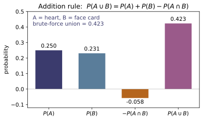
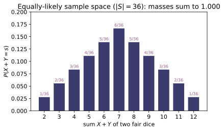
Example problems
On the two-dice space let $A=\{\text{first die even}\}$ and $B=\{\text{sum}\ge 8\}$. Write $(A\cup B)^c$ in words, and verify the De Morgan law $(A\cup B)^c=A^c\cap B^c$: an outcome avoids both "$A$ or $B$" exactly when it is in neither, i.e. the first die is odd and the sum is below $8$. Likewise $(A\cap B)^c=A^c\cup B^c$. These let you trade a hard event for an easier complement. Check: with S=set(product_sample_space(range(1,7),2)), A={w for w in S if w[0]%2==0}, B={w for w in S if sum(w)>=8}, complement_set(S, A|B) == complement_set(S,A) & complement_set(S,B) $=$ True, and the same for A&B vs A^c ∪ B^c.
Membership chases straight through the definitions: an outcome lies in $(A\cup B)^c$ exactly when it belongs to neither set,
which in words is "the first die is odd and the sum is below 8." Applying the same equivalence with $A^c,B^c$ in the roles of $A,B$ (and $(X^c)^c=X$) gives the dual $(A\cap B)^c=A^c\cup B^c$. These are pure set identities, true before any probability is assigned, and they let a stubborn event be traded for an easier complement. On the explicit $36$-outcome space that is exactly why complement_set(S, A|B) == complement_set(S,A) & complement_set(S,B) returns True, with the companion identity for A&B versus $A^c\cup B^c$ equally True.
Using $P(A)=|A|/|S|$ on the $36$-outcome space, count the ways to make each total. There are $6$ ways to roll a $7$ — $(1,6),(2,5),\dots,(6,1)$ — so $P(\text{sum}=7) =6/36=1/6$; and only $(5,6),(6,5)$ give $11$, so $P(\text{sum}=11)=2/36=1/18$. Check: event_probability(S, lambda w: sum(w)==7) $=0.16667$; event_probability(S, lambda w: sum(w)==11) $=0.055556$; prob_equally_likely(6, 36) $=1/6$.
Each of the $36$ ordered outcomes $(a,b)$ is equally likely with weight $1/36$, so $P(A)=|A|/36$. Listing the favorable pairs, a total of $7$ comes from $(1,6),(2,5),(3,4),(4,3),(5,2),(6,1)$ — six ways — while $11$ allows only $(5,6),(6,5)$:
Counting favorable outcomes over $|S|=36$ is the whole computation. This matches event_probability(S, lambda w: sum(w)==7)$=0.16667$, event_probability(S, lambda w: sum(w)==11)$=0.055556$, and prob_equally_likely(6, 36)$=1/6$.
Find $P(\text{at least one die shows a }6)$ for two dice. Direct counting is fussy (inclusion–exclusion of two events), but the complement is easy: "no $6$" means each die is one of $\{1,\dots,5\}$, so $P(\text{no }6)=(5/6)^2=25/36$, hence $$P(\text{at least one }6)=1-\tfrac{25}{36}=\tfrac{11}{36}=0.30556.$$ This complement trick (§4) is the standard route to every "at least one" event. Check: with no6 = event_probability(S, lambda w: w[0]!=6 and w[1]!=6) $=25/36$, complement(no6) $=0.30556$; equivalently event_probability(S, lambda w: w[0]==6 or w[1]==6) $=0.30556$.
Counting "at least one $6$" directly means inclusion–exclusion of the two single-die events; its complement "no die is a $6$" is far easier. On the product space the dice are independent and each avoids $6$ with probability $5/6$, so $P(\text{no }6)=(5/6)^2=25/36$. The complement rule $P(A)=1-P(A^c)$ then finishes it:
This complement trick is the standard route to any "at least one" event. It matches complement(no6)$=0.30556$ (with no6$=25/36$) and the direct count event_probability(S, lambda w: w[0]==6 or w[1]==6)$=0.30556$.
Draw one card from a standard deck. Let $H=\{\heartsuit\}$ ($13$ cards) and $F=\{\text{face card: J, Q, K}\}$ ($12$ cards). They overlap in the $3$ hearts that are face cards, so the addition rule gives $$P(H\cup F)=P(H)+P(F)-P(H\cap F)=\tfrac{13}{52}+\tfrac{12}{52}-\tfrac{3}{52} =\tfrac{22}{52}=0.42308.$$ Adding $13+12$ would double-count those $3$ cards; subtracting $P(H\cap F)$ fixes it. Check: union_two(13/52, 12/52, 3/52) $=0.42308$, equal to the brute-force event_probability(standard_deck(), lambda c: c[1]=="hearts" or c[0] in ("J","Q","K")). Inverting, intersection_from_union(13/52, 12/52, 22/52) $=3/52$.
Hearts and face cards share the three cards $\text{J}\heartsuit,\text{Q}\heartsuit,\text{K}\heartsuit$, which a naive $13+12=25$ would count twice. The addition rule removes that overlap exactly once:
matching the direct count $|H\cup F|=13+12-3=22$ cards. Rearranging the same identity recovers the overlap, $P(H\cap F)=P(H)+P(F)-P(H\cup F)=\tfrac{13+12-22}{52}=\tfrac{3}{52}$. This matches union_two(13/52, 12/52, 3/52)$=0.42308$ (equal to brute force) and intersection_from_union(13/52, 12/52, 22/52)$=3/52$.
On the dice space let $A=\{\text{first die even}\}$, $B=\{\text{sum}\ge 8\}$, $C=\{\text{second die}=3\}$. The marginals are $P(A)=18/36$, $P(B)=15/36$, $P(C)=6/36$; the pairwise overlaps $P(A\cap B)=9/36$, $P(A\cap C)=3/36$, $P(B\cap C)=2/36$; and the triple $P(A\cap B\cap C)=1/36$. Then $$P(A\cup B\cup C)=\tfrac{18+15+6}{36}-\tfrac{9+3+2}{36}+\tfrac{1}{36} =\tfrac{39-14+1}{36}=\tfrac{26}{36}=0.72222.$$ Note Boole's bound $P(A)+P(B)+P(C)=39/36=1.0833>1$ is a (loose but valid) upper bound. Check: union_three(18/36,15/36,6/36, 9/36,3/36,2/36, 1/36) $=0.72222$, equal to brute event_probability(S, lambda w: A or B or C); and boole_bound([18/36,15/36,6/36]) $=1.0833$.
Inclusion–exclusion alternates the sums $S_k$ of all $k$-fold intersection probabilities. Counting outcomes over $36$, the marginals give $S_1=\tfrac{18+15+6}{36}$, the three pairwise overlaps $S_2=\tfrac{9+3+2}{36}$, and the triple $S_3=\tfrac1{36}$ (only $(6,3)$ has the first die even, the second equal to $3$, and sum $\ge8$). Then
Truncating after $S_1=39/36=1.0833$ is Boole's bound — a valid upper bound that here exceeds $1$ precisely because the overlaps are still double-counted. This matches union_three(...)$=0.72222$ (equal to brute force) and boole_bound([18/36,15/36,6/36])$=1.0833$.
Take the four dice events $A_1=\{\text{first}\le 3\}$, $A_2=\{\text{second}\le 3\}$, $A_3=\{\text{even sum}\}$, $A_4=\{\text{doubles}\}$. The general law $P(\bigcup A_i)=S_1-S_2+S_3-S_4$ with $S_k$ the sum of all $k$-fold intersection probabilities gives $P(\bigcup A_i)=32/36=0.88889$. Check: build singles, pairs, triples from event_probability and the single quad $=P(A_1\cap A_2\cap A_3\cap A_4)$, then inclusion_exclusion(singles, pairs, triples, quad) equals the brute-force union $=0.88889$ (see test_inclusion_exclusion_four_vs_brute).
The general law is $P\!\left(\bigcup_i A_i\right)=S_1-S_2+S_3-S_4$, with $S_k$ the sum of every $k$-fold intersection probability. Counting outcomes over $36$ (so each $S_k$ is in units of $1/36$): $S_1=18+18+18+6=60$, $S_2=9+9+3+9+3+6=39$, $S_3=5+3+3+3=14$, and $S_4=3$, giving
As a check, the complement (in none of the four events) is the $4$ outcomes with both dice $\ge4$, odd sum, and not a double — $(4,5),(5,4),(5,6),(6,5)$ — so $1-4/36=32/36$ as well. This matches inclusion_exclusion(singles, pairs, triples, quad)$=0.88889$, equal to the brute-force union.
Spin a pointer to a uniform angle, modeled as $X\sim\text{Uniform}(0,1)$ with density $f(x)=1$ on $[0,1]$. Probabilities are areas: $P([c,d])=d-c$, and the axioms are unchanged ($\int_0^1 f=1$, disjoint intervals add). Verify the addition rule for the overlapping intervals $I_1=[0.2,0.6]$, $I_2=[0.4,0.8]$: $P(I_1)=P(I_2)=0.4$, overlap $P([0.4,0.6])=0.2$, so $P(I_1\cup I_2)=0.4+0.4-0.2=0.6=P([0.2,0.8])$. Check: with f = lambda x: uniform_pdf(x,0,1), prob_continuous(f,0,1) $=1.0$; union_two(prob_continuous(f,0.2,0.6), prob_continuous(f,0.4,0.8), prob_continuous(f,0.4,0.6)) $=0.6=$ prob_continuous(f,0.2,0.8).
For a continuous model probabilities are integrals of the density: $P([c,d])=\int_c^d f=\int_c^d 1\,dx=d-c$, and $\int_0^1 f=1$ is Axiom A2. The two intervals have lengths $P(I_1)=0.6-0.2=0.4$ and $P(I_2)=0.8-0.4=0.4$, overlapping on $[0.4,0.6]$ of length $0.2$, so the addition rule gives
identical to the direct length of $I_1\cup I_2=[0.2,0.8]$, namely $0.8-0.2=0.6$. The axioms carry over unchanged from the finite case — only sums become integrals. This matches prob_continuous(f,0,1)$=1.0$ and union_two(...)$=0.6=$prob_continuous(f,0.2,0.8).
~QM-02A qubit in the (unnormalized) state $\psi=(3,\,4i)$ is measured. The Born rule $P_i=|\psi_i|^2/\sum_j|\psi_j|^2$ assigns outcome probabilities $$P_0=\frac{|3|^2}{|3|^2+|4i|^2}=\frac{9}{25}=0.36,\qquad P_1=\frac{|4i|^2}{25}=\frac{16}{25}=0.64,$$ with $P_0+P_1=1$ (Axiom A2 = normalization $\langle\psi|\psi\rangle$) and each $P_i\ge 0$ (Axiom A1). An equal superposition $(1,1,1,1)$ instead gives the uniform $P_i=1/4$ — the equally-likely measure of §7. Check: born_probabilities([3.0, 4.0j]) $=[0.36, 0.64]$ summing to $1.0$; born_probabilities([1,1,1,1]) $=[0.25,0.25,0.25,0.25]$.
The Born rule weights each outcome by $|\psi_i|^2$ and normalizes by $Z=\sum_j|\psi_j|^2=\langle\psi|\psi\rangle$. For $\psi=(3,\,4i)$ the moduli are $|3|^2=9$ and $|4i|^2=16$ (the phase $i$ drops out of $|\cdot|$), so $Z=25$ and
Each $P_i\ge0$ is Axiom A1 and the sum-to-one is Axiom A2 — Kolmogorov's axioms applied to an amplitude vector. An equal superposition $(1,1,1,1)$ has $Z=4$ and every $P_i=1/4$, the equally-likely measure of §7. This matches born_probabilities([3.0, 4.0j])$=[0.36, 0.64]$ and born_probabilities([1,1,1,1])$=[0.25,0.25,0.25,0.25]$.
Run the worked code: cd ST/ST-01_probability_axioms/code && python3 probability_axioms.py
ST-02 — Counting Techniques
Probability Theory trunk · ST/ST-02_counting · open in the Teaching Network
Counting answers "how many ways?" by four sampling schemes — draw $k$ objects from $n$, distinguishing ordered/unordered and with/without replacement. The multiplication principle $N=\prod_i n_i$ underlies all of them. Ordered selections give the permutations $P(n,k)=n!/(n-k)!$ (and $n^k$ with replacement); dividing out the $k!$ orderings gives the combinations $\binom{n}{k}=n!/[k!(n-k)!]$; allowing repeats in an unordered draw gives stars and bars $\binom{n+k-1}{k}$. Counting arrangements of $n$ objects that fall into $m$ indistinguishable classes gives the multinomial coefficient $\binom{n}{k_1,\dots,k_m}=n!/(k_1!\cdots k_m!)$ — the same number ~SM-01 calls the multiplicity $W$. The binomial coefficients tile Pascal's triangle via $\binom{n}{k}=\binom{n-1}{k-1}+\binom{n-1}{k}$ and assemble the binomial theorem $(x+y)^n=\sum_k\binom{n}{k}x^k y^{n-k}$, whose $x=p,\ y=1-p$ case is the normalization $\sum_k\binom{n}{k}p^k(1-p)^{n-k}=1$ of the binomial pmf (~ST-07).
Key equations
Figures
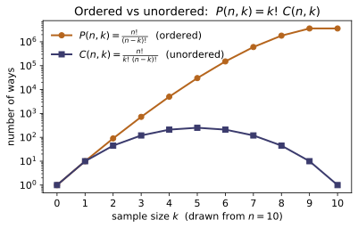
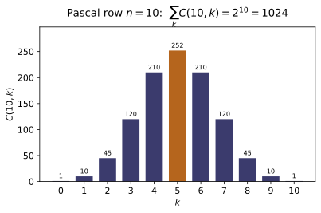
Example problems
A jar holds $n=5$ distinct tokens; draw $k=3$. Count the outcomes when the draw is (a) ordered with replacement, (b) ordered without replacement, (c) unordered without replacement, (d) unordered with replacement. Show these are $n^k$, $P(n,k)=n!/(n-k)!$, $\binom{n}{k}$, and $\binom{n+k-1}{k}$, and explain the strict ordering $\binom{n}{k}\le P(n,k)\le n^k$ (removing order divides by $k!$; removing replacement removes the repeated draws). Then count the license plates of 2 letters followed by 3 digits (ordered, with replacement, mixed alphabets): $26^2\cdot10^3$. Check: ordered_with_replacement(5,3)$=125$, permutations(5,3)$=60$, combinations(5,3)$=10$, combinations_with_replacement(5,3)$=35$; multiplication_principle([26,26,10,10,10])$=676000$.
With $n=5,\ k=3$: (a) each of the $3$ slots can be any of the $5$ tokens, $n^k=5^3=125$; (b) drawing without reuse, $5\cdot4\cdot3=60=P(5,3)$; (c) each unordered triple is counted $3!$ times among those ordered draws, so $\binom53=60/3!=10$; (d) unordered with replacement is stars-and-bars, $\binom{n+k-1}{k}=\binom73=35$. The chain $\binom nk\le P(n,k)\le n^k$ reads $10\le60\le125$ — removing order divides by $k!$, while allowing replacement adds the repeated-token draws. License plates multiply independent slots, $26^2\cdot10^3=676000$. This matches ordered_with_replacement(5,3)$=125$, permutations(5,3)$=60$, combinations(5,3)$=10$, combinations_with_replacement(5,3)$=35$, and multiplication_principle([26,26,10,10,10])$=676000$.
Ten sprinters race; gold, silver, and bronze medals are awarded. How many distinct podiums are possible? This is an ordered selection of $k=3$ from $n=10$ without replacement, $P(10,3)=10\cdot9\cdot8=10!/7!$. Verify the "choose then order" identity $P(n,k)=\binom{n}{k}\,k!$ by counting the same podium as: pick the 3 medalists ($\binom{10}{3}$ ways), then order them on the podium ($3!$ ways). Check: permutations(10,3)$=720$ and combinations(10,3)*factorial(3) $=120\cdot6=720$.
A podium is an ordered choice of $3$ from $10$ without replacement, so by the multiplication principle the gold, silver, and bronze slots fill in $10\cdot9\cdot8=720=10!/7!$ ways. Counting the same podiums "choose then order" — pick the $3$ medalists in $\binom{10}{3}=120$ ways, then arrange them across the three distinct medals in $3!=6$ ways — gives the identity
This matches permutations(10,3)$=720$ and combinations(10,3)*factorial(3)$=120\cdot6=720$.
(a) How many 5-card hands can be dealt from a 52-card deck? Order is irrelevant, no replacement: $\binom{52}{5}$. (b) A committee of 3 is chosen from 12 people; show that choosing the 3 members ($\binom{12}{3}$) equals choosing the 9 non-members ($\binom{12}{9}$) — the symmetry $\binom{n}{k}=\binom{n}{n-k}$. Check: combinations(52,5)$=2598960$; combinations(12,3)$=$combinations(12,9)$=220$.
(a) A hand is an unordered choice of $5$ from $52$ without replacement, $\binom{52}{5}=\frac{52!}{5!\,47!}=2{,}598{,}960$. (b) Choosing the $3$ committee members is the very same act as choosing the $9$ people left off it — a bijection between $3$-subsets and their complements — so
the symmetry $\binom nk=\binom{n}{n-k}$, visible because $\frac{n!}{k!(n-k)!}$ is unchanged under $k\leftrightarrow n-k$. This matches combinations(52,5)$=2598960$ and combinations(12,3)$=$combinations(12,9)$=220$.
Ten identical candies are handed out to 4 children. (a) If a child may receive none, count the distributions: non-negative solutions of $x_1+x_2+x_3+x_4=10$, which is $\binom{10+4-1}{4-1}=\binom{13}{3}$. (b) If every child must get at least one, give one to each first and distribute the remaining $6$ freely: $\binom{6+4-1}{4-1}=\binom{9}{3}$. Note this count is exactly the ~SM-01 Einstein-solid multiplicity $\Omega=\binom{q+N-1}{q}$ with $q=10$ quanta, $N=4$ oscillators. Check: stars_and_bars(10,4)$=286$ and stars_and_bars(6,4)$=84$.
(a) Lay the $10$ identical candies in a row and insert $4-1=3$ dividers to split them among the four children; choosing the divider positions among the $10+3$ symbols gives
non-negative solutions of $x_1+x_2+x_3+x_4=10$. (b) If every child must get one, hand out four candies first, then distribute the remaining $6$ freely, $\binom{6+4-1}{3}=\binom93=84$. This is exactly the Einstein-solid multiplicity $\Omega=\binom{q+N-1}{q}$ with $q=10,\ N=4$ (here $\binom{13}{10}=\binom{13}{3}$). This matches stars_and_bars(10,4)$=286$ and stars_and_bars(6,4)$=84$.
Count the distinguishable arrangements of the letters of MISSISSIPPI (1 M, 4 I, 4 S, 2 P, total 11): of the $11!$ orderings of distinct tiles, those permuting like letters coincide, an overcount of $1!\,4!\,4!\,2!$, giving $\binom{11}{1,4,4,2}= 11!/(1!\,4!\,4!\,2!)$. Do the same for STATISTICS (3 S, 3 T, 1 A, 2 I, 1 C, total 10). Recall this multinomial coefficient is the statistical multiplicity $W$ of ~SM-01. Check: multinomial(11,[1,4,4,2])$=34650$ and multinomial(10,[3,3,1,2,1])$=50400$.
Treating the $11$ tiles of MISSISSIPPI as distinct gives $11!$ orderings, but permuting the identical letters among themselves ($1$ M, $4$ I, $4$ S, $2$ P) never changes the word, an overcount of $1!\,4!\,4!\,2!$:
The same multinomial count for STATISTICS ($3$ S, $3$ T, $1$ A, $2$ I, $1$ C) is $\frac{10!}{3!\,3!\,1!\,2!\,1!}=\frac{3{,}628{,}800}{6\cdot6\cdot2}=50{,}400$ — the statistical multiplicity $W$ of ~SM-01. This matches multinomial(11,[1,4,4,2])$=34650$ and multinomial(10,[3,3,1,2,1])$=50400$.
~ST-07 normalizationPSU L3.2; Ross Ch.1(a) Build row 6 of Pascal's triangle by the rule $\binom{6}{k}=\binom{5}{k-1}+ \binom{5}{k}$ and confirm the row sums to $2^6$ (the number of subsets of a 6-set, from $(1+1)^6$); confirm the alternating sum is $0$. (b) Specialize the binomial theorem to $x=p,\,y=1-p$ to show $\sum_{k=0}^{n}\binom{n}{k}p^k(1-p)^{n-k}=1$ — this is the normalization of the binomial pmf of ~ST-07, with $\binom{n}{k}$ counting the orderings of $k$ successes in $n$ trials. Check: binomial_coefficient_sum(6)$=64$, binomial_coefficient_sum(6, signed=True)$=0$, binomial_coefficient_sum(10)$=1024$; binomial_theorem_check(0.3,0.7,6)[0]$=1.0$.
(a) Pascal's rule $\binom6k=\binom5{k-1}+\binom5k$ turns row $5=[1,5,10,10,5,1]$ into row $6=[1,6,15,20,15,6,1]$. Setting $x=y=1$ in $(x+y)^6=\sum_k\binom6k x^ky^{6-k}$ sums the row to $2^6=64$ (the number of subsets of a $6$-set); setting $x=1,\,y=-1$ gives the alternating sum $(1-1)^6=0$. (b) Specializing $x=p,\ y=1-p$,
which is the normalization of the binomial pmf of ~ST-07, with $\binom nk$ counting the orderings of $k$ successes among $n$ trials. This matches binomial_coefficient_sum(6)$=64$, binomial_coefficient_sum(6, signed=True)$=0$, binomial_coefficient_sum(10)$=1024$, and binomial_theorem_check(0.3,0.7,6)[0]$=1.0$.
~ST-11The discrete $\binom{n}{k}$ has a continuous counterpart through the Beta integral $$\int_0^1 x^{k}(1-x)^{\,n-k}\,dx=\frac{k!\,(n-k)!}{(n+1)!}=\frac{1}{(n+1)\binom{n}{k}}.$$ Take $n=5,\ k=2$: predict $1/[(6)\binom{5}{2}]=1/60$, then integrate numerically. Separately confirm the factorial is the Gamma integral $\Gamma(6)=\int_0^\infty t^5 e^{-t}dt=5!$. Check: beta_integral(2,5)$=1/60\approx0.0166667$ and _integrate(lambda x: x2(1-x)3, 0, 1)$\approx0.0166667$; _integrate(lambda t: t**5exp(-t), 0, 60)$\approx120=$factorial(5).
The Beta integral evaluates through the Gamma function, using $\Gamma(m+1)=m!$:
For $n=5,\ k=2$, $\binom52=10$ gives $\frac{1}{6\cdot10}=\frac1{60}\approx0.0166667$. Separately the factorial is a Gamma integral, $\Gamma(6)=\int_0^\infty t^5e^{-t}\,dt=5!=120$ (repeated integration by parts — the recursion $\Gamma(z+1)=z\,\Gamma(z)$). This matches beta_integral(2,5)$=1/60\approx0.0166667$, the numerical _integrate(lambda x: x2(1-x)3, 0, 1)$\approx0.0166667$, and _integrate(lambda t: t**5exp(-t), 0, 60)$\approx120=$factorial(5).
Run the worked code: cd ST/ST-02_counting/code && python3 counting.py
ST-03 — Conditional probability & independence
Probability Theory trunk · ST/ST-03_conditional_independence · open in the Teaching Network
Conditional probability is defined by $P(A\mid B)=P(A\cap B)/P(B)$ for $P(B)>0$: knowing $B$ occurred restricts the sample space to $B$ and renormalizes. Rearranging gives the multiplication rule $P(A\cap B)=P(B)\,P(A\mid B)$, which iterates into the chain rule $P(A_1\cap\dots\cap A_n)=P(A_1)P(A_2\mid A_1)\cdots P(A_n\mid A_1\cap\dots\cap A_{n-1})$ — the engine behind drawing cards without replacement and behind tree diagrams. Two events are independent when conditioning changes nothing, $P(A\mid B)=P(A)$, equivalently the symmetric product rule $P(A\cap B)=P(A)P(B)$. For three or more events independence splits into pairwise (every pair factors) and mutual (every sub-collection factors); the classic two-coin example shows pairwise $\not\Rightarrow$ mutual. Finally, for fixed $B$ the map $A\mapsto P(A\mid B)$ is itself a probability measure — it satisfies the ~ST-01 axioms — which is what licenses conditional independence $P(A\cap B\mid C)=P(A\mid C)P(B\mid C)$ and the whole of ~ST-04.
Key equations
Figures
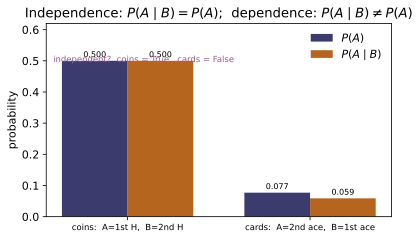
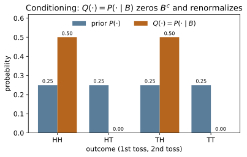
Example problems
Two fair coins are tossed. Using $P(A\mid B)=P(A\cap B)/P(B)$, find (a) the probability the first toss is heads given the second is heads, and (b) the probability the two tosses agree ($C$) given the first is heads ($A$). For (a), $P(A\cap B)=P(HH)=\tfrac14$ and $P(B)=\tfrac12$, so $P(A\mid B)=\tfrac14/\tfrac12 =\tfrac12$. For (b), $C\cap A=\{HH\}$ so $P(C\mid A)=\tfrac{1/4}{1/2}=\tfrac12$. In both cases the conditional equals the marginal $\tfrac12$ — heralding independence (P3). Check: m,A,B,C = two_coin_space(); conditional_event(m,A,B) $=0.5$ and conditional_event(m,C,A) $=0.5$.
Conditioning renormalizes by the probability of the conditioning event. With each of $\{HH,HT,TH,TT\}$ at $1/4$: (a) $A\cap B=\{HH\}$ and $B=\{HH,TH\}$, so
(b) with $C=\{HH,TT\}$ and $A=\{HH,HT\}$, the overlap is $C\cap A=\{HH\}$, so $P(C\mid A)=\frac{1/4}{1/2}=\frac12$. In both cases the conditional equals the unconditional $\tfrac12$ — the signature of independence taken up in P3. This matches conditional_event(m,A,B)$=0.5$ and conditional_event(m,C,A)$=0.5$.
Draw two cards from a $52$-card deck without replacement. By the multiplication rule $P(\text{ace}_1\cap\text{ace}_2)=P(\text{ace}_1)\,P(\text{ace}_2\mid \text{ace}_1)$. The first factor is $4/52$; given an ace is gone, $3$ aces remain among $51$ cards, so the second factor is $3/51$. Hence $$P(\text{two aces})=\frac{4}{52}\cdot\frac{3}{51}=\frac{12}{2652}=\frac{1}{221} \approx0.004525 .$$ The second factor differs from $4/52$, so the draws are dependent. Check: deck,fa,sa = two_card_deck(); chain_rule_factors(deck,[fa,sa]) $=[0.07692\ldots, 0.05882\ldots]$ (i.e. $4/52,\,3/51$); chain_rule(_) $=0.0045249=$ prob_inter(deck,fa,sa); and independent_events(deck,fa,sa) is False.
The multiplication rule splits the joint into a first draw times a conditional second draw. The first card is an ace with probability $4/52$; given that ace is gone, $3$ aces remain among the $51$ cards left, so the second factor is $3/51$:
Because the second factor $3/51=0.0588$ differs from $4/52=0.0769$, knowing the first draw changes the second — the draws are dependent. This matches chain_rule_factors(deck,[fa,sa])$=[0.07692,0.05882]$, chain_rule(_)$=0.0045249=$prob_inter(deck,fa,sa), and independent_events(deck,fa,sa) is False.
Show the two fair-coin events $A$ (first $H$) and $B$ (second $H$) are independent in both senses: the product rule $P(A\cap B)=\tfrac14=\tfrac12\cdot\tfrac12 =P(A)P(B)$, and the conditional rule $P(A\mid B)=\tfrac12=P(A)$. Then contrast with $A$ and its complement $A^{c}$ (first toss tails): these are disjoint, so $P(A\cap A^{c})=0\ne P(A)P(A^{c})=\tfrac14$ — disjoint events of positive probability are the opposite of independent. Check: independent_events(m,A,B) and conditional_equals_marginal(m,A,B) are both True; with Ac the complement of A, independent_events(m,A,Ac) is False (and prob_inter(m,A,Ac) $=0$).
For $A,B$ both forms of independence hold. The product rule:
and equivalently $P(A\mid B)=\frac{1/4}{1/2}=\tfrac12=P(A)$, so conditioning on $B$ reveals nothing about $A$. Disjointness is the opposite extreme: $A$ and $A^c$ cannot co-occur, so $P(A\cap A^c)=0$, yet $P(A)P(A^c)=\tfrac12\cdot\tfrac12=\tfrac14\neq0$. Two disjoint events of positive probability are maximally dependent — one occurring forbids the other. This matches independent_events(m,A,B) and conditional_equals_marginal(m,A,B) both True, while independent_events(m,A,Ac) is False (with prob_inter(m,A,Ac)$=0$).
For the two coins let $C=$ "the tosses agree." Show $A,B,C$ are pairwise independent — $P(A\cap B)=P(A\cap C)=P(B\cap C)=\tfrac14=$ (product of the two marginals each $\tfrac12$) — yet not mutually independent, because $A$ and $B$ together force $C$: $$P(A\cap B\cap C)=P(HH)=\tfrac14\ \ne\ P(A)P(B)P(C)=\tfrac18 .$$ This is why mutual independence ($2^{n}-n-1$ equations) is strictly stronger than pairwise ($\binom n2$ equations). Check: pairwise_independent(m,[A,B,C]) $=$ True while mutually_independent(m,[A,B,C]) $=$ False; prob(m, set(A)&set(B)&set(C)) $=0.25$ but prob(m,A)prob(m,B)prob(m,C) $=0.125$.
Every marginal is $\tfrac12$, and each pair meets only in $HH$: $A\cap B=A\cap C=B\cap C=\{HH\}$, so each pairwise probability is $\tfrac14=\tfrac12\cdot\tfrac12$ — pairwise independent. But $A$ and $B$ together (both heads) force agreement, so $A\cap B\subseteq C$ and
so the triple fails to factor. Mutual independence demands $2^3-3-1=4$ equations against the $\binom32=3$ of pairwise, hence is strictly stronger. This matches pairwise_independent(m,[A,B,C]) is True while mutually_independent(m,[A,B,C]) is False, with $0.25\neq0.125$.
~ST-01Fix $B=$ "second toss $H$" and define $Q(\cdot)=P(\cdot\mid B)$. Verify $Q$ obeys the Kolmogorov axioms (~ST-01): it is nonnegative, $Q(\Omega)=Q(B)=1$, and the outcomes outside $B$ carry zero mass, $Q(B^{c})=0$. Concretely the two outcomes in $B$, $HH$ and $TH$, each get reweighted to $P(\{o\})/P(B)=\tfrac{1/4}{1/2} =\tfrac12$, summing to $1$. Check: Q = conditional_measure(m,B); is_probability_measure(Q) $=$ True; prob(Q,B) $=1.0$; Q[('H','H')] $=0.5$; prob(Q,[o for o in m if o not in set(B)]) $=0.0$.
Define $Q(\cdot)=P(\cdot\mid B)$, i.e. $Q(\{o\})=P(\{o\})/P(B)$ for $o\in B$ and $0$ otherwise. Nonnegativity is inherited because $P\ge0$ and $P(B)>0$; normalization holds because the retained mass is exactly $P(B)$:
Concretely $B=\{HH,TH\}$, each outcome reweighted to $\frac{1/4}{1/2}=\tfrac12$, summing to $1$. So $Q$ satisfies the ~ST-01 Kolmogorov axioms — conditioning produces a genuine probability measure. This matches is_probability_measure(Q) is True, prob(Q,B)$=1.0$, Q[('H','H')]$=0.5$, and the outside-$B$ mass $=0.0$.
~ST-04Toss three independent fair bits and let $A,B,C$ be "bit $2$ is $1$," "bit $3$ is $1$," "bit $1$ is $1$." Inside the world where $C$ holds, $A$ and $B$ are still independent fair bits, so $P(A\cap B\mid C)=P(A\mid C)P(B\mid C)$. Compute $P(A\mid C)=P(B\mid C)=\tfrac12$ and $P(A\cap B\mid C)=\tfrac14=\tfrac12\cdot \tfrac12$ — conditional independence holds. Check: build the space outs=[(c,a,b) for c in (0,1) for a in (0,1) for b in (0,1)], mm=normalize({o:1.0 for o in outs}), with C,A,B the bit-indicators; then conditionally_independent_check(mm,A,B,C) $=$ True, P(A|C)=0.5, P(A∩B|C)=0.25.
The eight triples $(c,a,b)$ are equally likely. Conditioning on $C$ (bit $1$ equals $1$) keeps four equally likely outcomes; among them bit $2$ is $1$ in exactly half, so $P(A\mid C)=\tfrac12$, and likewise $P(B\mid C)=\tfrac12$. The lone outcome $(1,1,1)$ gives $P(A\cap B\cap C)=\tfrac18$, hence
So $A\perp B\mid C$ — independence survives inside the conditioned world, the structure ~ST-04 leans on. This matches conditionally_independent_check(mm,A,B,C) is True, P(A|C)=0.5, and P(A∩B|C)=0.25.
~ST-11Let $T\sim\text{Exp}(\lambda)$ with $\lambda=0.7$, survival $P(T>t)=e^{-\lambda t}$. Show the conditional "extra wait" forgets the elapsed time: for $s=2,\,t=3$, $$P(T>s+t\mid T>s)=\frac{P(T>5)}{P(T>2)}=\frac{e^{-0.7\cdot5}}{e^{-0.7\cdot2}} =e^{-0.7\cdot3}=e^{-2.1}\approx0.122456=P(T>t),$$ independent of $s$. The exponential is the unique continuous law with this property (continuous cousin of the geometric, ~ST-08). Check: memoryless_conditional(2.0,3.0,0.7) $\approx 0.122456$ $=$ exponential_survival(3.0,0.7) $= e^{-2.1}$.
With survival $P(T>t)=e^{-\lambda t}$, and using $\{T>s+t\}\subseteq\{T>s\}$ so the conditional's intersection is just $\{T>s+t\}$, the ratio collapses:
The elapsed time $s$ cancels completely. For $\lambda=0.7,\ t=3$ this is $e^{-2.1}\approx0.122456$, independent of $s=2$ — and the exponential is the only continuous law with this memoryless property. This matches memoryless_conditional(2.0,3.0,0.7)$\approx0.122456=$exponential_survival(3.0,0.7).
~ST-13Let $X,Y$ be independent $\text{Uniform}(0,1)$, joint density $f(x,y)=1$ on the unit square. Show the product event factors, $$P(X<a,\,Y<b)=\int_0^a\!\!\int_0^b 1\,dy\,dx=ab=P(X<a)\,P(Y<b),$$ so for $a=0.6,\,b=0.4$ the joint is $0.24$, and the conditional equals the marginal, $P(X<a\mid Y<b)=ab/b=a=0.6$. This factorization is independence of random variables (~ST-13). Check: prob_rect(uniform_square_joint,0.0,0.6,0.0,0.4) $\approx0.24$ and conditional(0.24, 0.4) $=0.6$.
Independence of $X,Y$ means the joint density factors, $f(x,y)=1=f_X(x)f_Y(y)$ on the unit square, so the rectangle probability separates into a product of one-dimensional integrals:
For $a=0.6,\ b=0.4$ this is $0.24$. The conditional then strips off the $Y$-factor, $P(X<a\mid Y<b)=\frac{ab}{b}=a=0.6=P(X<a)$ — conditional equals marginal, which is independence of the random variables (~ST-13). This matches prob_rect(uniform_square_joint,0.0,0.6,0.0,0.4)$\approx0.24$ and conditional(0.24, 0.4)$=0.6$.
Run the worked code: cd ST/ST-03_conditional_independence/code && python3 conditional_independence.py
ST-04 — Bayes' Theorem
Probability Theory trunk · ST/ST-04_bayes · open in the Teaching Network
A partition $\{A_1,\dots,A_k\}$ chops the sample space into mutually exclusive, collectively exhaustive cells. The law of total probability slices any event $B$ through the partition, $$P(B)=\sum_i P(B\mid A_i)\,P(A_i),$$ a weighted average of conditional probabilities with the priors $P(A_i)$ as weights. Bayes' theorem divides one joint term by that whole sum to reverse the conditioning, $$P(A_i\mid B)=\frac{P(B\mid A_i)\,P(A_i)}{\sum_j P(B\mid A_j)\,P(A_j)} \;\propto\; \underbrace{P(A_i)}_{\text{prior}}\times\underbrace{P(B\mid A_i)}_{\text{likelihood}},$$ renormalized by the evidence $P(B)$. The signature application is the medical screen: combining a test's sensitivity $P(+\mid D)$ and specificity $P(-\mid H)$ with a disease's prevalence (base rate) yields the positive predictive value $P(D\mid +)$ — which is shockingly low for a rare disease even with a near-perfect test (the base-rate effect). Written in odds, Bayes is multiplicative — posterior odds $=$ prior odds $\times$ likelihood ratio — so independent evidence simply accumulates, and sequential updating (each posterior becomes the next prior) overturns the base rate after a few repeated positives. The same identity with $\sum\to\int$ drives continuous estimation: a Beta–Binomial conjugate update turns a $\mathrm{Beta}(a,b)$ prior on a coin's bias into a $\mathrm{Beta}(a+k,b+n-k)$ posterior, its evidence the continuous law of total probability $\int \pi(\theta)\,\mathcal L(\theta)\,d\theta$.
Key equations
Figures
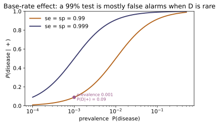
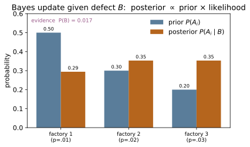
Example problems
Three factories supply a parts bin: factory 1 makes $50\%$ of the parts, factory 2 makes $30\%$, factory 3 makes $20\%$, with defect rates $1\%$, $2\%$, $3\%$ respectively. (a) Find $P(\text{defective})$ by the law of total probability $P(B)=\sum_i P(B\mid A_i)P(A_i)$. (b) A part is found defective — which factory most likely made it? Use $P(A_i\mid B)=P(B\mid A_i)P(A_i)/P(B)$. Note the posterior is not ordered like the defect rates, because factory 1's large share offsets its low defect rate. Check: total_probability([0.5,0.3,0.2],[0.01,0.02,0.03]) $=0.017$; bayes_posterior([0.5,0.3,0.2],[0.01,0.02,0.03]) $=[0.2941,0.3529,0.3529]$ (factories 2 and 3 tie as most likely).
(a) The law of total probability is the share-weighted average of the defect rates:
(b) Bayes divides each joint $P(B\mid A_i)P(A_i)$ by that evidence:
Although factory $3$ has the highest defect rate, its small output share offsets it, so factories $2$ and $3$ tie as the likeliest source rather than $3$ leading. This matches total_probability([0.5,0.3,0.2],[0.01,0.02,0.03])$=0.017$ and bayes_posterior([0.5,0.3,0.2],[0.01,0.02,0.03])$=[0.2941,0.3529,0.3529]$.
~ST-03Urn 1 holds 2 red and 3 blue balls; urn 2 holds 4 red and 1 blue. You pick an urn at random (prior $\tfrac12,\tfrac12$) and draw a red ball. Show $P(\text{red}\mid U_1)=\tfrac25$, $P(\text{red}\mid U_2)=\tfrac45$, so by total probability $P(\text{red})=\tfrac12\cdot\tfrac25+\tfrac12\cdot\tfrac45=\tfrac35$, and by Bayes $P(U_1\mid\text{red})=\dfrac{\tfrac12\cdot\tfrac25}{\tfrac35}=\tfrac13$. The red draw shifts belief from $\tfrac12$ toward the red-richer urn 2. Check: total_probability([0.5,0.5],[0.4,0.8]) $=0.6$; bayes_posterior([0.5,0.5],[0.4,0.8]) $=[0.3333,0.6667]$.
The likelihoods come straight from each urn: urn $1$ has $2$ red of $5$ so $P(\text{red}\mid U_1)=\tfrac25$, urn $2$ has $4$ red of $5$ so $P(\text{red}\mid U_2)=\tfrac45$. With equal priors the total probability of drawing red is
and Bayes reverses the draw:
The red ball pulls belief from the prior $\tfrac12$ down to $\tfrac13$, i.e. toward the red-richer urn $2$. This matches total_probability([0.5,0.5],[0.4,0.8])$=0.6$ and bayes_posterior([0.5,0.5],[0.4,0.8])$=[0.3333,0.6667]$.
A disease has prevalence $\pi=0.001$. A test has sensitivity $se=P(+\mid D)=0.99$ and specificity $sp=P(-\mid H)=0.99$. (a) Compute the positive predictive value $\mathrm{PPV}=P(D\mid +)=\dfrac{se\,\pi}{se\,\pi+(1-sp)(1-\pi)}$ and explain why a $99\%$-accurate test gives only $\approx 9\%$ — the base-rate effect: false positives from the huge healthy majority swamp the few true positives. (b) Show PPV $=\tfrac12$ exactly when $\pi=1-sp$ (here $\pi=0.01$). (c) Compute the negative predictive value and note it is essentially $1$. Check: ppv(0.001,0.99,0.99) $=0.0902$; ppv(0.01,0.99,0.99) $=0.5$; npv(0.001,0.99,0.99) $\approx 0.99999$.
(a) Bayes against the partition $\{D,H\}$ gives the positive predictive value
The false-positive mass $(1-sp)(1-\pi)=0.01\cdot0.999\approx0.01$ from the vast healthy majority dwarfs the true-positive mass $se\,\pi\approx0.001$ — the base-rate effect. (b) With $se=sp$, $\mathrm{PPV}=\tfrac12$ requires $se\,\pi=(1-sp)(1-\pi)$, i.e. $\pi=1-sp=0.01$. (c) The negative predictive value $\mathrm{NPV}=\frac{sp(1-\pi)}{sp(1-\pi)+(1-se)\pi}\approx0.99999$ — a negative all but clears you. This matches ppv(0.001,0.99,0.99)$=0.0902$, ppv(0.01,0.99,0.99)$=0.5$, and npv(0.001,0.99,0.99)$\approx0.99999$.
Redo P3 in odds. The prior odds of disease are $\pi/(1-\pi)=0.001/0.999\approx 0.001$; the positive likelihood ratio is $LR^+=se/(1-sp)=0.99/0.01=99$. Multiply: posterior odds $=0.001\times 99\approx 0.099$, hence $P=\dfrac{0.099}{1.099}\approx 0.090$ — the same PPV, with the evidence $P(+)$ never computed because it cancels in the odds. Check: lr_positive(0.99,0.99) $=99$; odds_to_prob(prob_to_odds(0.001)*lr_positive(0.99,0.99)) $=0.0902$ $=$ ppv(0.001,0.99,0.99).
In odds form Bayes is multiplicative — posterior odds $=$ prior odds $\times LR^+$ — and the evidence $P(+)$ never appears because it cancels between the two hypotheses. The prior odds are $\frac{\pi}{1-\pi}=\frac{0.001}{0.999}\approx0.001001$ and the positive likelihood ratio is $LR^+=\frac{se}{1-sp}=\frac{0.99}{0.01}=99$, so
the very same PPV as P3, reached without ever computing $P(+)$. This matches lr_positive(0.99,0.99)$=99$ and odds_to_prob(prob_to_odds(0.001)*lr_positive(0.99,0.99))$=0.0902=$ppv(0.001,0.99,0.99).
The patient retests. Treating the tests as conditionally independent given disease status, each positive multiplies the odds by $LR^+=99$. (a) After two positives the odds are $0.001\times 99^2\approx 9.81$, so $P\approx 0.908$; after three, $0.001\times 99^3\approx 971$, so $P\approx 0.999$ — accumulating evidence overturns the tiny prior. (b) Show a positive then a negative returns belief to the base rate, because $LR^+\!\cdot LR^-=\dfrac{se}{1-sp}\cdot\dfrac{1-se}{sp}=1$ here. Check: with L = np.array([[0.01,0.99],[0.99,0.01]]), sequential_update([0.001,0.999], L, [1,1,1])[:,0] $=[0.001,0.0902,0.9075,0.999]$; sequential_update([0.001,0.999], L, [1,0])[:,0] $=[0.001,0.0902,0.001]$ (a $+$ and a $-$ cancel).
(a) Conditionally independent tests each multiply the odds by $LR^+=99$, so $m$ positives give (prior odds)$\times99^m$. Starting from prior odds $\approx0.001$,
so accumulating evidence overturns the tiny prior. (b) A positive then a negative multiplies the odds by $LR^+\!\cdot LR^-=\frac{se}{1-sp}\cdot\frac{1-se}{sp}=99\cdot\frac{0.01}{0.99}=1$, returning belief exactly to the base rate. This matches sequential_update([0.001,0.999], L, [1,1,1])[:,0]$=[0.001,0.0902,0.9075,0.999]$ and sequential_update([0.001,0.999], L, [1,0])[:,0]$=[0.001,0.0902,0.001]$.
~MA-19A coin of unknown bias $\theta$ gets a uniform prior $\mathrm{Beta}(1,1)$. You flip $8$ heads in $10$. Using conjugacy, the posterior is $\mathrm{Beta}(1+8,\,1+2)=\mathrm{Beta}(9,3)$, with mean $\tfrac{9}{12}=0.75$ — between the prior mean $0.5$ and the MLE $\tfrac{8}{10}=0.8$ (Bayesian shrinkage). The evidence $P(8\mid 10)=\int_0^1 1\cdot\binom{10}{8}\theta^8(1-\theta)^2\,d\theta =\binom{10}{8}B(9,3)=\tfrac{1}{11}$, the uniform-prior result that all $11$ counts are equally likely a priori. Check: posterior_beta_binomial(1,1,8,10) $=(9,3)$; beta_mean(9,3) $=0.75$; evidence_beta_binomial(1,1,8,10) $=0.090909=\tfrac{1}{11}$ (and equals the midpoint integral of beta_pdf(t,1,1)*binomial_likelihood(t,8,10)).
Posterior $\propto$ prior $\times$ likelihood, and since the Beta density and the binomial likelihood are both products of powers of $\theta$ and $1-\theta$, they conjugate:
i.e. $\mathrm{Beta}(1+8,\,1+2)=\mathrm{Beta}(9,3)$, with mean $\frac{9}{9+3}=0.75$ — between the prior mean $0.5$ and the MLE $\tfrac{8}{10}=0.8$ (Bayesian shrinkage). The evidence integrates the likelihood against the flat prior, $P(8\mid10)=\binom{10}{8}B(9,3)=\tfrac{1}{11}$, the uniform-prior statement that all $11$ counts $0,\dots,10$ are a priori equally likely. This matches posterior_beta_binomial(1,1,8,10)$=(9,3)$, beta_mean(9,3)$=0.75$, and evidence_beta_binomial(1,1,8,10)$=0.090909=\tfrac{1}{11}$.
For the rare disease of P3–P5, find the number $m$ of independent positive tests that first pushes $P(D)$ above $\tfrac12$, i.e. posterior odds $>1$. Solve $\pi/(1-\pi) \cdot (LR^+)^m>1$: $m>\dfrac{\ln\!\big((1-\pi)/\pi\big)}{\ln LR^+}=\dfrac{\ln 999} {\ln 99}\approx 1.50$, so $m=2$ positives are needed (one is not enough). This is the weight-of-evidence view: each positive adds $\log LR^+\approx 4.6$ nats of log-odds, and you need to overcome $\ln 999\approx 6.9$ of prior skepticism. Check: with L as in P5, sequential_update([0.001,0.999], L, [1,1])[:,0] $=[0.001,0.0902,0.9075]$ — below $0.5$ after one positive, above after two.
Each independent positive multiplies the odds by the same $LR^+$, so $m$ positives push $P(D)$ past $\tfrac12$ (posterior odds $>1$) once $\frac{\pi}{1-\pi}(LR^+)^m>1$. Taking logs,
so $m=2$ — a single positive is not enough. In log-odds (nats) each positive adds $\ln99\approx4.6$ and must overcome the prior skepticism $\ln999\approx6.9$; two give $9.2>6.9$, one gives only $4.6$. This matches sequential_update([0.001,0.999], L, [1,1])[:,0]$=[0.001,0.0902,0.9075]$ — below $0.5$ after one positive, above after two.
Run the worked code: cd ST/ST-04_bayes/code && python3 bayes.py
ST-05 — Discrete Random Variables & Expectation
Probability Theory trunk · ST/ST-05_discrete_rv_expectation · open in the Teaching Network
A discrete random variable $X$ assigns a real number to each outcome of a sample space and takes values in a countable support $S_X$. Its law is the probability mass function $f(x)=P(X=x)$, a valid pmf iff $f(x)\ge 0$ and $\sum_x f(x)=1$. The cumulative distribution function $F(x)=P(X\le x)=\sum_{x_i\le x}f(x_i)$ is a right-continuous step function that jumps by $f(x)$ at each support point and climbs from $0$ to $1$. The law of the unconscious statistician (LOTUS) computes the expectation of any function without first finding its law: $E[g(X)]=\sum_x g(x)\,f(x)$. Specializing $g$ gives the mean $\mu=E[X]$, the variance $\sigma^2=E[(X-\mu)^2]=E[X^2]-\mu^2$, the standard deviation $\sigma$, and the raw / central moments $\mu'_k=E[X^k]$, $\mu_k=E[(X-\mu)^k]$. Expectation is a linear operator: $E[aX+b]=aE[X]+b$ and $\mathrm{Var}(aX+b)=a^2\mathrm{Var}(X)$. The same weighted sum is the quantum expectation value $\langle A\rangle=\sum_a a|c_a|^2$ (~QM-06) and the thermodynamic ensemble average (~SM-01); the module closes with a one-line preview of the moment-generating function (~ST-06).
Key equations
Figures
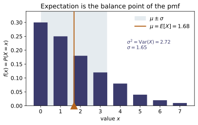
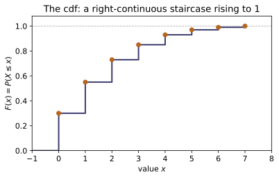
Example problems
Let $X\sim\text{Uniform}\{1,\dots,6\}$, so $f(x)=\tfrac16$ on its support. Verify it is a valid pmf ($\sum f=1$); compute the cdf value $F(3)=P(X\le3)$; the mean $\mu=\tfrac16(1+\cdots+6)=\tfrac{21}{6}$; the second raw moment $E[X^2]=\tfrac16(1+4+\cdots+36)=\tfrac{91}{6}$; and hence $\sigma^2=E[X^2]-\mu^2=\tfrac{91}{6}-\tfrac{49}{4}=\tfrac{35}{12}$. Check: with x=np.arange(1,7); p=np.full(6,1/6), pmf_is_valid(x,p) $=$ True; cdf_from_pmf(x,p)(3.0) $=0.5$; expectation(x,p) $=3.5$; raw_moment(x,p,2) $=15.1\overline{6}$; variance(x,p) $=2.91\overline{6}$; std(x,p) $\approx1.7078$.
All six masses equal $\tfrac16\ge0$ and sum to $6\cdot\tfrac16=1$, so $f$ is a valid pmf. The cdf accumulates jumps of $\tfrac16$, so
The mean and second raw moment are equally-weighted averages,
The computational formula then gives
so $\sigma=\sqrt{35/12}\approx1.7078$. These reproduce pmf_is_valid$=$True, cdf_from_pmf(...)(3.0)$=0.5$, expectation$=3.5$, raw_moment(...,2)$=15.1\overline{6}$, variance$=2.91\overline{6}$ and std$\approx1.7078$.
For the same die, compute $E[(X-\mu)^2]$ directly by LOTUS with $g(x)=(x-3.5)^2$ — summing $g(x)\,f(x)$ over $x=1,\dots,6$ — and confirm it equals the variance from P1. This is the definitional route $\sigma^2=E[(X-\mu)^2]$; P1 used the computational route $E[X^2]-\mu^2$. (They are forced equal by the algebra of §5.) Check: expectation_of(lambda t:(t-3.5)**2, x, p) $=2.91\overline{6}=$ variance(x,p); equivalently central_moment(x,p,2) $=2.91\overline{6}$.
LOTUS evaluates $E[g(X)]=\sum_x g(x)f(x)$ on the old pmf with $g(x)=(x-3.5)^2$. The six deviations $x-3.5$ are $\pm2.5,\pm1.5,\pm0.5$, so the squared deviations $6.25,2.25,0.25$ each occur twice:
This equals the computational variance of P1 because expanding the square and using linearity gives $E[(X-\mu)^2]=E[X^2]-2\mu E[X]+\mu^2=E[X^2]-\mu^2$ — the two routes are algebraically identical. Hence expectation_of(lambda t:(t-3.5)**2, x, p)$=2.91\overline{6}=$ variance(x,p)$=$central_moment(x,p,2).
~ST-07Let $X$ be Bernoulli$(p)$: $f(1)=p$, $f(0)=1-p$. Show $\mu=E[X]=0\cdot(1-p)+1\cdot p =p$, and since $X^2=X$ here, $E[X^2]=p$ too, so $\sigma^2=E[X^2]-\mu^2=p-p^2=p(1-p)$ — maximal at $p=\tfrac12$. This single trial is the atom the binomial of ~ST-07 is built from. Check: with bx=np.array([0.,1]); bp=np.array([.7,.3]) ($p=0.3$), expectation(bx,bp) $=0.3$ and variance(bx,bp) $=0.21=p(1-p)$.
With only two atoms,
Since $X\in\{0,1\}$ obeys $X^2=X$ (as $0^2=0$ and $1^2=1$), the second moment is $E[X^2]=E[X]=p$, and the computational formula gives
This is maximal at $p=\tfrac12$ (where $\tfrac{d}{dp}[p-p^2]=1-2p=0$) and vanishes at $p=0,1$. At $p=0.3$ the mass split is $(0.7,0.3)$, giving expectation(bx,bp)$=0.3$ and variance(bx,bp)$=0.3(0.7)=0.21=p(1-p)$.
Let $X$ take values $\{-1,0,2\}$ with $f=\{0.2,0.5,0.3\}$. Compute $\mu=E[X]= -0.2+0+0.6=0.4$ and $E[X^2]=0.2(1)+0.5(0)+0.3(4)=1.4$, hence $\sigma^2=1.4-(0.4)^2=1.24$ and $\sigma=\sqrt{1.24}\approx1.1136$. Verify the computational formula $E[X^2]-\mu^2$ agrees with the central moment $E[(X-\mu)^2]$. Check: with cx=np.array([-1.,0,2]); cp=np.array([.2,.5,.3]), expectation(cx,cp) $=0.4$; raw_moment(cx,cp,2) $=1.4$; variance(cx,cp) $=1.24$ $=$ central_moment(cx,cp,2); std(cx,cp) $\approx1.1136$.
Direct weighted sums give
The computational formula yields $\sigma^2=E[X^2]-\mu^2=1.4-0.16=1.24$ and $\sigma=\sqrt{1.24}\approx1.1136$. The definitional route agrees term by term,
confirming $E[(X-\mu)^2]=E[X^2]-\mu^2$. These are expectation(cx,cp)$=0.4$, raw_moment(cx,cp,2)$=1.4$, variance(cx,cp)$=1.24=$central_moment(cx,cp,2), and std(cx,cp)$\approx1.1136$.
For the $X$ of P4, let $Y=3X-4$. Use $E[aX+b]=aE[X]+b$ to get $E[Y]=3(0.4)-4=-2.8$, and $\mathrm{Var}(aX+b)=a^2\mathrm{Var}(X)$ to get $\mathrm{Var}(Y)=9(1.24)=11.16$, so $\sigma_Y=3\sigma_X\approx3.341$. Note the shift $b=-4$ moves the mean but leaves the variance untouched. Check: yx,yp = linear_transform(3.,-4.,cx,cp); expectation(yx,yp) $=-2.8$; variance(yx,yp) $=11.16$; std(yx,yp) $\approx3.341$. Changing $b$ alone (e.g. linear_transform(3.,96.,cx,cp)) leaves variance at $11.16$.
Linearity of expectation passes the additive constant straight through:
A shift cannot change spread while a rescale squares it, so
The additive constant is absent from the variance: replacing $-4$ by $+96$ moves the mean but leaves $\operatorname{Var}=11.16$ untouched. These match expectation(yx,yp)$=-2.8$, variance(yx,yp)$=11.16$, std(yx,yp)$\approx3.341$, and linear_transform(3.,96.,cx,cp) still gives variance$=11.16$.
Show the first central moment always vanishes, $\mu_1=E[X-\mu]=0$, and the zeroth raw moment is $\mu'_0=1$. Then compare skewness $\gamma_1=\mu_3/\sigma^3$: the fair die is symmetric about $3.5$, so $\gamma_1=0$; the RV of P4 is right-skewed (mass piled at $-1,0$ with a far atom at $2$), giving $\gamma_1>0$. Compute $\mu_3=\sum(x-0.4)^3 f=0.648$ and $\sigma^3=1.24^{3/2}\approx1.3808$, so $\gamma_1\approx0.469$. Check: central_moment(cx,cp,1) $=0$; raw_moment(cx,cp,0) $=1$; skewness(x,p) $=0.0$ (die); skewness(cx,cp) $\approx0.4693$.
The first central moment vanishes for any RV by linearity,
and the zeroth raw moment is normalization, $\mu'_0=E[X^0]=\sum_x f(x)=1$. Skewness $\gamma_1=\mu_3/\sigma^3$ measures asymmetry: the die is symmetric about $3.5$, so deviations pair off and $\mu_3=0\Rightarrow\gamma_1=0$. For the atoms $\{-1,0,2\}$,
and with $\sigma^3=1.24^{3/2}\approx1.3808$ this gives $\gamma_1=0.648/1.3808\approx0.469>0$ (right-skewed — the far atom at $2$ stretches the right tail). Matches central_moment(cx,cp,1)$=0$, raw_moment(cx,cp,0)$=1$, skewness(x,p)$=0$ (die) and skewness(cx,cp)$\approx0.4693$.
Let $X$ take values $\{0,1,2,3\}$ with $f=\{0.1,0.2,0.3,0.4\}$. Compute the mean two ways: directly $\mu=\sum x f(x)=0.2+0.6+1.2=2.0$; and by the tail-sum identity for a non-negative integer RV, $E[X]=\sum_{k\ge0}\big(1-F(k)\big)$ with $1-F(0)=0.9$, $1-F(1)=0.7$, $1-F(2)=0.4$ (and $0$ thereafter), summing to $2.0$. Check: with x=np.array([0.,1,2,3]); p=np.array([.1,.2,.3,.4]), expectation(x,p) $=2.0$ and mean_via_survival(x,p) $=2.0$; cdf_from_pmf(x,p)(1.0) $=0.3$.
The direct mean is the weighted sum
The tail-sum identity $E[X]=\sum_{k\ge0}\big(1-F(k)\big)$ rearranges the same total by counting each unit of $x$ once for every threshold it clears. Here $F(0)=0.1$, $F(1)=0.3$, $F(2)=0.6$, so
summing to $0.9+0.7+0.4=2.0$ — the same mean. Confirms expectation(x,p)$=2.0=$ mean_via_survival(x,p), with cdf_from_pmf(x,p)(1.0)$=F(1)=0.3$.
~ST-06For Bernoulli$(p)$ the moment-generating function is $M(t)=E[e^{tX}]=(1-p)+p\,e^{t}$. Check the normalization $M(0)=1$; differentiate to get $M'(t)=p\,e^t$, so $M'(0)=p=\mu$; and $M''(0)=p=E[X^2]$, recovering $\sigma^2=M''(0)-M'(0)^2=p-p^2$. This is the §8 preview made explicit, and the method ~ST-06 generalizes. Check: with the $p=0.3$ Bernoulli, mgf(bx,bp,0.0) $=1.0$; the finite difference (mgf(bx,bp,1e-6)-mgf(bx,bp,-1e-6))/2e-6 $\approx0.3=$ expectation(bx,bp).
For Bernoulli$(p)$ the mgf is the two-term sum
so $M(0)=(1-p)+p=1$ (the probabilities normalize). Every derivative of $pe^t$ is again $pe^t$, hence
and $\sigma^2=M''(0)-M'(0)^2=p-p^2=p(1-p)$, recovering P3 from the generator alone. At $p=0.3$, mgf(bx,bp,0.0)$=1.0$ and the symmetric difference (mgf(bx,bp,1e-6)-mgf(bx,bp,-1e-6))/2e-6$\approx0.3=$expectation(bx,bp)$=M'(0)$.
Run the worked code: cd ST/ST-05_discrete_rv_expectation/code && python3 discrete_rv_expectation.py
ST-06 — Moment-Generating Functions
Probability Theory trunk · ST/ST-06_mgf · open in the Teaching Network
For a random variable $X$ the moment-generating function is $M(t)=E[e^{tX}]$, a sum $\sum_x e^{tx}p(x)$ (discrete) or integral $\int e^{tx}f(x)\,dx$ (continuous), defined on the open $t$-interval about $0$ where it converges. Three theorems do the work. (1) Moments by differentiation: $M(t)=\sum_k E[X^k]\,t^k/k!$, so $M^{(k)}(0)=E[X^k]$; in particular $\mu=M'(0)$ and $\sigma^2=M''(0)-[M'(0)]^2$. (2) Sums multiply: for independent $X,Y$, $M_{X+Y}(t)=M_X(t)M_Y(t)$ — the mgf converts convolution into a product. (3) Uniqueness: an mgf that exists near $0$ determines the distribution. The cumulant generating function $K(t)=\ln M(t)$ gives $K'(0)=\mu$, $K''(0)=\sigma^2$, and cumulants of an independent sum add — the same object as the statistical-mechanics $\ln Z(\beta)$ (~SM-03). The code builds the mgf by summation/quadrature, extracts moments and cumulants by accurate central differences at $0$, and verifies the product rule and the closed-form mgfs of the Bernoulli, binomial, Poisson, geometric, exponential, gamma and normal laws.
Key equations
Figures
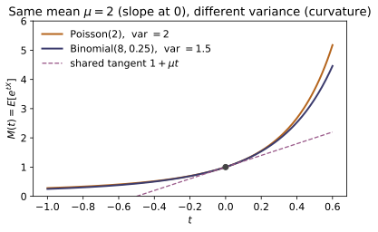
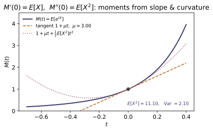
Example problems
From $M(t)=\sum_x e^{tx}p(x)$ show $M(0)=\sum_x p(x)=1$ for any distribution. Then expand $e^{tX}=\sum_k(tX)^k/k!$ inside the expectation to get $M(t)=\sum_k E[X^k]\,t^k/k!$, and conclude $M'(0)=E[X]=\mu$ and, in general, $M^{(k)}(0)=E[X^k]$. Check: mgf(0.0, binomial_dist(10,0.3)) $=1.0$ and mean_from_mgf(binomial_dist(10,0.3)) $\approx 3.0$ ($=np$).
At $t=0$ the exponential collapses, $e^{0\cdot x}=1$, so
for any distribution. Expanding $e^{tX}=\sum_{k\ge0}(tX)^k/k!$ and exchanging the sum with the expectation (valid on the convergence interval),
the exponential generating function of the raw moments. The coefficient of $t^k$ is $E[X^k]/k!$, so differentiating $k$ times at $0$ peels them off: $M^{(k)}(0)=E[X^k]$, in particular $M'(0)=E[X]=\mu$. For $\text{Bin}(10,0.3)$ this gives mgf(0.0, *binomial_dist(10,0.3))$=1.0$ and mean_from_mgf(...)$\approx3.0=np$.
~ST-07For $X\sim\text{Bin}(n,p)$ the mgf is $M(t)=\big((1-p)+pe^t\big)^n$ (a product of $n$ Bernoulli mgfs). Differentiate: $M'(t)=n((1-p)+pe^t)^{n-1}pe^t$ so $M'(0)=np$; compute $M''(0)=n(n-1)p^2+np$ and hence $$\sigma^2=M''(0)-[M'(0)]^2=np-np^2=np(1-p).$$ Check: with d = binomial_dist(10,0.3), mean_from_mgf(d) $\approx 3.0$ and var_from_mgf(d) $\approx 2.1=np(1-p)$ (both agree with mean(d), variance(d)).
Write $u(t)=(1-p)+pe^t$, so $M(t)=u^n$ with $u'(t)=pe^t$ and $u(0)=1$. Then
Differentiating again by the product rule,
Hence $\sigma^2=M''(0)-[M'(0)]^2=n(n-1)p^2+np-(np)^2=np-np^2=np(1-p)$. With $n=10,p=0.3$: mean_from_mgf(d)$\approx3.0$ and var_from_mgf(d)$\approx2.1=np(1-p)$.
For $X\sim\text{Poi}(\lambda)$, $M(t)=e^{\lambda(e^t-1)}$, so the cumulant generator is $K(t)=\ln M(t)=\lambda(e^t-1)$. Show $K^{(k)}(0)=\lambda$ for every $k\ge1$, so mean $=$ variance $=\lambda$ and indeed all cumulants equal $\lambda$. Using $m_k=\sum$(cumulant compositions), derive the third raw moment $E[X^3]=\lambda^3+3\lambda^2+\lambda$. Check: with dp = poisson_dist(2.0), [cumulant_from_mgf(k,dp) for k in (1,2,3)] $\approx[2,2,2]$ and moment_from_mgf(3,dp) $\approx 22.0=2^3+3\cdot2^2+2$.
The cumulant generator is $K(t)=\ln M(t)=\lambda(e^t-1)$. Since $\tfrac{d}{dt}(e^t-1)=e^t$ and every further derivative is again $e^t$,
so mean $=\kappa_1=\lambda$, variance $=\kappa_2=\lambda$, and indeed all cumulants equal $\lambda$. Converting cumulants to the third raw moment via $m_3=\kappa_3+3\kappa_2\kappa_1+\kappa_1^3$,
At $\lambda=2$: [cumulant_from_mgf(k,dp) for k in (1,2,3)]$\approx[2,2,2]$ and moment_from_mgf(3,dp)$\approx22.0=2^3+3\cdot2^2+2$.
~MA-10For independent $X,Y$ prove $M_{X+Y}(t)=M_X(t)M_Y(t)$ by factoring the expectation of $e^{tX}e^{tY}$. Apply it to two independent $\text{Bernoulli}(0.4)$ variables: their sum has mgf $\big(0.6+0.4e^t\big)^2$, the $\text{Bin}(2,0.4)$ mgf. Confirm the distribution of the sum (the convolution $[0.36,0.48,0.16]$ on $\{0,1,2\}$) carries that same mgf. Check: at $t=0.5$, with b = bernoulli_dist(0.4), mgf_of_sum(0.5,[b,b]), binomial_mgf(0.5,2,0.4), and mgf(0.5, *convolve_dists(b,b)) are all $\approx 1.5863113$.
Independence makes $e^{tX}$ and $e^{tY}$ independent, so the expectation of their product factors:
Two independent $\text{Bernoulli}(0.4)$ each have mgf $0.6+0.4e^t$, so the sum carries $\big(0.6+0.4e^t\big)^2$ — the $\text{Bin}(2,0.4)$ mgf. Its actual distribution is the convolution
whose mgf must coincide. At $t=0.5$ all three routes agree: mgf_of_sum(0.5,[b,b]), binomial_mgf(0.5,2,0.4), and mgf(0.5, *convolve_dists(b,b)) are all $\approx1.5863113$.
~ST-08Let $X$ be the trial of the first success, $\text{Geom}(p)$ on $\{1,2,\dots\}$. Sum the geometric series to get $M(t)=\dfrac{pe^t}{1-(1-p)e^t}$ for $t<-\ln(1-p)$. Differentiate at $0$ to obtain $\mu=1/p$ and $\sigma^2=(1-p)/p^2$. Check: with g = geometric_dist(0.25), mean_from_mgf(g) $\approx 4.0=1/p$ and var_from_mgf(g) $\approx 12.0 =(1-0.25)/0.25^2$.
Summing the geometric series in $e^t$ (with $q=1-p$),
At $t=0$ both $pe^t$ and $1-qe^t$ equal $p$, so the quotient rule gives
and a second derivative yields $M''(0)=(2-p)/p^2$, whence $\sigma^2=M''(0)-M'(0)^2=\tfrac{2-p}{p^2}-\tfrac1{p^2}=\tfrac{1-p}{p^2}$. At $p=0.25$: mean_from_mgf(g)$\approx4.0=1/p$ and var_from_mgf(g)$\approx12.0=(1-0.25)/0.25^2$.
Using $M_N(t)=e^{\mu t+\frac12\sigma^2t^2}$, show that for independent $N(\mu_1,\sigma_1^2)$ and $N(\mu_2,\sigma_2^2)$ the product of mgfs is again a normal mgf with mean $\mu_1+\mu_2$ and variance $\sigma_1^2+\sigma_2^2$ — so by uniqueness the sum is normal. Separately verify the rule $M_{aX+b}(t)=e^{bt}M_X(at)$. Check: at $t=0.3$, normal_mgf(0.3,1,2)normal_mgf(0.3,-0.5,1.5) equals normal_mgf(0.3,0.5,math.sqrt(22+1.52)) ($\approx 1.5391803$); and with d = binomial_dist(6,0.5), v,p=d, mgf(0.3, 2v+3, p) equals math.exp(30.3)mgf(0.6,*d) ($\approx 19.41497$).
Multiply the two normal mgfs and collect exponents:
again a normal mgf with mean $\mu_1+\mu_2$ and variance $\sigma_1^2+\sigma_2^2$; by uniqueness the sum is $N(\mu_1+\mu_2,\sigma_1^2+\sigma_2^2)$. The transform rule follows by pulling the constant out of the exponential,
Since $N(1,2^2)+N(-0.5,1.5^2)$ has std $\sqrt{2^2+1.5^2}=2.5$, normal_mgf(0.3,1,2)normal_mgf(0.3,-0.5,1.5)$=$normal_mgf(0.3,0.5,2.5)$\approx1.5391803$; and with $a=2,b=3$, mgf(0.3, 2v+3, p)$=e^{0.9}\cdot$mgf(0.6,*d)$\approx19.41497$.
~MA-10, ~ST-11For $X\sim\text{Exp}(\lambda)$ with $f(x)=\lambda e^{-\lambda x}$ ($x\ge0$), evaluate $M(t)=\int_0^\infty e^{tx}\lambda e^{-\lambda x}dx=\dfrac{\lambda}{\lambda-t}$ for $t<\lambda$, and read off $\mu=M'(0)=1/\lambda$, $\sigma^2=1/\lambda^2$. Note $M(t)=\mathcal{L}\{f\}(-t)$: the mgf is the (two-sided) Laplace transform of the density at $s=-t$ (~MA-10). Check: mgf_continuous(0.5, lambda x:1.5math.exp(-1.5x), 0.0, 80.0) $\approx 1.5=$ exponential_mgf(0.5,1.5); differentiating the closed form gives mean $\approx 0.6667=1/1.5$.
The integrand decays for $t<\lambda$ because $e^{tx}e^{-\lambda x}=e^{-(\lambda-t)x}$:
Differentiating, $M'(t)=\lambda/(\lambda-t)^2$ and $M''(t)=2\lambda/(\lambda-t)^3$, so $\mu=M'(0)=1/\lambda$ and $\sigma^2=M''(0)-\mu^2=2/\lambda^2-1/\lambda^2=1/\lambda^2$. Because
the mgf is the two-sided Laplace transform of the density read at $s=-t$. For $\lambda=1.5,t=0.5$: mgf_continuous(...)$\approx1.5=$exponential_mgf(0.5,1.5), and the closed form gives mean $\approx0.6667=1/1.5$.
~ST-11Show that a sum of $\alpha$ independent $\text{Exp}(\lambda)$ variables has mgf $\big(\lambda/(\lambda-t)\big)^{\alpha}$, the $\text{Gamma}(\alpha,\lambda)$ mgf, so by uniqueness the sum is $\text{Gamma}(\alpha,\lambda)$ (the Erlang law). Hence its mean is $\alpha/\lambda$ and variance $\alpha/\lambda^2$ — $\alpha$ times the exponential's, as additivity demands. Check: gamma_mgf(0.7,4,1.5) equals exponential_mgf(0.7,1.5)**4 ($\approx 12.359619$).
Each $\text{Exp}(\lambda)$ summand has mgf $\lambda/(\lambda-t)$ (P7), and the mgf of an independent sum is the product, so for $\alpha$ identical terms
exactly the $\text{Gamma}(\alpha,\lambda)$ mgf; by uniqueness the sum is $\text{Gamma}(\alpha,\lambda)$ (the Erlang law for integer $\alpha$). Since cumulants add over independent sums, the mean and variance are $\alpha$ times the exponential's,
With $\alpha=4,\lambda=1.5,t=0.7$ this gives gamma_mgf(0.7,4,1.5)$=$ exponential_mgf(0.7,1.5)**4$\approx12.359619$.
Run the worked code: cd ST/ST-06_mgf/code && python3 mgf.py
ST-07 — The Binomial Distribution
Probability Theory trunk · ST/ST-07_binomial · open in the Teaching Network
A Bernoulli($p$) trial has two outcomes, success (prob. $p$) and failure (prob. $q=1-p$), with indicator $X\in\{0,1\}$. Run $n$ of them, independent and identically distributed, and let $X$ count the successes. Because any one arrangement of $k$ successes and $n-k$ failures has probability $p^k q^{n-k}$ and there are $\binom nk$ such arrangements (~ST-02), the binomial pmf is $$P(X=k)=\binom nk p^k(1-p)^{n-k},\qquad k=0,1,\dots,n.$$ The binomial theorem $\sum_k\binom nk p^kq^{n-k}=(p+q)^n=1$ makes it a valid pmf. Writing $X=\sum_{i=1}^n X_i$ as a sum of i.i.d. Bernoulli indicators gives, by linearity and independence, the mean $np$ and variance $np(1-p)$, and makes the mgf factor into $M(t)=(q+pe^t)^n$ — whose derivatives at $0$ return the moments ($M'(0)=np$, $M''(0)-M'(0)^2=np(1-p)$). The same factorization shows that independent binomials with a common $p$ add: $\mathrm{Bin}(n_1,p)+\mathrm{Bin}(n_2,p)=\mathrm{Bin}(n_1+n_2,p)$. The module closes by locating the mode $\lfloor(n+1)p\rfloor$ and by numerically exhibiting the two limits the binomial seeds: $\mathrm{Bin}(n,\lambda/n)\to \mathrm{Poisson}(\lambda)$ (~ST-09) and the de Moivre–Laplace $P(X=k)\approx\frac{1}{\sqrt{2\pi npq}}e^{-(k-np)^2/2npq}$ (~ST-18).
Key equations
Figures
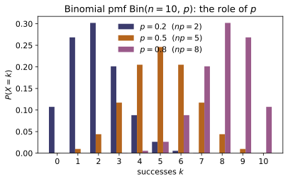
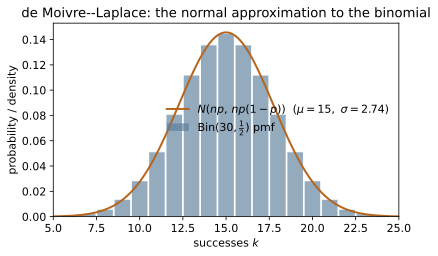
Example problems
For a single Bernoulli($p$) trial with indicator $X\in\{0,1\}$, derive $E[X]=p$ and $\mathrm{Var}(X)=p(1-p)$ directly from the ~ST-05 definitions, and show the variance is maximized at $p=\tfrac12$ (differentiate $p(1-p)$) and vanishes at $p=0,1$. Explain in one sentence why a fair coin is the "most uncertain" trial. Check: bernoulli_var(0.5) $=0.25$ (the maximum); bernoulli_var(0.3) $=0.21<0.25$; and bernoulli_mean(p) == binom_mean(1, p), bernoulli_var(p) == binom_var(1, p) for any $p$ (the $n=1$ binomial).
With $P(X=1)=p$, $P(X=0)=1-p$ and $X^2=X$,
Setting $\tfrac{d}{dp}\big[p(1-p)\big]=1-2p=0$ locates the unique maximum at $p=\tfrac12$, where $\operatorname{Var}=\tfrac14$; the variance vanishes at $p=0,1$ (a sure outcome cannot fluctuate). A fair coin is the "most uncertain" trial because equal $\tfrac12$–$\tfrac12$ odds give the widest spread of a single $\{0,1\}$ outcome. Thus bernoulli_var(0.5)$=0.25$ exceeds bernoulli_var(0.3)$=0.21$, and since these are the $n=1$ binomial, bernoulli_mean(p) == binom_mean(1, p) and bernoulli_var(p) == binom_var(1, p).
~ST-02A biased coin lands heads with $p=0.3$; flip it $n=5$ times. Using $P(X=k)=\binom nk p^kq^{n-k}$, compute $P(X=2)$ by hand: there are $\binom52=10$ arrangements, each of probability $0.3^2\,0.7^3$. Then write $P(X\le2)$ as a sum of three terms. Confirm $\sum_{k=0}^5 P(X=k)=1$ is the binomial theorem $(0.3+0.7)^5$. Check: binom_pmf(2, 5, 0.3) $=0.3087$; binom_cdf(2, 5, 0.3) $=0.83692$; sum(binom_pmf(k, 5, 0.3) for k in range(6)) $=1.0$.
There are $\binom52=\tfrac{5!}{2!\,3!}=10$ ways to place the $2$ heads among $5$ flips, each sequence carrying $0.3^2\,0.7^3$, so
Summing the first three terms gives the cdf,
Over all $k$ the pmf sums to $(0.7+0.3)^5=1$ by the binomial theorem — normalization is that identity. These are binom_pmf(2, 5, 0.3)$=0.3087$, binom_cdf(2, 5, 0.3)$=0.83692$, and sum(binom_pmf(k, 5, 0.3) for k in range(6))$=1.0$.
Write $X=\sum_{i=1}^{12}X_i$ as a sum of $n=12$ independent Bernoulli($p=0.25$) indicators. Use linearity of expectation to get $E[X]=np$ and independence (variances add) to get $\mathrm{Var}(X)=np(1-p)$, without summing $k\,P(X=k)$. Then verify the answers equal the definitional sums. Check: binom_mean(12, 0.25) $=3.0$, binom_var(12, 0.25) $=2.25$, binom_std(12, 0.25) $=1.5$; and the brute sums sum(kbinom_pmf(k,12,0.25) for k in range(13)) $=3.0$, sum((k-3)**2binom_pmf(k,12,0.25) for k in range(13)) $=2.25$.
Decompose $X=\sum_{i=1}^{12}X_i$ into independent $\text{Bernoulli}(0.25)$ indicators. Linearity of expectation (no independence needed) adds $12$ copies of $p$:
Because the $X_i$ are independent, their variances also add, each contributing $p(1-p)$:
These match the brute definitional sums $\sum_k k\,P(k)=3.0$ and $\sum_k(k-3)^2P(k)=2.25$, i.e. binom_mean(12, 0.25)$=3.0$, binom_var(12, 0.25)$=2.25$, binom_std(12, 0.25)$=1.5$.
~ST-06For $X\sim\mathrm{Bin}(6,\tfrac12)$ the mgf is $M(t)=(\tfrac12+\tfrac12e^t)^6$. Show $M(0)=1$; differentiate to get $M'(0)=np=3$; and from $M''(0)=E[X^2]=np(1-p)+(np)^2$ recover $\mathrm{Var}(X)=M''(0)-M'(0)^2=np(1-p)=1.5$. Check: with M = lambda t: binom_mgf(t, 6, 0.5), _deriv1(M, 0.0) $=3.0$, _deriv2(M, 0.0) $=10.5=E[X^2]$, and _deriv2(M,0.0) - _deriv1(M,0.0)**2 $=1.5=$ binom_var(6, 0.5).
With $p=q=\tfrac12$ and $n=6$, $M(t)=\big(\tfrac12+\tfrac12e^t\big)^6$, so $M(0)=1^6=1$. Differentiating the power,
The second derivative at $0$ gives $M''(0)=np(1-p)+(np)^2=1.5+9=10.5=E[X^2]$, hence
Numerically _deriv1(M, 0.0)$=3.0$, _deriv2(M, 0.0)$=10.5=E[X^2]$, and _deriv2(M,0.0) - _deriv1(M,0.0)**2$=1.5=$binom_var(6, 0.5).
Let $X_1\sim\mathrm{Bin}(3,0.4)$ and $X_2\sim\mathrm{Bin}(4,0.4)$ be independent. Using the mgf product $(q+pe^t)^3(q+pe^t)^4=(q+pe^t)^7$, argue $X_1+X_2\sim \mathrm{Bin}(7,0.4)$, and confirm the pmf-level statement is Vandermonde's identity $\sum_j\binom3j\binom4{5-j}=\binom75$. Why does the argument fail if $p_1\ne p_2$? Check: sum_two_binomials_pmf(5, 3, 4, 0.4) $=0.0774144=$ binom_pmf(5, 7, 0.4); and the means/variances add: binom_mean(3,0.4)+binom_mean(4,0.4) == binom_mean(7,0.4).
Each binomial mgf is the Bernoulli factor raised to its $n$, so a common $p$ lets the product just add exponents:
the $\text{Bin}(7,0.4)$ mgf; uniqueness gives $X_1+X_2\sim\text{Bin}(7,0.4)$. Equating the $k=5$ coefficients is Vandermonde's identity
the count of ways to split $5$ successes between the two blocks. The argument fails if $p_1\ne p_2$, since then $(q_1+p_1e^t)^3(q_2+p_2e^t)^4$ shares no common base and is not a single binomial mgf. Hence sum_two_binomials_pmf(5, 3, 4, 0.4)$=0.0774144=$ binom_pmf(5, 7, 0.4), and the means/variances add.
Using the successive-ratio test $\dfrac{P(X=k)}{P(X=k-1)}=\dfrac{n-k+1}{k}\dfrac pq$, show the pmf rises while $k<(n+1)p$ and find the mode $\lfloor(n+1)p\rfloor$. (a) For $\mathrm{Bin}(10,0.35)$ compute the mode. (b) For $\mathrm{Bin}(9,\tfrac12)$ note $(n+1)p=5$ is an integer, so $k=4$ and $k=5$ are both modes — verify their pmfs are equal. Check: binom_mode(10, 0.35) $=3$; binom_mode(9, 0.5) $=5$ with binom_pmf(4, 9, 0.5) == binom_pmf(5, 9, 0.5) $=0.246094$ (the tie).
The successive-ratio test compares neighbours,
which exceeds $1$ — the pmf still rising — precisely while $(n-k+1)p>kq$, i.e. $k<(n+1)p$, and drops below $1$ afterwards, so the peak is $k^\star=\lfloor(n+1)p\rfloor$. (a) For $\text{Bin}(10,0.35)$, $(n+1)p=11(0.35)=3.85$, giving mode $\lfloor3.85\rfloor=3$. (b) For $\text{Bin}(9,\tfrac12)$, $(n+1)p=10(\tfrac12)=5$ is an integer, so the ratio equals $1$ at $k=5$ and $k=4,5$ tie:
Thus binom_mode(10, 0.35)$=3$ and binom_mode(9, 0.5)$=5$ (the larger of the tie), with binom_pmf(4, 9, 0.5) == binom_pmf(5, 9, 0.5)$=0.246094$.
~ST-09Take $n\to\infty$ with $p=\lambda/n$ fixed at mean $\lambda=2.5$. Using $\big(1-\tfrac\lambda n\big)^n\to e^{-\lambda}$ and $\tfrac{n!}{(n-k)!\,n^k}\to1$, show $\binom nk p^kq^{n-k}\to \dfrac{\lambda^k e^{-\lambda}}{k!}$. Evaluate the $k=3$ term for $n=2500$ and compare to $\mathrm{Poisson}(2.5)$. Check: binom_pmf(3, 2500, 0.001) $=0.213881$ vs _poisson_pmf(3, 2.5) $=0.213763$ (difference $\sim10^{-4}$, shrinking like $1/n$).
Substitute $p=\lambda/n$ into the pmf and group the $n$-dependence,
The first factor $\to1$ (a ratio of $k$ terms each $\to1$), the last $\to1$, and $(1-\lambda/n)^n\to e^{-\lambda}$, leaving the Poisson law $\lambda^k e^{-\lambda}/k!$. At $\lambda=2.5,k=3,n=2500$ ($p=0.001$) the binomial term is binom_pmf(3, 2500, 0.001) $=0.213881$ versus _poisson_pmf(3, 2.5)$=0.213763$ — a gap of $\sim10^{-4}$ that shrinks like $1/n$.
~ST-18For $\mathrm{Bin}(100,\tfrac12)$ (so $np=50$, $npq=25$, $\sigma=5$), use the de Moivre–Laplace formula $P(X=k)\approx\frac{1}{\sqrt{2\pi npq}}e^{-(k-np)^2/2npq}$ to estimate $P(X=50)$ and compare to the exact binomial value. State the continuity correction you would use to approximate $P(48\le X\le 52)$. Check: binom_pmf(50, 100, 0.5) $=0.079589$ vs _normal_pdf(50, 50.0, 5.0) $=0.079788$ (agreement to $\sim10^{-3}$ at the peak).
With $np=50$, $npq=25$, $\sigma=\sqrt{25}=5$, the de Moivre–Laplace formula at the peak $k=50$ has zero exponent:
against the exact $0.079589$ (agreeing to $\sim10^{-3}$). For the interval one spreads each integer over a unit bin — the continuity correction — replacing $P(48\le X\le52)$ by the normal area from $47.5$ to $52.5$:
The peak check is binom_pmf(50, 100, 0.5)$=0.079589$ versus _normal_pdf(50, 50.0, 5.0) $=0.079788$.
Run the worked code: cd ST/ST-07_binomial/code && python3 binomial.py
ST-08 — Geometric & Negative Binomial Distributions
Probability Theory trunk · ST/ST-08_geometric_negbinomial · open in the Teaching Network
A sequence of independent Bernoulli$(p)$ trials. The geometric random variable $X$ is the number of trials up to and including the first success, with pmf $f(x)=(1-p)^{x-1}p$ on $x=1,2,3,\dots$ (the geometric series guarantees $\sum f=1$). Its mean is $E[X]=1/p$ and variance $\operatorname{Var}(X)=(1-p)/p^2$, and its survival function is the clean $P(X>x)=(1-p)^x$, which gives the memoryless property $P(X>m+n\mid X>m)=P(X>n)$ — the geometric is the unique discrete distribution with no memory of past failures. The negative binomial random variable counts the trials to the $r$-th success, pmf $f(x)=\binom{x-1}{r-1}(1-p)^{x-r}p^r$ on $x=r,r+1,\dots$, with mean $r/p$ and variance $r(1-p)/p^2$. Two structural facts tie them together: the geometric is exactly the negative binomial with $r=1$, and a sum of $r$ i.i.d. geometrics is negative binomial$(r,p)$ — its mgf is the geometric mgf raised to the $r$. The module closes on the continuous limit: as $p\to0$ the geometric becomes the exponential ($\sim$~ST-11), the only memoryless continuous law.
Key equations
Figures
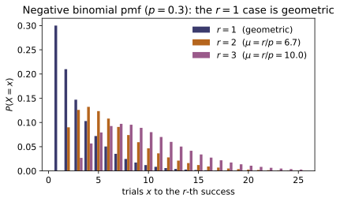
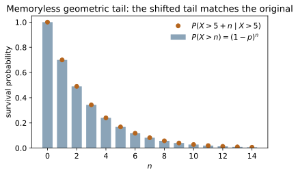
Example problems
For independent Bernoulli$(p)$ trials, argue $P(X=x)=(1-p)^{x-1}p$ ("$x-1$ failures, then a success") and verify $\sum_{x\ge1}f(x)=1$ using the geometric series $\sum_{k\ge0}q^k=1/(1-q)$. With $p=0.3$ evaluate $f(1)$ and $f(3)=q^2p$, and note that $f$ is strictly decreasing, so the mode is always $x=1$. Check: geometric_pmf(1, 0.3) $=0.3$; geometric_pmf(3, 0.3) $=0.147$ ($=0.7^2\cdot0.3$); sum(geometric_pmf(x,0.3) for x in range(1,2000)) $\approx1$.
The event $\{X=x\}$ is "$x-1$ failures (each prob. $q=1-p$) then a success," so by independence $f(x)=q^{x-1}p$ on $x=1,2,\dots$ It normalizes by the geometric series:
At $p=0.3$: $f(1)=p=0.3$ and $f(3)=q^2p=0.7^2(0.3)=0.147$. Since $f(x+1)/f(x)=q<1$, the pmf strictly decreases, so the single most likely wait is always $x=1$ — the mode. These give geometric_pmf(1, 0.3)$=0.3$, geometric_pmf(3, 0.3)$=0.147$, and the truncated sum $\approx1$.
Sum the pmf to get $P(X\le x)=1-q^{x}$, hence the survival $P(X>x)=q^{x}=(1-p)^{x}$ — interpret the latter directly as "the first $x$ trials all fail." For $p=0.2$ compute $P(X>5)$ and $P(X\le 5)$, and confirm $P(X\le 5)+P(X>5)=1$. Check: geometric_sf(5, 0.2) $=0.32768$ ($=0.8^5$); geometric_cdf(5, 0.2) $=0.67232$; their sum $=1.0$; geometric_cdf(10, 0.2) $=0.8926258176$.
Summing the pmf is a finite geometric series,
so the survival is $P(X>x)=q^{x}=(1-p)^{x}$, reading directly as "the first $x$ trials all fail." At $p=0.2$ ($q=0.8$),
which sum to $1$ by construction. These are geometric_sf(5, 0.2)$=0.32768$, geometric_cdf(5, 0.2)$=0.67232$ (sum $=1.0$), and geometric_cdf(10, 0.2)$=1-0.8^{10}=0.8926258176$.
~ST-06Differentiate $\sum_{x\ge1}q^{x}=q/(1-q)$ to get $\sum x q^{x-1}=1/p^2$, hence $E[X]=1/p$; use the second factorial moment $\sum x(x-1)q^{x-2}=2/p^3$ to get $\operatorname{Var}(X)=q/p^2=(1-p)/p^2$. Evaluate both at $p=0.25$ and note the mean is the reciprocal of the success probability. Check: geometric_mean(0.25) $=4.0$; geometric_var(0.25) $=12.0$ ($=0.75/0.0625$).
Differentiate $\sum_{x\ge0}q^{x}=1/(1-q)$ once to pull down a factor of $x$:
Differentiating again gives $\sum_{x\ge2}x(x-1)q^{x-2}=2/p^3$, so $E[X(X-1)]=pq\cdot2/p^3=2q/p^2$ and
At $p=0.25$ the mean is the reciprocal $1/p=4$; thus geometric_mean(0.25)$=4.0$ and geometric_var(0.25)$=0.75/0.0625=12.0$.
Using the survival form of P2, prove $P(X>m+n\mid X>m)=q^{m+n}/q^{m}=q^{n}=P(X>n)$: a coin that has already shown $m$ tails is, going forward, as fresh as a new coin. Take $p=0.2$, $m=10$, $n=4$ and show both sides equal $0.8^4$. Check: memoryless_check(10, 4, 0.2) $=(0.4096,\,0.4096)$ (equal); both equal $0.8^4=0.4096$.
Use the survival form of P2; since $\{X>m+n\}\subset\{X>m\}$,
The $q^{m}$ for the wasted first $m$ trials cancels: a coin that has already shown $m$ tails is, going forward, as fresh as a new one. With $p=0.2,m=10,n=4$ both sides equal
which is memoryless_check(10, 4, 0.2)$=(0.4096,\,0.4096)$ — the two entries equal, each $0.8^4$.
~ST-06Sum the geometric series in $e^t$ to get $M(t)=pe^t/(1-qe^t)$ for $t<-\ln q$, and show $M(0)=1$ and $M'(0)=1/p=E[X]$. Evaluate $M(0.1)$ at $p=0.4$ and confirm the numerical derivative at $0$ reproduces the mean $2.5$. Check: geometric_mgf(0.0, 0.4) $=1.0$; geometric_mgf(0.1, 0.4) $\approx1.31217$; (geometric_mgf(1e-6,0.4)-geometric_mgf(-1e-6,0.4))/2e-6 $\approx2.5=$ geometric_mean(0.4).
Summing the geometric series in $e^t$ (with $q=1-p$),
so $M(0)=p/(1-q)=p/p=1$. By the quotient rule at $t=0$ (numerator and denominator both equal $p$ there),
At $p=0.4$, $1/p=2.5$, so geometric_mgf(0.0, 0.4)$=1.0$, geometric_mgf(0.1, 0.4) $\approx1.31217$, and (geometric_mgf(1e-6,0.4)-geometric_mgf(-1e-6,0.4))/2e-6$\approx2.5=$ geometric_mean(0.4).
~ST-02For the trial of the $r$-th success, argue $f(x)=\binom{x-1}{r-1}(1-p)^{x-r}p^{r}$ (the $x$-th trial succeeds; $r-1$ of the first $x-1$ succeed). With $r=3$, $p=0.25$ evaluate $f(3)$ (the fastest possible: SSS) and $f(5)=\binom{4}{2}q^{2}p^{3}$. Check: negbinom_pmf(3, 3, 0.25) $=0.015625$ ($=0.25^3$); negbinom_pmf(5, 3, 0.25) $\approx0.052734$ ($=6\cdot0.75^2\cdot0.25^3$).
For the $r$-th success at trial $x$, the final trial succeeds ($p$) and exactly $r-1$ of the first $x-1$ trials succeed (a binomial pattern $\binom{x-1}{r-1}p^{r-1}q^{x-r}$), so
With $r=3,p=0.25$ the fastest case is $x=3$ (the run SSS), $f(3)=\binom22(0.25)^3=0.015625$. For $x=5$ there are $\binom42=6$ ways to place the $2$ early successes among the first $4$ trials:
These are negbinom_pmf(3, 3, 0.25)$=0.015625$ and negbinom_pmf(5, 3, 0.25)$\approx0.052734$.
Write $X=G_1+\cdots+G_r$ with $G_i$ i.i.d. geometric$(p)$ (the process restarts after each success). Because means and variances of independent sums add, deduce $E[X]=r/p$ and $\operatorname{Var}(X)=r(1-p)/p^2$. Verify at $r=4$, $p=0.5$ that these equal $r$ times the geometric values. Check: negbinom_mean(4, 0.5) $=8.0=4\cdot$geometric_mean(0.5); negbinom_var(4, 0.5) $=8.0=4\cdot$geometric_var(0.5).
After each success the memoryless process restarts, so the trial of the $r$-th success splits into $r$ i.i.d. geometric waits, $X=G_1+\cdots+G_r$. Means add unconditionally and variances add by independence:
At $r=4,p=0.5$ the geometric pieces are $E[G]=1/p=2$ and $\operatorname{Var}(G)=(1-p)/p^2=2$, so $E[X]=4(2)=8$ and $\operatorname{Var}(X)=4(2)=8$. These are negbinom_mean(4, 0.5) $=8.0=4\cdot$geometric_mean(0.5) and negbinom_var(4, 0.5)$=8.0=4\cdot$geometric_var(0.5).
Show $\binom{x-1}{0}q^{x-1}p=q^{x-1}p$, so the negative binomial with $r=1$ is the geometric. Then, since the mgf of a sum is the product of mgfs, show $M_{\text{NB}}(t)=\big(pe^t/(1-qe^t)\big)^r$ equals the geometric mgf raised to $r$. Verify both with $p=0.3$. Check: negbinom_pmf(4, 1, 0.3) $=0.1029=$ geometric_pmf(4, 0.3); negbinom_mgf(0.1, 2, 0.3) $\approx2.144983=$ geometric_mgf(0.1, 0.3)**2.
Setting $r=1$ collapses the binomial coefficient, $\binom{x-1}{0}=1$, so the negative-binomial pmf reduces termwise to the geometric:
Because the negative binomial is a sum of $r$ i.i.d. geometrics (P7), its mgf is the geometric mgf raised to the $r$,
At $p=0.3$: negbinom_pmf(4, 1, 0.3)$=0.7^3(0.3)=0.1029=$geometric_pmf(4, 0.3), and negbinom_mgf(0.1, 2, 0.3)$\approx2.144983=$geometric_mgf(0.1, 0.3)**2.
Run the worked code: cd ST/ST-08_geometric_negbinomial/code && python3 geometric_negbinomial.py
ST-09 — The Poisson Distribution
Probability Theory trunk · ST/ST-09_poisson · open in the Teaching Network
A Poisson random variable $X\sim\mathrm{Poisson}(\lambda)$ has pmf $$P(X=k)=\frac{e^{-\lambda}\lambda^{k}}{k!},\qquad k=0,1,2,\dots,\ \ \lambda>0.$$ The series $\sum_k \lambda^k/k!=e^{\lambda}$ makes it sum to one. Its single parameter is simultaneously the mean and the variance, $E[X]=\mathrm{Var}(X)=\lambda$ — the Poisson signature, and the source of the photon-shot-noise rule $\sigma_n=\sqrt{\langle n\rangle}$ in ~QO-01. The moment-generating function $M(t)=\exp\!\big(\lambda(e^{t}-1)\big)$ delivers every moment by differentiation (~ST-06) and, through the uniqueness theorem, two structural facts in one stroke: the law of rare events — the binomial $\mathrm{Bin}(n,p)$ with $np=\lambda$ held fixed converges to $\mathrm{Poisson}(\lambda)$ as $n\to\infty$ (~ST-07) — and the reproductive property — a sum of independent Poissons is Poisson, $\sum_i X_i\sim\mathrm{Poisson}(\sum_i\lambda_i)$. The same $\lambda$ counts events of a Poisson process over an interval of length $t$ (rate $\lambda=\nu t$); its waiting times are exponential/gamma (~ST-11), a link the code checks numerically via the $P(X\le k-1)=\int_\lambda^\infty t^{k-1}e^{-t}/(k-1)!\,dt$ identity.
Key equations
Figures
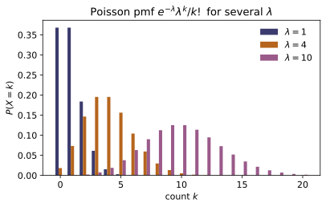
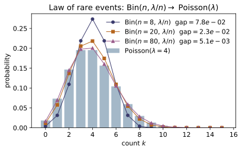
Example problems
A call center receives an average of $\lambda=3$ calls per minute, the calls independent. Write the pmf of the number $X$ of calls in a one-minute window and evaluate $P(X=0),P(X=1),P(X=2),P(X=3)$ by hand. Verify the recurrence $P(X{=}k{+}1)=\frac{\lambda}{k+1}P(X{=}k)$ links your four numbers, and note why $P(X{=}2)=P(X{=}3)$ here (the ratio $\lambda/(k+1)=3/3=1$ at $k=2$). Check: poisson_pmf(0,3.0)$=0.049787$, poisson_pmf(1,3.0)$=0.149361$, poisson_pmf(2,3.0)$=0.224042$, poisson_pmf(3,3.0)$=0.224042$ (equal, as argued).
With $\lambda=3$ the pmf is $P(X=k)=e^{-3}3^{k}/k!$, so the first three values are
Each term is the previous one times $\lambda/(k+1)$, the recurrence $P(k{+}1)=\tfrac{\lambda}{k+1}P(k)$: $P(1)=\tfrac31 P(0)$ and $P(2)=\tfrac32 P(1)$. At $k=2$ the multiplier is exactly one,
so the pmf is flat across its twin modes $k=2,3$. These reproduce poisson_pmf(0..3, 3.0) $=0.049787,0.149361,0.224042,0.224042$ with $P(X{=}2)=P(X{=}3)$, as in the Check.
Flaws occur in an optical fiber at rate $\lambda=1.5$ per km. Find the probability that a 1-km length has at least one flaw. Use the complement $P(X\ge1)=1-P(X=0)=1-e^{-\lambda}$ rather than summing the whole tail — the single most common Poisson manoeuvre. Check: poisson_pmf(0,1.5)$=0.223130$ so $P(X\ge1)=1-0.223130=0.776870$ $=$ 1 - poisson_pmf(0,1.5).
"At least one" is the complement of "none," and the empty count has the clean closed form $P(X=0)=e^{-\lambda}$. With $\lambda=1.5$,
Summing the whole tail $P(1)+P(2)+\cdots$ would give the same number, but the one-term complement is the standard Poisson manoeuvre. This is 1 - poisson_pmf(0,1.5) $=0.776870$, matching the Check.
Particles strike a detector at $\lambda=4$ per second. Find $P(X\le2)$ and $P(X\ge3)$ for a one-second count. Sum $P(0)+P(1)+P(2)$ for the first; use $P(X\ge3)=1-P(X\le2)$ for the second. Check: poisson_cdf(2,4.0)$=0.238103$ and 1 - poisson_cdf(2,4.0)$=0.761897$.
Add the first three terms with $\lambda=4$, factoring out $e^{-4}=0.018316$:
The upper tail is then the complement, which avoids an infinite sum,
These are exactly poisson_cdf(2,4.0) $=0.238103$ and 1 - poisson_cdf(2,4.0) $=0.761897$ of the Check.
~ST-06Starting from $M(t)=\exp\!\big(\lambda(e^{t}-1)\big)$, show $M'(t)=\lambda e^{t}M(t)$, hence $E[X]=M'(0)=\lambda$, and $M''(0)=\lambda+\lambda^{2}$, hence $\mathrm{Var}(X)=M''(0)-M'(0)^{2}=\lambda$. Confirm the universal fact $M(0)=1$. Take $\lambda=5$. Check: poisson_mgf(0.0,5.0)$=1.0$; the central-difference derivatives of poisson_mgf give $M'(0)=5.0=$poisson_mean(5.0) and $M''(0)-M'(0)^2=5.0=$poisson_var(5.0) (see test_mgf_value_and_moment_derivatives).
Setting $t=0$ in $M(t)=\exp(\lambda(e^{t}-1))$ gives the universal $M(0)=e^{0}=1$. Differentiating with the chain rule on the inner $\lambda(e^t-1)$,
A second derivative gives $M''(t)=(\lambda e^{t}+\lambda^{2}e^{2t})M(t)$, so $M''(0)=\lambda+\lambda^{2}=E[X^2]$ and
Thus poisson_mgf(0.0,5.0) $=1.0$, and the central differences give $M'(0)=5.0=$poisson_mean(5.0) and $M''(0)-M'(0)^2=5.0=$poisson_var(5.0), as in the Check.
~ST-07A page has $n=100$ characters, each mistyped independently with probability $p=0.02$. The number of typos is $\mathrm{Bin}(100,0.02)$; approximate it by $\mathrm{Poisson}(\lambda)$ with $\lambda=np=2$ and compare $P(X=3)$ exactly and approximately. Explain why the approximation is good (large $n$, small $p$, moderate $\lambda$). Check: binomial_pmf(3,100,0.02)$=0.182276$ vs poisson_pmf(3,2.0)$=0.180447$; the worst-case gap poisson_limit_of_binomial(100,0.02)$=2.743\times10^{-3}$, and it shrinks $\approx10\times$ each time $n$ grows $10\times$ at fixed $\lambda$.
Exactly, the typo count is binomial:
With $\lambda=np=2$ held fixed, the law of rare events replaces it by the Poisson term
The two agree to $\sim10^{-3}$ because $n=100$ is large, $p=0.02$ is small, and $\lambda=2$ is moderate; the Le Cam error is $\lesssim np^{2}=\lambda p=0.04$. So binomial_pmf(3,100,0.02) $=0.182276$ vs poisson_pmf(3,2.0) $=0.180447$, with worst-case gap poisson_limit_of_binomial(100,0.02) $=2.743\times10^{-3}$ shrinking $\approx10\times$ per decade in $n$, as in the Check.
Red cars pass at $\lambda_1=3$ per minute and blue cars at $\lambda_2=4$ per minute, independently. Show via the mgf that the total $X_1+X_2$ is $\mathrm{Poisson}(\lambda_1+\lambda_2)=\mathrm{Poisson}(7)$, and find the probability of exactly $4$ cars in a minute. Confirm the pmf-level convolution $\sum_{j=0}^{4}P(X_1{=}j)P(X_2{=}4{-}j)$ gives the same value (binomial theorem). Check: sum_of_poissons([3.0,4.0])$=7.0$; poisson_convolution_pmf(4,3.0,4.0)$=0.091226=$poisson_pmf(4,7.0).
Independence multiplies mgfs, and the Poisson mgf simply adds its $\lambda$ in the exponent:
the mgf of $\mathrm{Poisson}(7)$; by uniqueness $X_1+X_2\sim\mathrm{Poisson}(7)$. Hence
At the pmf level the convolution $\sum_{j=0}^{4}P(X_1{=}j)P(X_2{=}4{-}j)$ collapses to the same value, since the binomial theorem gives $\sum_{j}\binom{4}{j}3^{j}4^{4-j}=7^{4}$. So sum_of_poissons([3.0,4.0]) $=7.0$ and poisson_convolution_pmf(4,3.0,4.0) $=0.091226=$poisson_pmf(4,7.0), as in the Check.
For $\lambda=9$ give $\sigma$, the skewness $1/\sqrt{\lambda}$ and the excess kurtosis $1/\lambda$. Comment on why both shape measures $\to0$ as $\lambda$ grows and what that says about a normal approximation (~ST-18). Check: poisson_var(9)$=9.0$, poisson_std(9)$=3.0$, poisson_skewness(9)$=0.3333$, poisson_excess_kurtosis(9)$=0.1111$; both shape numbers vanish like $\lambda^{-1/2}$ and $\lambda^{-1}$.
Variance equals the mean, so $\sigma=\sqrt{\lambda}=\sqrt9=3$, and the standardized shape numbers are
Both are positive — a Poisson is always right-skewed and leptokurtic — but both vanish as $\lambda\to\infty$, like $\lambda^{-1/2}$ and $\lambda^{-1}$. A large-$\lambda$ Poisson is therefore nearly symmetric and bell-shaped, the content of the normal approximation $(X-\lambda)/\sqrt\lambda\to N(0,1)$ (~ST-18). These are poisson_var(9) $=9.0$, poisson_std(9) $=3.0$, poisson_skewness(9) $=0.3333$, and poisson_excess_kurtosis(9) $=0.1111$, as in the Check.
~ST-11For a unit-rate process, "fewer than $k$ events by time $\lambda$" equals "the $k$-th arrival is after $\lambda$." Use this to argue the identity $$\sum_{j=0}^{k-1}\frac{e^{-\lambda}\lambda^{j}}{j!} =\int_{\lambda}^{\infty}\frac{t^{\,k-1}e^{-t}}{(k-1)!}\,\mathrm{d}t,$$ the survival function of a $\mathrm{Gamma}(k,1)$ arrival time. Verify it numerically for $\lambda=3,k=4$ (left side $=P(X\le3)$). Check: poisson_cdf(3,3.0)$=0.647232$ equals the midpoint integral $\int_{3}^{\infty}t^{3}e^{-t}/6\,\mathrm{d}t$ to $\sim10^{-4}$ (the continuous _integrate test test_poisson_process_gamma_integral).
For a unit-rate process the two events coincide: "fewer than $k$ arrivals by time $\lambda$" is the same event as "the $k$-th arrival $T_k$ falls after $\lambda$," and $T_k\sim\mathrm{Gamma}(k,1)$. Equating the two probabilities,
the $\mathrm{Gamma}(k,1)$ survival function. (Integrating the right side by parts $k$ times peels off one Poisson term at a time — an inductive proof.) For $\lambda=3,k=4$ the left side is $P(X\le3)=$ poisson_cdf(3,3.0) $=0.647232$, which the midpoint integral $\int_3^\infty t^{3}e^{-t}/6\,\mathrm{d}t$ reproduces to $\sim10^{-4}$, as in the Check.
Run the worked code: cd ST/ST-09_poisson/code && python3 poisson.py
ST-10 — Continuous Random Variables
Probability Theory trunk · ST/ST-10_continuous_rv · open in the Teaching Network
A continuous random variable $X$ has a probability density function (pdf) $f(x)\ge0$ with $\int_{-\infty}^{\infty}f=1$. Its cumulative distribution function (cdf) is $F(x)=P(X\le x)=\int_{-\infty}^{x}f$, so by the fundamental theorem of calculus $f=F'$. Because probability is area, a single point has $P(X=x)=0$, and intervals obey $P(a<X<b)=F(b)-F(a)=\int_a^b f$ (open vs. closed endpoints do not matter). Expectation and variance are integrals, $E[X]=\int x f$, $\operatorname{Var}[X]=E[X^2]-(E[X])^2$, the continuous echo of the sums in ~ST-05. Percentiles / quantiles invert the cdf, $F(\pi_p)=p$ (the code does this by bisection). The headline example is the continuous uniform $U(a,b)$: $f=\tfrac1{b-a}$, $F=\tfrac{x-a}{b-a}$, mean $\tfrac{a+b}2$, variance $\tfrac{(b-a)^2}{12}$. The module closes with the discrete→continuous bridge: a point mass is the $\varepsilon\to0$ limit of a narrow box density, i.e. a Dirac delta $\delta(x-c)$ (~MA-15), with mean $\to c$ and variance $\to0$.
Key equations
Figures
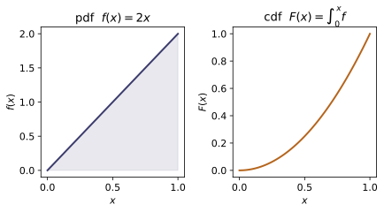
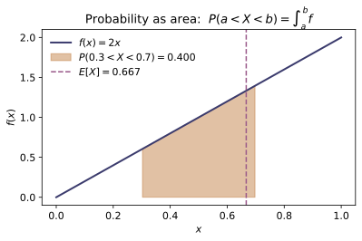
Example problems
Let $f(x)=c\,x^2$ on $[0,3]$ (and $0$ elsewhere). Use $\int_0^3 f=1$ to find $c$, then compute $E[X]$ and $\operatorname{Var}[X]$. Solution: $\int_0^3 c x^2\,dx=c\cdot\tfrac{27}{3}=9c=1\Rightarrow c=\tfrac19$. Then $E[X]=\tfrac19\int_0^3 x^3\,dx=\tfrac19\cdot\tfrac{81}{4}=\tfrac94=2.25$, and $E[X^2]=\tfrac19\int_0^3 x^4\,dx=\tfrac19\cdot\tfrac{243}{5}=\tfrac{27}{5}=5.4$, so $\operatorname{Var}[X]=5.4-2.25^2=0.3375$. Check: with f = lambda x: x*x/9, pdf_is_normalized(f, 0, 3) $=$ True; expectation_continuous(f, 0, 3) $=2.25$; variance_continuous(f, 0, 3) $=0.3375$.
Normalization fixes $c$: $\int_0^3 cx^2\,dx=c\,[x^3/3]_0^3=9c=1$, so $c=\tfrac19$. The moments are then power-rule integrals,
and the shortcut gives $\operatorname{Var}[X]=E[X^2]-(E[X])^2=5.4-2.25^2=0.3375$. These match pdf_is_normalized(f, 0, 3) $=$ True, expectation_continuous(f, 0, 3) $=2.25$, and variance_continuous(f, 0, 3) $=0.3375$ of the Check.
For the uniform $U(2,8)$ ($f=\tfrac16$ on $[2,8]$), find $F(5)$ and $P(3<X<5)$ two ways: as $\int f$ and as a difference of the cdf. Solution: $F(5)=\int_2^5\tfrac16\,dx=\tfrac{5-2}{6}=\tfrac12$; and $P(3<X<5)=F(5)-F(3)=\tfrac12-\tfrac16=\tfrac13$. Check: with U = lambda x: uniform_pdf(x,2,8), cdf_from_pdf(U, 5, 2) $=0.5$ and prob_between(U, 3, 5) $=0.3333\ldots=$ uniform_cdf(5,2,8)-uniform_cdf(3,2,8).
On $U(2,8)$ the density is the constant $\tfrac1{b-a}=\tfrac16$, so the cdf is the accumulated area $F(x)=\tfrac{x-2}{6}$:
The interval probability is that same area, read either directly or as a difference of the cdf,
Hence cdf_from_pdf(U, 5, 2) $=0.5$ and prob_between(U, 3, 5) $=0.3333\ldots=$ uniform_cdf(5,2,8)-uniform_cdf(3,2,8), as in the Check.
For the triangular density $f(x)=2x$ on $[0,1]$ (cdf $F(x)=x^2$), show $P(X=\tfrac12)=0$ and that the endpoints are irrelevant, then evaluate $P(0.3<X<0.7)$. Solution: $P(X=\tfrac12)=F(\tfrac12)-F(\tfrac12)=0$, so $P(0.3<X<0.7)=P(0.3\le X\le 0.7)=F(0.7)-F(0.3)=0.49-0.09=0.40$. Check: with g = lambda x: 2*x, prob_between(g, 0.5, 0.5) $=0.0$ and prob_between(g, 0.3, 0.7) $=0.40$.
A single point carries no area: with $F(x)=x^2$,
so for a continuous variable open and closed intervals have equal probability — the endpoints are "free." Therefore
This matches prob_between(g, 0.5, 0.5) $=0.0$ and prob_between(g, 0.3, 0.7) $=0.40$ of the Check.
For $f(x)=2x$ on $[0,1]$ compute $E[X]$ and $\operatorname{Var}[X]$. Solution: $E[X]=\int_0^1 x\cdot2x\,dx=\tfrac23$; $E[X^2]=\int_0^1 x^2\cdot2x\,dx=\tfrac12$; hence $\operatorname{Var}[X]=\tfrac12-\big(\tfrac23\big)^2=\tfrac12-\tfrac49=\tfrac1{18}\approx0.05556$. Check: expectation_continuous(g, 0, 1) $=0.6667$ and variance_continuous(g, 0, 1) $=0.05556\ (=1/18)$.
For $f(x)=2x$ on $[0,1]$ the first two moments are
The variance shortcut then gives
These are expectation_continuous(g, 0, 1) $=0.6667$ and variance_continuous(g, 0, 1) $=0.05556\ (=1/18)$ of the Check.
For $F(x)=x^2$ on $[0,1]$ find the median and the 25th percentile. Solution: solve $F(\pi_p)=p$, i.e. $\pi_p^2=p$, so $\pi_p=\sqrt p$. The median is $\pi_{0.5}=\sqrt{0.5}\approx0.7071$ and the lower quartile is $\pi_{0.25}=\sqrt{0.25}=0.5$. Check: with G = lambda x: x*x, quantile(G, 0.5, 0, 1) $=0.7071$ and quantile(G, 0.25, 0, 1) $=0.5$.
The $p$-th quantile inverts the cdf, $F(\pi_p)=p$. With $F(x)=x^2$ on $[0,1]$ this reads $\pi_p^2=p$, so
The median is $\pi_{0.5}=\sqrt{0.5}\approx0.7071$ and the lower quartile is $\pi_{0.25}=\sqrt{0.25}=0.5$. Bisection confirms quantile(G, 0.5, 0, 1) $=0.7071$ and quantile(G, 0.25, 0, 1) $=0.5$, as in the Check.
For $U(2,8)$ verify mean $\tfrac{a+b}2$, variance $\tfrac{(b-a)^2}{12}$, and find the 90th percentile. Solution: mean $=\tfrac{2+8}{2}=5$; variance $=\tfrac{(8-2)^2}{12}=\tfrac{36}{12}=3$; percentile $\pi_p=a+p(b-a)$ gives $\pi_{0.9}=2+0.9\cdot6=7.4$. Check: uniform_mean(2,8) $=5.0$, uniform_var(2,8) $=3.0$, uniform_quantile(0.9, 2, 8) $=7.4$, and bisection agrees: quantile(lambda x: uniform_cdf(x,2,8), 0.9, 2, 8) $=7.4$.
For $U(a,b)=U(2,8)$ the symmetric density puts the mean at the midpoint and gives the standard spread,
Inverting the linear cdf $F(x)=\tfrac{x-a}{b-a}$ gives the percentile $\pi_p=a+p(b-a)$, so
These are uniform_mean(2,8) $=5.0$, uniform_var(2,8) $=3.0$, and uniform_quantile(0.9, 2, 8) $=7.4$, with bisection agreeing, as in the Check.
~MA-15, ~ST-05Smear a unit point mass at $c=4$ over $[c-\varepsilon,c+\varepsilon]$ with the box density $f_\varepsilon=\tfrac1{2\varepsilon}$. Show $E[X]=c$ for all $\varepsilon$ and $\operatorname{Var}[X]=\tfrac{\varepsilon^2}{3}\to0$ as $\varepsilon\to0$ — the density collapses to $\delta(x-4)$ (~MA-15), recovering a discrete point mass (~ST-05). Solution: by symmetry $E[X]=c=4$; and $\operatorname{Var}[X]=\tfrac1{2\varepsilon}\int_{-\varepsilon}^{\varepsilon}u^2\,du =\tfrac1{2\varepsilon}\cdot\tfrac{2\varepsilon^3}{3}=\tfrac{\varepsilon^2}{3}$. At $\varepsilon=0.1$ this is $0.00333\overline{3}$. Check: with pm = lambda x: point_mass_pdf(x, 4, 0.1), expectation_continuous(pm, 3.9, 4.1) $=4.0$ and variance_continuous(pm, 3.9, 4.1) $=0.003333\ (=0.1^2/3)$.
The box density $f_\varepsilon=\tfrac1{2\varepsilon}$ on $[c-\varepsilon,c+\varepsilon]$ is symmetric about $c$, so $E[X]=c=4$ for every $\varepsilon$. Centering with $u=x-c$,
so the density collapses to the spike $\delta(x-4)$ (~MA-15), recovering a discrete point mass (~ST-05). At $\varepsilon=0.1$ the variance is $0.1^2/3=0.0033\overline{3}$, matching expectation_continuous(pm, 3.9, 4.1) $=4.0$ and variance_continuous(pm, 3.9, 4.1) $=0.003333\ (=0.1^2/3)$ of the Check.
Run the worked code: cd ST/ST-10_continuous_rv/code && python3 continuous_rv.py
ST-11 — Exponential, Gamma & Chi-Square Distributions
Probability Theory trunk · ST/ST-11_exponential_gamma_chisquare · open in the Teaching Network
Three named distributions, one gamma function. The gamma function $\Gamma(\alpha)=\int_0^\infty t^{\alpha-1}e^{-t}\,dt$ interpolates the factorial ($\Gamma(n)=(n-1)!$, $\Gamma(\tfrac12)=\sqrt\pi$) and obeys $\Gamma(\alpha+1)=\alpha\Gamma(\alpha)$. The exponential pdf $f(x)=\lambda e^{-\lambda x}$ has mean $1/\lambda$, variance $1/\lambda^2$, mgf $\lambda/(\lambda-t)$, and is memoryless: $P(X>s+t\mid X>s)=P(X>t)$. The gamma pdf $f(x)=x^{\alpha-1}e^{-x/\theta}/(\Gamma(\alpha)\theta^\alpha)$ adds a shape $\alpha$ and scale $\theta$, with mean $\alpha\theta$, variance $\alpha\theta^2$, mgf $(1-\theta t)^{-\alpha}$; setting $\alpha=1$ recovers the exponential, and a sum of $\alpha$ iid exponentials is gamma (the Erlang waiting time, proved by multiplying mgfs). The chi-square $\chi^2_r$ is the gamma with $\alpha=r/2,\theta=2$, so its mean is $r$, variance $2r$, mgf $(1-2t)^{-r/2}$; $r$ is the degrees of freedom, and $\chi^2_2$ is the exponential of mean $2$. The code implements every pdf/cdf/mean/variance/mgf, a Lanczos cross-check of $\Gamma$, a regularized incomplete-gamma cdf, the memorylessness identity, and a numerical verification that summed exponentials are gamma.
Key equations
Figures
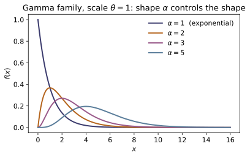
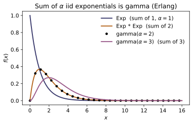
Example problems
~MA-12From $\Gamma(\alpha)=\int_0^\infty t^{\alpha-1}e^{-t}dt$ derive the recursion $\Gamma(\alpha+1)=\alpha\Gamma(\alpha)$ by parts, and use $\Gamma(1)=1$ to get $\Gamma(n)=(n-1)!$. Then, starting from $\Gamma(\tfrac12)=\sqrt\pi$ (the Gaussian integral), evaluate $\Gamma(\tfrac72)=\tfrac52\cdot\tfrac32\cdot\tfrac12\,\Gamma(\tfrac12) =\tfrac{15}{8}\sqrt\pi$. Check: gamma_function(5) $=24.0=4!$; gamma_function(0.5) $=1.772454=\sqrt\pi$; gamma_function(3.5) $=3.323351 =\tfrac{15}{8}\sqrt\pi$; and gamma_lanczos(5.7) matches gamma_function(5.7) to $\sim10^{-13}$.
Integrate $\Gamma(\alpha+1)=\int_0^\infty t^{\alpha}e^{-t}\,dt$ by parts with $u=t^{\alpha}$, $dv=e^{-t}dt$; the boundary term $[-t^{\alpha}e^{-t}]_0^\infty$ vanishes, leaving
With $\Gamma(1)=\int_0^\infty e^{-t}dt=1$, induction gives $\Gamma(n)=(n-1)!$. Starting instead from $\Gamma(\tfrac12)=\sqrt\pi$ and stepping up by the same recursion,
So gamma_function(5) $=24.0=4!$, gamma_function(0.5) $=1.772454=\sqrt\pi$, gamma_function(3.5) $=3.323351$, and the independent gamma_lanczos(5.7) matches gamma_function(5.7) to $\sim10^{-13}$, as in the Check.
A device's lifetime is exponential with mean $5$ years, so $\lambda=1/5=0.2$. Find $P(X>10)$ and $P(X\le 10)$. The survival function is $S(x)=e^{-\lambda x}$, so $P(X>10)=e^{-2}=0.13534$ and $P(X\le 10)=1-e^{-2}=0.86466$. Confirm the mean and variance are $1/\lambda=5$ and $1/\lambda^2=25$. Check: exponential_survival(10, 0.2) $=0.135335$; exponential_cdf(10, 0.2) $=0.864665$; exponential_mean(0.2) $=5.0$, exponential_var(0.2) $=25.0$.
Integrating the density $f(x)=\lambda e^{-\lambda x}$ from $x$ to $\infty$ gives the survival function $S(x)=P(X>x)=e^{-\lambda x}$. With $\lambda=0.2$,
The mean and variance are the standard exponential values $E[X]=1/\lambda=5$ and $\operatorname{Var}(X)=1/\lambda^2=25$. These are exponential_survival(10, 0.2) $=0.135335$, exponential_cdf(10, 0.2) $=0.864665$, exponential_mean(0.2) $=5.0$, and exponential_var(0.2) $=25.0$ of the Check.
~ST-08The same device has already run $3$ years. Show the chance it lasts $2$ more is the same as for a brand-new one: $P(X>5\mid X>3)=P(X>5)/P(X>3)=e^{-\lambda\cdot 5}/ e^{-\lambda\cdot 3}=e^{-2\lambda}=P(X>2)$. With $\lambda=0.4$ both equal $e^{-0.8}=0.449329$. This is the continuous mirror of the geometric law's memorylessness (~ST-08). Check: exp_memoryless_check(3.0, 2.0, 0.4) $=(0.449329,\,0.449329)$ — the two probabilities are equal.
Because $S(x)=e^{-\lambda x}$, the conditional survival factorizes and the elapsed time cancels:
The device "forgets" its age — the continuous mirror of the geometric law's memorylessness (~ST-08). With $s=3,\ t=2,\ \lambda=0.4$ both sides equal $e^{-0.8}=0.449329$, so exp_memoryless_check(3.0, 2.0, 0.4) returns the equal pair $(0.449329,\,0.449329)$ of the Check.
~ST-09Customers arrive as a Poisson process at rate $\lambda=1/3$ per minute, so each inter-arrival is exponential with scale $\theta=3$. The wait for the 2nd arrival is gamma with $\alpha=2,\theta=3$. Write its density $f(x)=x\,e^{-x/3}/(\Gamma(2)\,3^2)=\tfrac{x}{9}e^{-x/3}$, and from $M(t)=(1-3t)^{-2}$ read off mean $\alpha\theta=6$ and variance $\alpha\theta^2=18$. Evaluate $f(3)=\tfrac{3}{9}e^{-1}=0.12263$ and the probability the 2nd customer has arrived by $6$ min, $F(6)$. Check: gamma_pdf(3.0, 2.0, 3.0) $=0.122626$; gamma_mean(2.0, 3.0) $=6.0$, gamma_var(2.0, 3.0) $=18.0$; gamma_cdf(6.0, 2.0, 3.0) $=0.593994$.
The wait for the 2nd arrival is $\mathrm{Gamma}(\alpha=2,\theta=3)$ with density
so $f(3)=\tfrac{3}{9}e^{-1}=0.122626$. From the mgf $M(t)=(1-\theta t)^{-\alpha}=(1-3t)^{-2}$ one reads mean $\alpha\theta=6$ and variance $\alpha\theta^2=18$, and the cdf at $x=6$ is the regularized lower incomplete gamma $P(2,\,6/3)=P(2,2)=0.593994$. These match gamma_pdf(3.0, 2.0, 3.0) $=0.122626$, gamma_mean(2.0, 3.0) $=6.0$, gamma_var(2.0, 3.0) $=18.0$, and gamma_cdf(6.0, 2.0, 3.0) $=0.593994$ of the Check.
~ST-06Let $X_1,\dots,X_\alpha$ be iid exponential with scale $\theta$. Using that mgfs of independent sums multiply, show $M_{\sum X_i}(t)=\big[(1-\theta t)^{-1}\big]^{\alpha}=(1-\theta t)^{-\alpha}$, the gamma$(\alpha,\theta)$ mgf — so by uniqueness (~ST-06) the sum is gamma. For $\alpha=2$ verify by convolution: $f_{X_1+X_2}(x)=\int_0^x\lambda e^{-\lambda y} \lambda e^{-\lambda(x-y)}dy=\lambda^2 x e^{-\lambda x}$. Check: with $\lambda=0.8$ ($\theta=1.25$), convolve_two_exponentials_pdf(2.5, 0.8) $=0.216536=$ gamma_pdf(2.5, 2.0, 1.25); and the mgf identity exponential_mgf(0.2, 1/1.5)**4 $=4.164931=$ gamma_mgf(0.2, 4.0, 1.5).
Each exponential has mgf $(1-\theta t)^{-1}$; independence multiplies them, so
the $\mathrm{Gamma}(\alpha,\theta)$ mgf — by uniqueness (~ST-06) the sum is gamma. For $\alpha=2$ the convolution confirms it directly,
the $\mathrm{Gamma}(2,1/\lambda)$ density. With $\lambda=0.8$ ($\theta=1.25$) this gives convolve_two_exponentials_pdf(2.5, 0.8) $=0.216536=$ gamma_pdf(2.5, 2.0, 1.25), and the mgf identity exponential_mgf(0.2, 1/1.5)**4 $=4.164931=$ gamma_mgf(0.2, 4.0, 1.5), as in the Check.
The chi-square with $r$ degrees of freedom is gamma$(\alpha=r/2,\theta=2)$, so its mean is $\alpha\theta=r$ and its variance $\alpha\theta^2=2r$. Show that for $r=2$ (shape $1$, scale $2$) it collapses to the exponential of mean $2$, i.e. $\lambda=\tfrac12$: $f(x)=\tfrac12 e^{-x/2}$. Check: chi2_mean(10) $=10.0$, chi2_var(10) $=20.0$; chi2_pdf(3.0, 2) $=0.111565=$ exponential_pdf(3.0, 0.5); and chi2_cdf(3.0, 2) $=1-e^{-1.5}=0.776870$.
Since $\chi^2_r=\mathrm{Gamma}(\alpha=r/2,\theta=2)$, its mean is $\alpha\theta=r$ and variance $\alpha\theta^2=2r$; at $r=10$ these are $10$ and $20$. For $r=2$ the shape is $\alpha=1$, and a gamma of shape one is exponential:
the exponential of rate $\lambda=\tfrac12$ (mean $2$). Hence $f(3)=\tfrac12 e^{-1.5}=0.111565$ and $F(3)=1-e^{-1.5}=0.776870$. These match chi2_mean(10) $=10.0$, chi2_var(10) $=20.0$, chi2_pdf(3.0, 2) $=0.111565=$ exponential_pdf(3.0, 0.5), and chi2_cdf(3.0, 2) $=0.776870$ of the Check.
~SM-06, ~ST-17In a gas at temperature $T$ a molecule's velocity has three independent normal components, so its kinetic energy $E=\tfrac12 m v^2$ has $2E/kT=\sum_{i=1}^3 (v_i/\sigma)^2\sim\chi^2_3$ — a gamma of shape $\tfrac32$ (~SM-06). Hence $E[2E/kT]=3$ gives the equipartition mean energy $\tfrac32 kT$, with variance $\mathrm{Var}(2E/kT)=2\cdot 3=6$. (The same "sum of squared standard normals" construction, $\chi^2_r=\sum_{i=1}^r Z_i^2$, is the launch point of sampling theory ~ST-17; note $P(\chi^2_1\le 1)=0.6827$, the one-$\sigma$ probability.) Check: chi2_mean(3) $=3.0$, chi2_var(3) $=6.0$, chi2_cdf(3.0, 3) $=0.608375$; and chi2_cdf(1.0, 1) $=0.682689$.
Writing each velocity component as a standard normal times $\sigma=\sqrt{kT/m}$, the scaled kinetic energy is a sum of three squared standard normals,
a gamma of shape $\tfrac32$. Its mean is $r=3$, so $E[E]=\tfrac32 kT$ — equipartition — and its variance is $2r=6$. The same construction $\chi^2_r=\sum_{i=1}^r Z_i^2$ launches sampling theory (~ST-17); in particular $P(\chi^2_1\le1)=P(|Z|\le1)=0.6827$, the one-$\sigma$ probability. So chi2_mean(3) $=3.0$, chi2_var(3) $=6.0$, chi2_cdf(3.0, 3) $=0.608375$, and chi2_cdf(1.0, 1) $=0.682689$, as in the Check.
Run the worked code: cd ST/ST-11_exponential_gamma_chisquare/code && python3 exponential_gamma_chisquare.py
ST-12 — The Normal Distribution
Probability Theory trunk · ST/ST-12_normal · open in the Teaching Network
A continuous random variable is normal, $X\sim N(\mu,\sigma^2)$, when its density is the Gaussian bell $$f(x)=\frac{1}{\sigma\sqrt{2\pi}}\exp\!\Big(-\frac{(x-\mu)^2}{2\sigma^2}\Big).$$ The $\sqrt{2\pi}$ is the Gaussian integral $\int_{-\infty}^\infty e^{-x^2/2}\,dx =\sqrt{2\pi}$, which makes $f$ integrate to one. Standardizing $Z=(X-\mu)/\sigma$ collapses every normal onto the one standard normal $N(0,1)$, whose cdf is written through the error function, $\Phi(z)=\tfrac12\big[1+\operatorname{erf}(z/\sqrt2)\big]$. The first two moments are $E[X]=\mu$ and $\operatorname{Var}[X]=\sigma^2$; the moment-generating function is $M(t)=\exp(\mu t+\tfrac12\sigma^2t^2)$, from which both moments fall out by differentiation at $t=0$. The symmetric tail areas give the 68–95–99.7 rule $P(|Z|\le k)=2\Phi(k)-1$, and inverting $\Phi$ by bisection yields the probit / quantile $x_p=\mu+\sigma\,\Phi^{-1}(p)$. The module closes by tying the Gaussian to its three big appearances: the CLT (~ST-18), thermodynamic fluctuations (~SM-01), and the quantum wavepacket (~QM-07).
Key equations
Figures
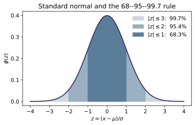
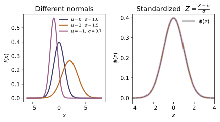
Example problems
Square $I=\int_{-\infty}^\infty e^{-x^2/2}dx$ and pass to polar coordinates to show $I^2=2\pi$, hence $I=\sqrt{2\pi}$. Conclude that $f(x)=\frac{1}{\sigma\sqrt{2\pi}} e^{-(x-\mu)^2/2\sigma^2}$ integrates to one, and that the peak of the standard normal is $f(0)=1/\sqrt{2\pi}$. Check: gaussian_integral_check() $=2.5066283$ $=$ SQRT_2PI; float(standard_normal_pdf(0.0)) $=0.39894228=1/\sqrt{2\pi}$.
Square the integral and pass to polar coordinates:
so $I=\sqrt{2\pi}$. Dividing the bell by $\sigma I$ makes $\int f=1$, and at the peak $x=\mu$ the exponential is $1$, giving the standard-normal height $f(0)=1/\sqrt{2\pi}=0.39894228$. These are gaussian_integral_check() $=2.5066283=$ SQRT_2PI and float(standard_normal_pdf(0.0)) $=0.39894228$ of the Check.
Heights are $X\sim N(\mu=3,\sigma=2)$ (in some units). Find the $Z$-score of $x=5$ and verify the density factorizes as $f_X(5)=\varphi(z)/\sigma$. Why does this reduce every normal probability to a question about $N(0,1)$? Check: standardize(5, 3, 2) $=1.0$; float(normal_pdf(5,3,2)) equals float(standard_normal_pdf(1.0))/2.
The $Z$-score of $x=5$ in $N(3,2^2)$ is
Substituting $x=\mu+\sigma z$ into the density (with $dx=\sigma\,dz$) shows $f_X(x)=\tfrac1\sigma\varphi(z)$, so $f_X(5)=\varphi(1)/2$. Because the standardization is a fixed affine map, every probability $P(a<X<b)=P\!\big(\tfrac{a-\mu}{\sigma}<Z<\tfrac{b-\mu}{\sigma}\big)$ becomes a statement about the single $N(0,1)$ — one table serves all normals. Numerically standardize(5, 3, 2) $=1.0$ and float(normal_pdf(5,3,2)) equals float(standard_normal_pdf(1.0))/2, as in the Check.
Show $E[X]=\mu$ by writing $x=(x-\mu)+\mu$ (the first piece integrates to zero by oddness), and $\operatorname{Var}[X]=\sigma^2$ by the substitution $u=(x-\mu)/\sigma$ and $\int u^2e^{-u^2/2}du=\sqrt{2\pi}$. So $N(\mu,\sigma^2)$ is named by its own mean and variance. Check: for $N(3,2^2)$, normal_mean_by_integration(3,2) $=3.000000$ and normal_variance_by_integration(3,2) $=4.000000$.
Split $x=(x-\mu)+\mu$ in $E[X]=\int x f\,dx$. The first piece is odd in $(x-\mu)$ against the even density and integrates to zero; the second is $\mu\int f=\mu$, so $E[X]=\mu$. For the variance substitute $u=(x-\mu)/\sigma$:
where $\int u^2 e^{-u^2/2}\,du=\sqrt{2\pi}$ (integrate by parts, $u\cdot ue^{-u^2/2}$). So the parameters $(\mu,\sigma^2)$ are literally the mean and variance, confirmed by normal_mean_by_integration(3,2) $=3.000000$ and normal_variance_by_integration(3,2) $=4.000000$ of the Check.
~ST-06Complete the square to derive $M(t)=E[e^{tX}]=\exp(\mu t+\tfrac12\sigma^2 t^2)$. Differentiate at $t=0$ to get $M'(0)=\mu$ and $M''(0)=\mu^2+\sigma^2$, and confirm $\operatorname{Var}=M''(0)-M'(0)^2=\sigma^2$. Then show $aX+b\sim N(a\mu+b,a^2\sigma^2)$ from $e^{bt}M(at)$. Check: for $N(3,2^2)$, normal_mgf(0,3,2) $=1.0$, mgf_moment(1,3,2) $\approx3.0$, and mgf_moment(2,3,2) $\approx13.0=\mu^2+\sigma^2$.
Complete the square in the exponent of $M(t)=\int e^{tx}f(x)\,dx$:
and the remaining Gaussian integrates to $1$, leaving $M(t)=\exp(\mu t+\tfrac12\sigma^2 t^2)$. Then $M'(t)=(\mu+\sigma^2 t)M(t)$ gives $M'(0)=\mu$ and $M''(0)=\mu^2+\sigma^2$, so $\operatorname{Var}=M''(0)-M'(0)^2=\sigma^2$. Finally
the mgf of $N(a\mu+b,\,a^2\sigma^2)$, so $aX+b$ is normal. For $N(3,2^2)$: normal_mgf(0,3,2) $=1.0$, mgf_moment(1,3,2) $\approx3.0$, and mgf_moment(2,3,2) $\approx13.0=\mu^2+\sigma^2$, as in the Check.
Using $P(|Z|\le k)=2\Phi(k)-1$, fill in the probabilities of $\mu\pm1\sigma$, $\mu\pm2\sigma$, $\mu\pm3\sigma$. For IQ scores $X\sim N(100,15^2)$, what fraction of people score between $85$ and $115$ (i.e. within one $\sigma$)? Check: empirical_rule(1), empirical_rule(2), empirical_rule(3) $=(0.6827,0.9545,0.9973)$; float(normal_interval_prob(85,115,100,15)) $=0.6826895$.
By symmetry $P(|Z|\le k)=\Phi(k)-\Phi(-k)=2\Phi(k)-1$. Evaluating $\Phi$ at $k=1,2,3$,
the 68–95–99.7 rule. For $X\sim N(100,15^2)$ the band $85$–$115$ is exactly $\mu\pm1\sigma$, so the fraction inside is $P(|Z|\le1)=0.6827$. Thus empirical_rule(1), empirical_rule(2), empirical_rule(3) $=(0.6827,0.9545,0.9973)$ and float(normal_interval_prob(85,115,100,15)) $=0.6826895$, as in the Check.
SAT-section scores are modeled $X\sim N(500,100^2)$. Standardize $x=650$ to $z=1.5$ and find $P(X>650)=1-\Phi(1.5)$. Separately, what is $P(X>130)$ for the IQ model $N(100,15^2)$ (a two-$\sigma$ event)? Check: 1-float(normal_cdf(650,500,100)) $=0.0668072$ (so $z=1.5\Rightarrow\Phi=0.9331928$); 1-float(normal_cdf(130,100,15)) $=0.0227501$ (the upper-$2\sigma$ tail, half of $1-0.9545$).
Standardize each threshold. For $X\sim N(500,100^2)$ and $x=650$, $z=(650-500)/100=1.5$, so
For the IQ model $X\sim N(100,15^2)$ and $x=130$, $z=(130-100)/15=2$ — a two-$\sigma$ event — so
which is half of $1-0.9545$ by the empirical rule. These are 1-float(normal_cdf(650,500,100)) $=0.0668072$ and 1-float(normal_cdf(130,100,15)) $=0.0227501$ of the Check.
The probit values $\Phi^{-1}(0.90)=1.2816$, $\Phi^{-1}(0.95)=1.6449$, $\Phi^{-1}(0.975)=1.9600$ are the multipliers behind one-sided $90\%/95\%$ limits and two-sided $95\%$ intervals. Find the $90$th percentile of the SAT model $N(500,100^2)$ from $x_p=\mu+\sigma\Phi^{-1}(p)$, and check $\Phi^{-1}(\tfrac12)=0$. Check: probit(0.5) $=0$; probit(0.975) $=1.9599640$; normal_quantile(0.90,500,100) $=628.1552=500+100(1.2816)$.
A normal percentile undoes the standardization: from $\Phi(z_p)=p$ and $x_p=\mu+\sigma z_p$,
for $N(500,100^2)$. Symmetry of $\varphi$ forces the median multiplier to vanish, $\Phi^{-1}(\tfrac12)=0$, since $\Phi(0)=\tfrac12$. The probit values $\Phi^{-1}(0.90,0.95,0.975)=1.2816,1.6449,1.9600$ are the usual confidence multipliers. So probit(0.5) $=0$, probit(0.975) $=1.9599640$, and normal_quantile(0.90,500,100) $=628.1552=500+100(1.2816)$, as in the Check.
Prove $\Phi(-z)=1-\Phi(z)$ from the evenness of $\varphi$, and use it to show the central $95\%$ of $N(0,1)$ lies in $(-1.96,1.96)$ — i.e. $\Phi(1.96)\approx0.975$, not the round $\Phi(2)=0.9772$ of the empirical rule. Check: float(standard_normal_cdf(1.96)) $=0.9750021$ while float(standard_normal_cdf(2.0)) $=0.9772499$; and float(standard_normal_cdf(-1.96)) $=1-0.9750021=0.0249979$.
Because $\varphi$ is even, the left tail below $-z$ equals the right tail above $z$:
The central $95\%$ then sits between the symmetric points $\pm z_0$ with $\Phi(z_0)=0.975$, namely $z_0=1.96$, since $2(0.975)-1=0.95$. This is slightly tighter than the empirical-rule $\Phi(2)=0.9772$. Indeed float(standard_normal_cdf(1.96)) $=0.9750021$ while float(standard_normal_cdf(2.0)) $=0.9772499$, and float(standard_normal_cdf(-1.96)) $=1-0.9750021=0.0249979$, confirming $\Phi(-z)=1-\Phi(z)$ as in the Check.
Run the worked code: cd ST/ST-12_normal/code && python3 normal.py
ST-13 — Joint Distributions of Two Random Variables
Probability Theory trunk · ST/ST-13_joint_distributions · open in the Teaching Network
A joint distribution specifies the probabilities of $X$ and $Y$ together. The discrete (STAT 414 L17) and continuous (L20) theories run perfectly parallel — sum $\leftrightarrow$ integral, everything else identical:
- Joint pmf / pdf. Discrete: $f(x,y)=P(X=x,Y=y)\ge0$ with $\sum_{x,y}f(x,y)=1$. Continuous: $f(x,y)\ge0$ with $\iint f(x,y)\,dx\,dy=1$. Code: joint_pmf_is_valid, joint_pdf_is_valid, normalize_joint_pdf. - Marginals. Sum / integrate the other variable out: $f_X(x)=\sum_y f(x,y)$ or $\int f(x,y)\,dy$. Code: marginal_x, marginal_y, marginal_pdf_x, marginal_pdf_y. - Independence. $X\perp Y$ iff the joint factors as $f(x,y)=f_X(x)\,f_Y(y)$ for all $(x,y)$. Code: independent_rv_check, independent_pdf_check. - Expectation (LOTUS). $E[g(X,Y)]=\sum_{x,y}g\,f$ or $\iint g\,f$; with $g=x+y$ this gives linearity, $E[X+Y]=E[X]+E[Y]$, for any joint. Code: expectation_joint, expectation_joint_continuous. - Joint & marginal cdfs. $F(x,y)=P(X\le x,Y\le y)$; $F_X(x)=F(x,\infty)$. Code: joint_cdf, marginal_cdf_x, joint_cdf_continuous.
A 1-D and a 2-D midpoint integrator (_integrate, _integrate2d) let every continuous identity be checked numerically against its closed form.
Key equations
Figures
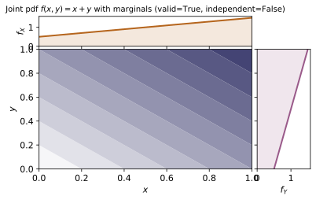
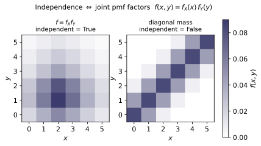
Example problems
~ST-05Verify $f(x,y)=\tfrac{x+y}{32}$ is a valid joint pmf: $f\ge0$ and the $2\times4$ cell values $x+y$ sum to $32$. Then compute the marginals by summing out the other variable, $f_X(x)=\sum_y f(x,y)$ and $f_Y(y)=\sum_x f(x,y)=\tfrac{3+2y}{32}$, and confirm each is itself a one-variable pmf (sums to $1$). Check: joint_pmf_is_valid(P) $=$ True; marginal_x(P) $=[0.4375,\,0.5625]$ $=[\tfrac{14}{32},\tfrac{18}{32}]$; marginal_y(P) $=[0.15625,0.21875,0.28125,0.34375]$ and marginal_y(P).sum() $=1.0$.
Nonnegativity is immediate: $x,y\ge1$, so $f=(x+y)/32>0$ on every cell. For the total mass, sum the numerators $x+y$ over the $2\times4$ grid — row $x{=}1$ gives $2{+}3{+}4{+}5=14$ and row $x{=}2$ gives $3{+}4{+}5{+}6=18$ — so
a valid pmf. Summing out $y$ collapses each row to its total, $f_X(1)=\tfrac{14}{32}$, $f_X(2)=\tfrac{18}{32}$; summing out $x$ gives $f_Y(y)=\tfrac{(1+y)+(2+y)}{32}=\tfrac{3+2y}{32}$, i.e. $\tfrac5{32},\tfrac7{32},\tfrac9{32},\tfrac{11}{32}$, totalling $\tfrac{32}{32}=1$ — each marginal is itself a pmf. This is marginal_x(P) $=[0.4375,0.5625]$ and marginal_y(P) $=[0.15625,0.21875,0.28125,0.34375]$ with marginal_y(P).sum() $=1.0$.
Test $f(x,y)=f_X(x)\,f_Y(y)$. Show it fails at $(1,1)$: $f(1,1)=\tfrac{2}{32}=0.0625$ but $f_X(1)\,f_Y(1)=\tfrac{14}{32}\cdot\tfrac{5}{32} =0.06836$. Conclude $X,Y$ are dependent (a sum $x+y$ never factors as $g(x)h(y)$). Contrast with the outer-product table $P_i=\big[\begin{smallmatrix}.2&.2\\.3&.3\end{smallmatrix}\big] =\mathrm{outer}([.4,.6],[.5,.5])$, which does factor. Check: independent_rv_check(P) $=$ False; independent_rv_check(np.outer([0.4,0.6],[0.5,0.5])) $=$ True.
Factorization must hold at every cell, so a single failure settles it. At $(1,1)$,
which differ, so $X,Y$ are dependent. The structural reason: a pmf factors iff it can be written $g(x)h(y)$, and a sum $x+y$ admits no such split (only products separate into a function of $x$ times a function of $y$). By contrast the outer-product table is a product by construction, so it factors with marginals $[.4,.6],[.5,.5]$. Hence independent_rv_check(P) $=$ False while independent_rv_check(np.outer([0.4,0.6],[0.5,0.5])) $=$ True.
~ST-14Using $E[g(X,Y)]=\sum_{x,y}g(x,y)f(x,y)$, compute $E[X]=\tfrac{50}{32}$, $E[Y]=\tfrac{90}{32}$, $E[XY]=\tfrac{140}{32}$. Verify linearity $E[X+Y]=E[X]+E[Y]$ (it needs no independence), and that the gap $E[XY]-E[X]E[Y]=-\tfrac{5}{256}$ is nonzero — the covariance of ~ST-14. Check: expectation_joint(lambda x,y:x, xv,yv,P) $=1.5625$; ...:y... $=2.8125$; ...:x*y... $=4.375$; expectation_joint(lambda x,y:x+y,...) $=4.375\stackrel{?}{=}1.5625+2.8125=4.375$; $E[XY]-E[X]E[Y]=-0.01953$.
Bivariate LOTUS weights $g$ by the joint. With the P1 marginals, $E[X]=\sum_x x f_X(x)=1\cdot\tfrac{14}{32}+2\cdot\tfrac{18}{32}=\tfrac{50}{32}$ and $E[Y]=\sum_y y f_Y(y)=\tfrac{5+14+27+44}{32}=\tfrac{90}{32}$; the cross moment needs the full table,
Linearity uses no independence — splitting the sum, $E[X+Y]=E[X]+E[Y]=\tfrac{50+90}{32}=\tfrac{140}{32}=4.375$ (numerically equal to $E[XY]$ here, but by a different route). The product rule fails, though: $E[XY]-E[X]E[Y]=4.375-\tfrac{50}{32}\cdot\tfrac{90}{32}=-\tfrac{5}{256}=-0.01953$, the covariance of ~ST-14. These match expectation_joint $=1.5625,2.8125,4.375$ and the gap $-0.01953$.
Compute $F(x,y)=\sum_{x_i\le x,\,y_j\le y}f(x_i,y_j)$. Show $F(1,2)=f(1,1)+f(1,2)=\tfrac{5}{32}$, the corner $F(2,4)=1$, and that pushing $y\to\max$ recovers the marginal cdf $F_X(1)=F(1,4)=f_X(1)=\tfrac{14}{32}$. Argue $F$ is nondecreasing in each argument. Check: joint_cdf(P,xv,yv,1,2) $=0.15625$; joint_cdf(P,xv,yv,2,4) $=1.0$; joint_cdf(P,xv,yv,1,4) $=$ marginal_cdf_x(P,xv,1) $=0.4375$.
The joint cdf accumulates all mass in the lower-left quadrant of $(x,y)$. At $(1,2)$ only cells $(1,1),(1,2)$ qualify,
and at the top-right corner every cell is included, so $F(2,4)=\sum_{x,y}f=1$. Pushing $y$ to its maximum keeps only the $X\le x$ restriction, recovering the marginal cdf: $F(1,4)=\sum_y f(1,y)=f_X(1)=\tfrac{14}{32}=0.4375$. Since each added cell contributes $f\ge0$, $F$ only rises as $x$ or $y$ grows — nondecreasing in each argument. These reproduce joint_cdf(P,xv,yv,1,2) $=0.15625$, joint_cdf(P,xv,yv,2,4) $=1.0$, and joint_cdf(P,xv,yv,1,4) $=$ marginal_cdf_x(P,xv,1) $=0.4375$.
A density has the shape $f\propto xy$ on the unit square. Find the constant $c$ with $\iint c\,xy\,dx\,dy=1$: since $\iint_0^1 xy\,dx\,dy=\tfrac14$, $c=4$, so $f=4xy$. Confirm it is a valid pdf ($f\ge0$, integral $1$). Check: normalize_joint_pdf(lambda x,y:xy, 0,1,0,1) $\approx4.0$; joint_pdf_is_valid(lambda x,y:4x*y, 0,1,0,1) $=$ True.
The shape $xy$ separates over the unit square, so
A density must integrate to $1$, which forces $c=\big(\tfrac14\big)^{-1}=4$ and $f(x,y)=4xy$. It is nonnegative on the square and $\iint 4xy=4\cdot\tfrac14=1$, so it is a valid pdf. Numerically normalize_joint_pdf(lambda x,y:xy, 0,1,0,1) $\approx4.0$ and joint_pdf_is_valid(lambda x,y:4x*y, 0,1,0,1) $=$ True.
For $f=4xy$ integrate out $y$: $f_X(x)=\int_0^1 4xy\,dy=2x$, similarly $f_Y(y)=2y$, and note $4xy=(2x)(2y)$ — independent. For $f=x+y$: $f_X(x)=\int_0^1(x+y)\,dy=x+\tfrac12$, which gives $f_X(x)f_Y(y)=(x+\tfrac12)(y+\tfrac12) \ne x+y$ — dependent (they coincide only at the centre, so the check must sample several points). Check: marginal_pdf_x(lambda x,y:4xy, 0.5, 0,1) $=1.0$ $(=2\cdot0.5)$; marginal_pdf_x(lambda x,y:x+y, 0.3, 0,1) $=0.8$ $(=0.3+\tfrac12)$; independent_pdf_check(...4xy...) $=$ True, independent_pdf_check(...x+y...) $=$ False.
Integrate the other variable out. For $f=4xy$,
and since $(2x)(2y)=4xy=f$, the joint factors — $X\perp Y$. For $f=x+y$, $f_X(x)=\int_0^1(x+y)\,dy=x+\tfrac12$ and $f_Y(y)=y+\tfrac12$, whose product $(x+\tfrac12)(y+\tfrac12)=xy+\tfrac{x+y}{2}+\tfrac14$ is not $x+y$ (they coincide only where $xy+\tfrac14=\tfrac{x+y}2$, e.g. the centre), so $X,Y$ are dependent. Hence marginal_pdf_x(...4xy..., 0.5) $=1.0=2(0.5)$, marginal_pdf_x(...x+y..., 0.3) $=0.8=0.3+\tfrac12$, and independent_pdf_check returns True for $4xy$ and False for $x+y$.
~ST-14For $f=x+y$ compute $E[X]=\iint x(x+y)\,dx\,dy=\tfrac{7}{12}$ and $E[XY]=\iint xy(x+y)=\tfrac13$. For the independent $f=4xy$ show the product rule $E[XY]=E[X]E[Y]=\tfrac23\cdot\tfrac23=\tfrac49$. Finally get the joint cdf of $f=4xy$, $F(x,y)=\iint_0^{x,y}4uv=x^2y^2$, so $F(\tfrac12,\tfrac12)=\tfrac1{16}$ and $F(1,1)=1$. Check: expectation_joint_continuous(lambda x,y:x, lambda x,y:x+y, 0,1,0,1) $\approx0.5833\,(=\tfrac{7}{12})$; ...xy... $\approx0.3333\,(=\tfrac13)$; for $4xy$ expectation_joint_continuous(lambda x,y:xy,...) $\approx0.4444=\tfrac49$; joint_cdf_continuous(lambda x,y:4xy, 0,0, 0.5,0.5) $\approx0.0625$, ...,1,1) $\approx1.0$.
For $f=x+y$, continuous LOTUS gives
and $E[XY]=\iint xy(x+y)=(\tfrac13)(\tfrac12)+(\tfrac12)(\tfrac13)=\tfrac13$. For the independent $f=4xy$ the integrals separate, $E[X]=E[Y]=4\cdot\tfrac13\cdot\tfrac12=\tfrac23$ and $E[XY]=4(\tfrac13)(\tfrac13)=\tfrac49=E[X]E[Y]$ — the product rule, here exact. Its cdf is the running integral $F(x,y)=\int_0^x\!\int_0^y 4uv\,dv\,du=x^2y^2$, so $F(\tfrac12,\tfrac12)=\tfrac1{16}$ and $F(1,1)=1$. These match expectation_joint_continuous $\approx0.5833,0.3333,0.4444$ and joint_cdf_continuous $\approx0.0625,1.0$.
Let $f(x,y)=2$ on the triangle $0<x<y<1$ (area $\tfrac12$, so it integrates to $1$). Because the support is not a rectangle, $X,Y$ cannot be independent. Verify by marginalizing: $f_X(x)=\int_x^1 2\,dy=2(1-x)$ and $f_Y(y)=\int_0^y 2\,dx=2y$, whose product $4y(1-x)\ne2$. (The diagonal makes the 2-D midpoint integral of the indicator slightly inexact, but the marginals — 1-D integrals at fixed $x$ or $y$ — are clean.) Check: with f = lambda x,y: 2.0*(np.asarray(x) < np.asarray(y)), marginal_pdf_x(f, 0.25, 0,1) $=1.5=2(1-0.25)$; marginal_pdf_y(f, 0.6, 0,1) $=1.2=2\cdot0.6$; independent_pdf_check(f, 0,1,0,1) $=$ False.
The mass $f=2$ sits on the triangle $0<x<y<1$ of area $\tfrac12$, so $\iint f=2\cdot\tfrac12=1$. Independence would require a rectangular support (the factored form $f_Xf_Y$ is positive on a product set), but the constraint $x<y$ couples the variables, so they cannot be independent. The marginals confirm it:
whose product $4y(1-x)$ is not the constant $2$. Hence marginal_pdf_x(f, 0.25, 0,1) $=1.5=2(1-0.25)$, marginal_pdf_y(f, 0.6, 0,1) $=1.2=2\cdot0.6$, and independent_pdf_check(f, 0,1,0,1) $=$ False.
Run the worked code: cd ST/ST-13_joint_distributions/code && python3 joint_distributions.py
ST-14 — Correlation & Conditional Distributions
Probability Theory trunk · ST/ST-14_correlation_conditional · open in the Teaching Network
For two random variables on one probability space the covariance $\operatorname{Cov}(X,Y)=E[XY]-E[X]E[Y]$ measures their joint variation; dividing by the two standard deviations gives the dimensionless correlation coefficient $\rho=\operatorname{Cov}(X,Y)/(\sigma_X\sigma_Y)$, which the Cauchy–Schwarz inequality confines to $|\rho|\le 1$ — with equality iff $Y$ is an affine function of $X$. Independence forces $\rho=0$, but the converse is false: $\rho$ sees only the linear part of a dependence, and the module ships the standing counterexample ($X$ uniform on $\{-1,0,1\}$, $Y=X^2$: $\rho=0$ yet $Y$ is a deterministic function of $X$). Conditioning replaces a marginal by a slice, the conditional pmf/pdf $f(y\mid x)=f(x,y)/f_X(x)$, itself a legitimate distribution; its mean $E[Y\mid X=x]$ is the regression function, and averaging it over $X$ recovers the marginal mean — the law of total expectation $E\!\left[E[Y\mid X]\right]=E[Y]$. The best straight-line predictor has slope $\rho\,\sigma_Y/\sigma_X$ and, because $|\rho|\le1$, pulls predictions toward the mean: regression to the mean. The covariance matrix $\Sigma=\bigl[\begin{smallmatrix}\operatorname{Var}X&\operatorname{Cov}\\\operatorname{Cov}&\operatorname{Var}Y\end{smallmatrix}\bigr]$ ties it all to ~MA-04: $\det\Sigma=\sigma_X^2\sigma_Y^2(1-\rho^2)\ge0$ is the statement $|\rho|\le1$.
Key equations
Figures
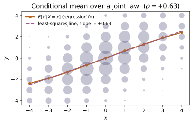
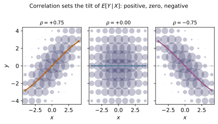
Example problems
Using the shortcut $\operatorname{Cov}(X,Y)=E[XY]-E[X]E[Y]$, show for the demo joint that $E[X]=\tfrac{25}{16}=1.5625$, $E[Y]=\tfrac{45}{16}=2.8125$, and $E[XY]=\tfrac{35}{8}=4.375$, hence $$\operatorname{Cov}(X,Y)=\frac{35}{8}-\frac{25}{16}\cdot\frac{45}{16} =\frac{1120-1125}{256}=-\frac{5}{256}.$$ The negative sign says larger $X$ goes (weakly) with smaller $Y$. Check: covariance(demo_joint()) $=-0.01953125=-5/256$; mean_x, mean_y, mean_xy give $1.5625,\,2.8125,\,4.375$.
The shortcut $\operatorname{Cov}=E[XY]-E[X]E[Y]$ needs three moments. From the marginals $f_X=(\tfrac{14}{32},\tfrac{18}{32})$ and $f_Y(y)=\tfrac{3+2y}{32}$, $E[X]=\tfrac{50}{32}=\tfrac{25}{16}=1.5625$, $E[Y]=\tfrac{90}{32}=\tfrac{45}{16}=2.8125$, and the full table gives $E[XY]=\tfrac{140}{32}=\tfrac{35}{8}=4.375$. Over the common denominator $256$,
The negative sign says a larger $X$ accompanies a slightly smaller $Y$. This is covariance(demo_joint()) $=-0.01953125$ with mean_x, mean_y, mean_xy $=1.5625,2.8125,4.375$.
~MA-04Rescale the covariance to the dimensionless $\rho=\operatorname{Cov}/(\sigma_X\sigma_Y)$. With $\operatorname{Var}X=\tfrac{63}{256}$ and $\operatorname{Var}Y=\tfrac{295}{256}$, $$\rho=\frac{-5/256}{\sqrt{(63/256)(295/256)}}=\frac{-5}{\sqrt{18585}}\approx-0.03668,$$ comfortably inside $[-1,1]$ — a weak negative linear association. Explain why Cauchy–Schwarz ($\det\Sigma=\sigma_X^2\sigma_Y^2(1-\rho^2)\ge0$) guarantees the bound. Check: correlation(demo_joint()) $\approx-0.036677$ and abs(correlation(...)) <= 1; covariance_matrix(...) has determinant $\sigma_X^2\sigma_Y^2-\operatorname{Cov}^2\approx0.2832>0$.
Dividing the covariance by the two standard deviations removes its units. With $\operatorname{Var}X=E[X^2]-\mu_X^2=\tfrac{86}{32}-(\tfrac{25}{16})^2=\tfrac{63}{256}$ and $\operatorname{Var}Y=\tfrac{290}{32}-(\tfrac{45}{16})^2=\tfrac{295}{256}$,
a weak negative linear association, safely inside $[-1,1]$. The bound is Cauchy–Schwarz in matrix form: $\det\Sigma=\sigma_X^2\sigma_Y^2-\operatorname{Cov}^2=\sigma_X^2\sigma_Y^2(1-\rho^2)\ge0$ forces $\rho^2\le1$. Numerically correlation(demo_joint()) $\approx-0.036677$ with abs(...) <= 1, and $\det\Sigma=\tfrac{18585-25}{256^2}\approx0.2832>0$.
Prove that $|\rho|=1$ iff $Y=aX+b$ almost surely, with $\rho=\operatorname{sgn}(a)$ (the equality case of $0\le E[(U-tV)^2]$, $U=X-\mu_X$, $V=Y-\mu_Y$). Confirm on two deterministic lines $Y=2X+1$ and $Y=-3X+5$. Check: correlation(linear_dependence_example(2.0, 1.0)) $=1.0$ and correlation(linear_dependence_example(-3.0, 5.0)) $=-1.0$.
Let $U=X-\mu_X$, $V=Y-\mu_Y$. For every $t$, $0\le E[(U-tV)^2]=E[U^2]-2t\,E[UV]+t^2E[V^2]$; a quadratic in $t$ that never dips below zero has discriminant $\le0$, i.e. $(E[UV])^2\le E[U^2]E[V^2]$ — exactly $|\rho|\le1$. Equality needs a double root $t_\*$, where
so $X,Y$ lie on a line $Y=aX+b$ and $\rho=\operatorname{sgn}(a)$ (rescaling flips the sign, not the magnitude). Thus the deterministic lines give correlation(linear_dependence_example(2.0, 1.0)) $=1.0$ and correlation(linear_dependence_example(-3.0, 5.0)) $=-1.0$.
First show that independence makes $E[XY]=E[X]E[Y]$, so $\rho=0$. Then take $X\sim U\{-1,0,1\}$ and $Y=X^2$: compute $E[X]=0$, $E[XY]=E[X^3]=0$, so $\operatorname{Cov}=0$ and $\rho=0$ — yet $Y$ is a function of $X$ (maximally dependent). Explain why $\rho$ misses this: the dependence is purely quadratic, invisible to a linear measure. Check: with u = uncorrelated_dependent_example(), covariance(u) $=0.0$, correlation(u) $=0.0$, but is_independent(u) $=$ False; and the conditional means differ, conditional_expectation(u, -1) $=1$, conditional_expectation(u, 0) $=0$, conditional_expectation(u, 1) $=1$.
If $X\perp Y$ then $f(x,y)=f_X(x)f_Y(y)$, so the cross moment splits, $E[XY]=\sum_{x,y}xy\,f_X(x)f_Y(y)=E[X]E[Y]$, giving $\operatorname{Cov}=0$ and $\rho=0$. The converse fails: take $X$ uniform on $\{-1,0,1\}$ and $Y=X^2$. By symmetry $E[X]=0$ and $E[XY]=E[X^3]=0$, so
yet $Y$ is a deterministic function of $X$. The point: $\rho$ sees only a linear trend, and here the dependence is purely quadratic (symmetric, hence zero slope). Conditioning exposes it — conditional_expectation(u, -1) $=1$, (u, 0) $=0$, (u, 1) $=1$ vary with $x$ — while covariance(u) $=$ correlation(u) $=0.0$ and is_independent(u) $=$ False.
For the demo joint, condition on $X=1$: $f(y\mid 1)=f(1,y)/f_X(1)=\big(\tfrac{1+y}{32}\big) /\big(\tfrac{14}{32}\big)=\tfrac{1+y}{14}$, a valid pmf ($\sum_{y=1}^4\tfrac{1+y}{14}=1$). Its mean is the regression function at $x=1$: $$E[Y\mid X=1]=\sum_{y=1}^{4}y\,\frac{1+y}{14}=\frac{40}{14}=\frac{20}{7}\approx2.857, \qquad E[Y\mid X=2]=\frac{50}{18}=\frac{25}{9}\approx2.778 .$$ Check: conditional_pmf(demo_joint(), 1) returns probabilities $\big(\tfrac{2}{14},\tfrac{3}{14},\tfrac{4}{14},\tfrac{5}{14}\big)$ summing to $1$; conditional_expectation(demo_joint(), 1) $\approx2.857143=20/7$ and ...(demo_joint(), 2) $\approx2.777778=25/9$.
Slice the joint at $X=1$ and renormalize by $f_X(1)=\tfrac{14}{32}$:
giving probabilities $\tfrac2{14},\tfrac3{14},\tfrac4{14},\tfrac5{14}$ that sum to $\tfrac{14}{14}=1$ — a valid pmf. Its mean is the regression value at $x=1$: $E[Y\mid X{=}1]=\sum_{y=1}^4 y\tfrac{1+y}{14}=\tfrac{2+6+12+20}{14}=\tfrac{40}{14}=\tfrac{20}{7}\approx2.857$. The same construction at $X=2$ (denominator $\tfrac{18}{32}$, weights $\tfrac{2+y}{18}$) gives $E[Y\mid X{=}2]=\tfrac{50}{18}=\tfrac{25}{9}\approx2.778$. These are conditional_pmf(demo_joint(), 1) summing to $1$ and conditional_expectation $\approx2.857143,2.777778$.
Verify the tower property $E[E[Y\mid X]]=E[Y]$ for the demo joint by averaging the conditional means over the marginal of $X$: $$\frac{20}{7}\cdot\frac{14}{32}+\frac{25}{9}\cdot\frac{18}{32} =\frac{20\cdot14}{7\cdot32}+\frac{25\cdot18}{9\cdot32}=1.25+1.5625=2.8125=E[Y].$$ Do the same for the $Y=X^2$ counterexample: $1\cdot\tfrac13+0\cdot\tfrac13+1\cdot\tfrac13 =\tfrac23=E[Y]$. Check: law_of_total_expectation(demo_joint()) $=2.8125=$ mean_y(demo_joint()); law_of_total_expectation(uncorrelated_dependent_example()) $\approx0.6667=2/3$.
The tower property averages the conditional means over the marginal of $X$. Using $f_X=(\tfrac{14}{32},\tfrac{18}{32})$ and the two regression values of P5,
The cancellations $14/7=2$ and $18/9=2$ are the proof in miniature: dividing by $f_X(x)$ to condition and multiplying by it to average undo each other, reassembling $\sum_{x,y}y\,f(x,y)$. The $Y=X^2$ law works the same way, $1\cdot\tfrac13+0\cdot\tfrac13+1\cdot\tfrac13=\tfrac23=E[Y]$. Hence law_of_total_expectation(demo_joint()) $=2.8125=$ mean_y(demo_joint()) and law_of_total_expectation(uncorrelated_dependent_example()) $\approx0.6667$.
The best linear predictor has slope $b=\operatorname{Cov}/\operatorname{Var}X= \rho\,\sigma_Y/\sigma_X$ and intercept $a=\mu_Y-b\mu_X$. For the demo joint $b=\tfrac{-5/256}{63/256}=-\tfrac{5}{63}\approx-0.07937$ and $a\approx2.93651$, and the line passes through $(\mu_X,\mu_Y)=(1.5625,2.8125)$. Now take the symmetric law on $\{-1,1\}^2$ with $\rho=0.6$ (regression_to_mean_example()): since $\mu_X=\mu_Y=0$ and $\sigma_X=\sigma_Y=1$, an extreme $X=+1$ predicts $\hat Y=\rho\cdot1=0.6$ — closer to the mean than $X$, the regression-to-the-mean effect forced by $|\rho|\le1$. Check: regression_line(demo_joint()) $\approx(2.93651,\,-0.07937)$; best_linear_predictor(demo_joint(), 1.5625) $\approx2.8125$; for r = regression_to_mean_example(), correlation(r) $=0.6$ and best_linear_predictor(r, 1.0) $=0.6<1$.
The least-squares slope is $b=\operatorname{Cov}/\operatorname{Var}X=\tfrac{-5/256}{63/256}=-\tfrac{5}{63}\approx-0.07937$, and the intercept pins the line to the means, $a=\mu_Y-b\mu_X=2.8125+\tfrac{5}{63}(1.5625)\approx2.93651$. By construction $a+b\mu_X=\mu_Y$, so the line passes through $(1.5625,2.8125)$. In standardized form the shrinkage is explicit,
For the symmetric $\rho=0.6$ law ($\mu_X=\mu_Y=0$, $\sigma_X=\sigma_Y=1$), a $+1\sigma$ outlier $X=1$ predicts $\hat Y=\rho\cdot1=0.6$ — less extreme than $X$, the regression-to-the-mean effect forced by $|\rho|\le1$. Thus regression_line(demo_joint()) $\approx(2.93651,-0.07937)$, best_linear_predictor(demo_joint(), 1.5625) $\approx2.8125$, and for r with correlation(r) $=0.6$, best_linear_predictor(r, 1.0) $=0.6<1$.
For $f(x,y)=x+y$ on the unit square, $f_X(x)=x+\tfrac12$, so $$E[Y\mid X=x]=\frac{\int_0^1 y(x+y)\,dy}{x+\tfrac12}=\frac{\tfrac{x}{2}+\tfrac13}{x+\tfrac12},$$ a nonlinear regression function ($\tfrac23$ at $x=0$, $\tfrac59$ at $x=1$). Show also $E[X]=\tfrac{7}{12}$, $\operatorname{Cov}=-\tfrac{1}{144}$, and $\rho=-\tfrac{1}{11}$, and confirm the tower $\int_0^1 E[Y\mid X{=}x]f_X(x)\,dx= E[Y]=\tfrac{7}{12}$. Check: with f = lambda x,y: x+y, bd = (0,1,0,1): cont_covariance(f, bd) $\approx-0.006944=-1/144$, cont_correlation(f, bd) $\approx-0.0909=-1/11$, cont_conditional_expectation(f, 0.0, bd) $\approx0.6667=2/3$, cont_conditional_expectation(f, 1.0, bd) $\approx0.5556=5/9$, and cont_total_expectation(f, bd) $\approx0.5833=7/12$.
With $f_X(x)=x+\tfrac12$ the conditional mean is the ratio
a genuinely nonlinear function of $x$ ($\tfrac23$ at $x=0$, $\tfrac59$ at $x=1$). For the moments, $E[X]=\tfrac7{12}$, and with $\operatorname{Var}X=\operatorname{Var}Y=\tfrac{11}{144}$ and $\operatorname{Cov}=E[XY]-E[X]E[Y]=\tfrac13-(\tfrac7{12})^2=-\tfrac1{144}$, the correlation is $\rho=\tfrac{-1/144}{11/144}=-\tfrac1{11}$. The tower closes because the numerator is $E[Y\mid X{=}x]f_X(x)$: $\int_0^1(\tfrac x2+\tfrac13)\,dx=\tfrac14+\tfrac13=\tfrac7{12}=E[Y]$. These match cont_covariance $\approx-0.006944$, cont_correlation $\approx-0.0909$, cont_conditional_expectation $\approx0.6667,0.5556$, and cont_total_expectation $\approx0.5833$.
Run the worked code: cd ST/ST-14_correlation_conditional/code && python3 correlation_conditional.py
ST-15 — The Bivariate Normal Distribution
Probability Theory trunk · ST/ST-15_bivariate_normal · open in the Teaching Network
The bivariate normal density in the five parameters $(\mu_X,\mu_Y,\sigma_X, \sigma_Y,\rho)$ is $$f(x,y)=\frac{1}{2\pi\sigma_X\sigma_Y\sqrt{1-\rho^2}} \exp\!\left(-\frac{z}{2(1-\rho^2)}\right),\qquad z=\frac{(x-\mu_X)^2}{\sigma_X^2}-\frac{2\rho(x-\mu_X)(y-\mu_Y)}{\sigma_X\sigma_Y} +\frac{(y-\mu_Y)^2}{\sigma_Y^2}.$$ Packing the means into $\boldsymbol\mu=(\mu_X,\mu_Y)$ and the second moments into the covariance matrix $\Sigma=\left(\begin{smallmatrix}\sigma_X^2&\rho\sigma_X\sigma_Y\\ \rho\sigma_X\sigma_Y&\sigma_Y^2\end{smallmatrix}\right)$ rewrites it as the clean quadratic form $f(\mathbf x)=\frac{1}{2\pi\sqrt{\det\Sigma}}\exp\!\big(-\tfrac12 (\mathbf x-\boldsymbol\mu)^{\!\top}\Sigma^{-1}(\mathbf x-\boldsymbol\mu)\big)$, which requires $\Sigma$ positive-definite ($\sigma_X,\sigma_Y>0$, $|\rho|<1$; ~MA-04). From this one object the whole lesson follows: both marginals are normal ($X\sim N(\mu_X,\sigma_X^2)$, $Y\sim N(\mu_Y,\sigma_Y^2)$); the conditional $Y\mid X=x$ is normal with mean $\mu_Y+\rho\frac{\sigma_Y}{\sigma_X} (x-\mu_X)$ (the regression line of ~ST-14) and variance $\sigma_Y^2(1-\rho^2)$ (independent of $x$ — homoscedastic, and shrunk by the information $X$ carries); and — uniquely for the joint Gaussian — $\rho=0\iff$ independence. The constant-density contour ellipses $(\mathbf x-\boldsymbol\mu)^{\!\top} \Sigma^{-1}(\mathbf x-\boldsymbol\mu)=c^2$ have principal axes along the eigenvectors of $\Sigma$ with semi-axes $c\sqrt{\lambda_i}$. The code builds the density both ways and verifies they agree, integrates out a variable to confirm the normal marginal, checks the conditional mean/variance by integration, confirms the $\rho=0$ factorization, and recovers the moments from the mgf $M(t_1,t_2)=\exp\!\big(\boldsymbol\mu^{\!\top}\mathbf t+\tfrac12\mathbf t^{\!\top} \Sigma\,\mathbf t\big)$.
Key equations
Figures
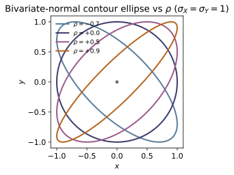
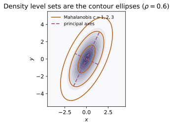
Example problems
~MA-04Write the bivariate normal density at $(x,y)=(1.5,3.0)$ two ways: (i) the explicit five-parameter form $f=\frac{1}{2\pi\sigma_X\sigma_Y\sqrt{1-\rho^2}} e^{-z/2(1-\rho^2)}$ with $z=u^2-2\rho uv+v^2$, and (ii) the matrix form $\frac{1}{2\pi\sqrt{\det\Sigma}}e^{-\frac12 w^\top\Sigma^{-1}w}$. Using $u=v=0.5$, get $z=0.25-2(0.6)(0.25)+0.25=0.2$, exponent $-z/2(1-\rho^2)= -0.2/1.28=-0.15625$, prefactor $1/(2\pi\cdot1\cdot2\cdot0.8)=0.099472$, so $f=0.099472\,e^{-0.15625}$. Show the matrix form gives the same number because $w^\top\Sigma^{-1}w=z/(1-\rho^2)=0.3125$ and $\det\Sigma=2.56$. Check: bivariate_normal_pdf(1.5,3.0,1,2,1,2,0.6) $=0.08508277$ equals bivariate_normal_pdf_cov(1.5,3.0,(1,2),covariance_matrix(1,2,0.6)); and mahalanobis_sq(1.5,3.0,1,2,1,2,0.6) $=0.3125$.
With $u=(1.5-1)/1=0.5$ and $v=(3-2)/2=0.5$, the explicit form needs
with prefactor $\tfrac{1}{2\pi\sigma_X\sigma_Y\sqrt{1-\rho^2}}=\tfrac{1}{2\pi(1)(2)(0.8)}=0.099472$, so $f=0.099472\,e^{-0.15625}=0.08508$. The matrix form has the same exponent because $w^\top\Sigma^{-1}w=z/(1-\rho^2)=0.2/0.64=0.3125$, and the same prefactor because $2\pi\sqrt{\det\Sigma}=2\pi\sqrt{2.56}=3.2\pi$ equals $2\pi\sigma_X\sigma_Y\sqrt{1-\rho^2}=3.2\pi$. Hence bivariate_normal_pdf(1.5,3.0,1,2,1,2,0.6) $=$ bivariate_normal_pdf_cov(...) $=0.08508277$, with mahalanobis_sq(...) $=0.3125$.
~MA-04Show $\det\Sigma=\sigma_X^2\sigma_Y^2(1-\rho^2)$ and that, by Sylvester's criterion, $\Sigma$ is positive-definite iff its leading minors $\sigma_X^2$ and $\det\Sigma$ are both positive — i.e. iff $|\rho|<1$. Conclude the density exists exactly on $-1<\rho<1$, and that at $\rho=\pm1$ the matrix is singular and the mass collapses onto a line (degenerate case). Verify you can read $\rho$ back off $\Sigma$ as $\Sigma_{xy}/(\sigma_X\sigma_Y)$. Check: with S=covariance_matrix(1,2,0.6), numpy.linalg.det(S) $=2.56$, correlation(S) $=0.6$, is_positive_definite(S) $=$ True; while is_positive_definite(covariance_matrix(1,2,1.0)) $=$ False.
Expanding, $\det\Sigma=\sigma_X^2\sigma_Y^2-(\rho\sigma_X\sigma_Y)^2=\sigma_X^2\sigma_Y^2(1-\rho^2)$. Sylvester's criterion makes $\Sigma$ positive-definite iff both leading minors are positive:
So the density — which needs $\Sigma^{-1}$ and $\sqrt{\det\Sigma}$ — exists exactly on $-1<\rho<1$; at $\rho=\pm1$ the matrix is singular and the mass collapses onto the line $v=\pm u$. The correlation is read back as $\Sigma_{xy}/(\sigma_X\sigma_Y)=\rho$. With S=covariance_matrix(1,2,0.6): numpy.linalg.det(S) $=2.56$, correlation(S) $=0.6$, is_positive_definite(S) $=$ True, while is_positive_definite(covariance_matrix(1,2,1.0)) $=$ False.
~ST-12By completing the square $z=(v-\rho u)^2+(1-\rho^2)u^2$ and integrating out $y$, show $f_X(x)=\frac{1}{\sigma_X\sqrt{2\pi}}e^{-(x-\mu_X)^2/2\sigma_X^2}$, i.e. $X\sim N(1,1)$. Evaluate at the mean $x=\mu_X=1$: $f_X(1)=1/\sqrt{2\pi}=0.398942$. (The inner $y$-integral is a normal density and equals $1$.) Check: marginal_pdf_x(1,1,1) $=0.398942$, and the numerical integral _integrate(lambda y: bivariate_normal_pdf(1,y,1,2,1,2,0.6), -14,18) $\approx0.398942$ (this is exactly the assertion in test_marginal_x_is_normal).
Complete the square in $v$ inside the exponent, $z=u^2-2\rho uv+v^2=(v-\rho u)^2+(1-\rho^2)u^2$. The $(1-\rho^2)u^2$ term cancels the $1/(1-\rho^2)$ and leaves $e^{-u^2/2}$; what remains is a normal density in $y$ that integrates to $1$:
so $X\sim N(\mu_X,\sigma_X^2)=N(1,1)$. At the mean, $f_X(1)=1/\sqrt{2\pi}=0.398942$. This is marginal_pdf_x(1,1,1) $=0.398942$, equal to the direct numerical integral of the joint over $y$.
~ST-14Divide the joint by $f_X$ to show $Y\mid X=x\sim N\!\big(\mu_Y+\rho\frac{\sigma_Y} {\sigma_X}(x-\mu_X),\ \sigma_Y^2(1-\rho^2)\big)$. For our numbers the conditional mean is $2+1.2\,(x-1)$ (slope $\rho\sigma_Y/\sigma_X=1.2$) and the conditional variance is $4(1-0.36)=2.56$, independent of $x$. Evaluate at $x=1.5$ and at $x=3.0$. Check: conditional_params(1.5,1,2,1,2,0.6) $=(2.6,\,2.56)$ and conditional_params(3.0,1,2,1,2,0.6) $=(4.4,\,2.56)$ — same variance, mean on the line.
Dividing the joint by $f_X$ removes the $e^{-u^2/2}$ factor found in P3 and leaves precisely the completed square as a normal density in $y$:
For our numbers the mean is $2+0.6\cdot\tfrac21(x-1)=2+1.2(x-1)$ (slope $\rho\sigma_Y/\sigma_X=1.2$) and the variance is $4(1-0.36)=2.56$, the same for every $x$ (homoscedastic). Evaluating: at $x=1.5$, mean $=2+1.2(0.5)=2.6$; at $x=3.0$, mean $=2+1.2(2)=4.4$. Hence conditional_params(1.5,1,2,1,2,0.6) $=(2.6,2.56)$ and conditional_params(3.0,1,2,1,2,0.6) $=(4.4,2.56)$.
~ST-14Standardize: if $X$ sits $k$ standard deviations above its mean, show the predicted $Y$ sits only $\rho k$ standard deviations above its mean, since $\frac{E[Y\mid X=x]-\mu_Y}{\sigma_Y}=\rho\,\frac{x-\mu_X}{\sigma_X}$. Take $x=\mu_X+2\sigma_X=3$ (a $+2\sigma$ outlier in $X$): the predicted $Y$ is only $\rho\cdot2=1.2$ standard deviations above $\mu_Y$ — regression to the mean. Also note the conditional variance is the marginal variance shrunk by $1-\rho^2$, so $X$ explains a fraction $\rho^2=0.36$ of $Y$'s variance. Check: conditional_params(3.0,1,2,1,2,0.6)[0] $=4.4$, and $(4.4-\mu_Y)/\sigma_Y= (4.4-2)/2=1.2=\rho\cdot2$.
Subtract $\mu_Y$ and divide by $\sigma_Y$ in the P4 regression line:
so an $x$ sitting $k$ standard deviations above $\mu_X$ predicts a $Y$ only $\rho k$ standard deviations above $\mu_Y$. Taking $x=\mu_X+2\sigma_X=3$ (a $+2\sigma$ outlier), the predicted $Y$ is $\rho\cdot2=1.2$ standard deviations above $\mu_Y$ — pulled toward the mean since $|\rho|<1$. Equivalently the conditional variance is the marginal $\sigma_Y^2$ shrunk by $1-\rho^2=0.64$, so $X$ explains the fraction $\rho^2=0.36$ of $Y$'s variance. Numerically conditional_params(3.0,1,2,1,2,0.6)[0] $=4.4$, and $(4.4-2)/2=1.2=\rho\cdot2$.
~ST-14For a general joint distribution $\mathrm{Cov}=0$ does not imply independence. Show that for the bivariate normal it does: setting $\rho=0$ kills the cross term and $\sqrt{1-\rho^2}=1$, so $f(x,y)=f_X(x)f_Y(y)$. Verify at $(x,y)=(0.5,3.0)$ that the $\rho=0$ joint equals the product of the marginals $N(1,1)$ and $N(2,4)$. Check: bivariate_normal_pdf(0.5,3.0,1,2,1,2,0.0) $=0.06197500$ equals marginal_pdf_x(0.5,1,1)*marginal_pdf_y(3.0,2,2) $=0.06197500$; with $\rho=0.6$ the joint no longer equals that product.
Setting $\rho=0$ kills the cross term and makes $\sqrt{1-\rho^2}=1$, so the quadratic separates, $z=u^2+v^2$, and the density splits into its marginals:
which is independence. This is special to the Gaussian: it is fixed by its first two moments, so removing the only off-diagonal second moment removes all dependence (unlike the ~ST-14 counterexample). At $(0.5,3.0)$ the $\rho=0$ joint equals $f_X(0.5)f_Y(3.0)$ with $X\sim N(1,1),\,Y\sim N(2,4)$, so bivariate_normal_pdf(0.5,3.0,1,2,1,2,0.0) $=$ marginal_pdf_x(0.5,1,1)*marginal_pdf_y(3.0,2,2) $=0.06197500$, whereas with $\rho=0.6$ it no longer factors.
~ST-06The joint mgf is $M(t_1,t_2)=\exp\!\big(\mu_X t_1+\mu_Y t_2+\tfrac12(\sigma_X^2 t_1^2 +2\rho\sigma_X\sigma_Y t_1t_2+\sigma_Y^2 t_2^2)\big)$. Confirm $M(0,0)=1$, then show $\partial_{t_1}M|_0=\mu_X$, $\partial^2_{t_1}M|_0-\mu_X^2=\sigma_X^2$, and the mixed partial $\partial_{t_1}\partial_{t_2}M|_0-\mu_X\mu_Y=\mathrm{Cov}(X,Y)=\rho\sigma_X \sigma_Y=1.2$. As a numeric anchor evaluate the exponent at $t_1=t_2=0.1$: $0.1+0.2+\tfrac12(0.01+0.024+0.04)=0.337$, so $M=e^{0.337}=1.40074$. Check: mgf(0,0,1,2,1,2,0.6) $=1.0$ and mgf(0.1,0.1,1,2,1,2,0.6) $=1.400739$; the finite-difference moment/covariance identities are asserted in test_mgf_derivatives_give_moments and test_mgf_mixed_partial_is_covariance.
At the origin every term in the exponent vanishes, so $M(0,0)=e^0=1$. Differentiating $M=\exp(\mu_Xt_1+\mu_Yt_2+\tfrac12(\sigma_X^2t_1^2+2\rho\sigma_X\sigma_Yt_1t_2+\sigma_Y^2t_2^2))$ brings down the bracketed factor; evaluated at $0$,
the last because the mixed partial produces $\mu_X\mu_Y+\rho\sigma_X\sigma_Y$. As a numeric anchor, at $t_1=t_2=0.1$ the exponent is $0.1+0.2+\tfrac12(0.01+0.024+0.04)=0.337$, so $M=e^{0.337}=1.40074$. These give mgf(0,0,1,2,1,2,0.6) $=1.0$ and mgf(0.1,0.1,1,2,1,2,0.6) $=1.400739$, with the derivative identities confirmed by finite differences.
~MA-04The constant-density curves solve $w^\top\Sigma^{-1}w=c^2$. Diagonalize $\Sigma=V\Lambda V^\top$; the ellipse has semi-axes $c\sqrt{\lambda_1}, c\sqrt{\lambda_2}$ along the eigenvectors, so its area is $\pi c^2\sqrt{\lambda_1 \lambda_2}=\pi c^2\sqrt{\det\Sigma}$. For our $\Sigma$ the eigenvalues are $\lambda\approx\{0.579,4.421\}$; the $c=1$ ellipse has semi-axes $\approx\{0.761,2.103\}$ tilted $\approx70.7^\circ$ from the $x$-axis, with $a\,b=\sqrt{\det\Sigma}=\sqrt{2.56}=1.6$. Confirm every point on it has Mahalanobis distance squared equal to $1$. Check: ellipse_axes(covariance_matrix(1,2,0.6),1.0) $\approx(2.1026,\,0.7610,\,1.2334\,\text{rad})$ with product $2.1026\times0.7610=1.6$; and for points from ellipse_points(1,2,1,2,0.6,c=1), mahalanobis_sq(...) $=1.0$ at each (test_contour_ellipse_level_set).
A constant-density curve is a level set $w^\top\Sigma^{-1}w=c^2$. Diagonalizing $\Sigma=V\Lambda V^\top$ aligns it with the eigenvectors, where it reads $(w_1')^2/\lambda_1+(w_2')^2/\lambda_2=c^2$ — an ellipse with semi-axes $c\sqrt{\lambda_1},c\sqrt{\lambda_2}$, hence area
For $\Sigma=\left(\begin{smallmatrix}1&1.2\\1.2&4\end{smallmatrix}\right)$ the eigenvalues are $\lambda=2.5\pm\sqrt{1.5^2+1.2^2}=\{4.421,0.579\}$, so the $c=1$ ellipse has semi-axes $\{2.1026,0.7610\}$ with product $2.1026\times0.7610=1.6=\sqrt{2.56}=\sqrt{\det\Sigma}$, tilted $\approx70.7^\circ$ along the major eigenvector; every point on it has $w^\top\Sigma^{-1}w=1$ by definition. This is ellipse_axes(covariance_matrix(1,2,0.6),1.0) $\approx(2.1026,0.7610,1.2334)$ with axis product $1.6$, and mahalanobis_sq(...) $=1.0$ at each ellipse_points.
Run the worked code: cd ST/ST-15_bivariate_normal/code && python3 bivariate_normal.py
ST-16 — Transformations of Random Variables
Probability Theory trunk · ST/ST-16_transformations · open in the Teaching Network
Three tools turn the law of $X$ into the law of $Y=g(X)$.
1. The cdf (distribution-function) method. Always works: build the cdf of $Y$ by integrating $f_X$ over the event $\{x:g(x)\le y\}$, $F_Y(y)=P(g(X)\le y)$, then differentiate, $f_Y=F_Y'$. Code: cdf_of_Y, pdf_of_Y_cdf_method. Worked: $X\sim U(0,1),\,Y=X^2\Rightarrow F_Y=\sqrt y$.
2. The change-of-variables formula for a one-to-one (monotone) $g$, the differentiated cdf method: $$f_Y(y)=f_X\!\big(g^{-1}(y)\big)\,\Big|\tfrac{dx}{dy}\Big|.$$ The factor $|dx/dy|$ is the local stretch of the transform. Code: change_of_variables_1d. Worked: $Y=-\ln X/\lambda$ on $U(0,1)$ gives $\mathrm{Exp}(\lambda)$ (inverse-transform sampling).
3. The 2-D Jacobian transformation (L23): for $(U,V)=T(X,Y)$ one-to-one, $$f_{UV}(u,v)=f_{XY}\!\big(x(u,v),y(u,v)\big)\,\big|J\big|,\qquad J=\det\frac{\partial(x,y)}{\partial(u,v)}\quad(\text{Jacobian, see ~MA-03}).$$ Code: jacobian_det_2d, jacobian_transform_2d.
Sums of independent variables (L23–L24) are the transform $Z=X+Y$, whose density is the convolution $$f_{X+Y}(z)=\int_{-\infty}^{\infty} f_X(t)\,f_Y(z-t)\,dt,$$ the probabilistic mirror of the Fourier convolution theorem (~MA-09; the same sum becomes a product of mgfs in ~ST-17). Code: convolution. Two canonical results: $U(0,1)+U(0,1)$ is triangular, and a sum of $n$ i.i.d. $\mathrm{Exp}(\lambda)$ is Gamma$(n,\lambda)$ (Erlang). Finally the probability integral transform $F_X(X)\sim U(0,1)$ — the change-of-variable identity in disguise, the basis of random-number generation (probability_integral_transform_pdf).
Key equations
Figures
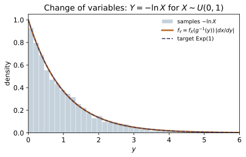
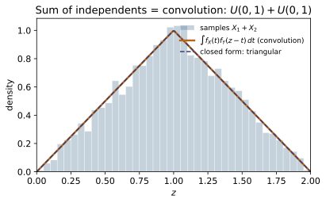
Example problems
Let $X\sim U(0,1)$ and $Y=X^2$. Using the distribution-function method, find the inverse image $\{x:x^2\le y\}$ for $0\le y\le1$, integrate $f_X$ over it to get $F_Y(y)=\sqrt y$, then differentiate to $f_Y(y)=\tfrac{1}{2\sqrt y}$. Note the density diverges at $y\to0^+$ yet $\int_0^1\tfrac{1}{2\sqrt y}\,dy=1$. Check: cdf_of_Y(uniform_pdf, lambda x:xx, 0.64, 0.0, 1.0) $=0.8=\sqrt{0.64}$ and pdf_of_Y_cdf_method(uniform_pdf, lambda x:xx, 0.25, 0.0, 1.0) $=1.0=\tfrac{1}{2\sqrt{0.25}}$.
Since $X\in(0,1)$ and $x\mapsto x^2$ is increasing there, the inverse image of $\{Y\le y\}$ for $0\le y\le1$ is $\{0\le X\le\sqrt y\}$. Integrating the flat density $f_X=1$ over it,
The density diverges as $y\to0^+$ (squaring crowds mass toward $0$) yet stays a valid pdf: $\int_0^1\tfrac{1}{2\sqrt y}\,dy=[\sqrt y]_0^1=1$. Numerically cdf_of_Y(uniform_pdf, lambda x:xx, 0.64, 0.0, 1.0) $=0.8=\sqrt{0.64}$ and pdf_of_Y_cdf_method(uniform_pdf, lambda x:xx, 0.25, 0.0, 1.0) $=1.0=\tfrac{1}{2\sqrt{0.25}}$.
Let $X\sim U(0,1)$ and $Y=-\tfrac1\lambda\ln X$ with $\lambda=2$. Show $g$ is decreasing with $g^{-1}(y)=e^{-\lambda y}$ and $dx/dy=-\lambda e^{-\lambda y}$, so the change-of-variables formula $f_Y(y)=f_X(g^{-1}(y))\,|dx/dy|=\lambda e^{-\lambda y}$ gives $Y\sim\mathrm{Exp}(\lambda)$. Confirm this equals $\tfrac{d}{dy}F_Y$ with $F_Y(y)=1-e^{-\lambda y}$. Check: change_of_variables_1d(uniform_pdf, lambda y: math.exp(-2y), lambda y: -2math.exp(-2*y), 0.5) $=0.73576=$ exp_pdf(0.5, 2.0).
Inverting $y=-\tfrac1\lambda\ln x$ gives $x=g^{-1}(y)=e^{-\lambda y}$, a decreasing map with $dx/dy=-\lambda e^{-\lambda y}$. Since $f_X\equiv1$ on $(0,1)$, the change-of-variables formula gives
so $Y\sim\mathrm{Exp}(\lambda)$. This agrees with differentiating the cdf directly, $\tfrac{d}{dy}(1-e^{-\lambda y})=\lambda e^{-\lambda y}$. At $\lambda=2,\ y=0.5$ it is $2e^{-1}=0.73576$, matching change_of_variables_1d(...) $=$ exp_pdf(0.5, 2.0).
~ST-17Let $Z\sim N(0,1)$ and $Y=Z^2$. Because $g(z)=z^2$ is two-to-one, the event $\{Z^2\le y\}=\{-\sqrt y\le Z\le\sqrt y\}$; show $F_Y(y)=2\Phi(\sqrt y)-1$ and $f_Y(y)=\dfrac{1}{\sqrt{2\pi y}}\,e^{-y/2}$, i.e. $Y\sim\chi^2_1=\mathrm{Gamma}(\tfrac12,\tfrac12)$ — the first member of the sampling-distribution family of ~ST-17. Check: pdf_of_Y_cdf_method(normal_pdf, lambda x:x*x, 1.0, -12.0, 12.0) $\approx0.2410$, matching gamma_pdf(1.0, 0.5, 0.5) $=0.24197=e^{-1/2}/\sqrt{2\pi}$.
Because $g(z)=z^2$ is two-to-one, $\{Z^2\le y\}=\{-\sqrt y\le Z\le\sqrt y\}$, so for $y>0$,
The two-to-one map supplied the factor $2$ and the chain rule the $\tfrac1{2\sqrt y}$. This is $\chi^2_1=\mathrm{Gamma}(\tfrac12,\tfrac12)$, whose density $\tfrac{(1/2)^{1/2}}{\Gamma(1/2)}y^{-1/2}e^{-y/2}=\tfrac{1}{\sqrt{2\pi y}}e^{-y/2}$ matches (using $\Gamma(\tfrac12)=\sqrt\pi$). At $y=1$ both equal $e^{-1/2}/\sqrt{2\pi}=0.24197$, so pdf_of_Y_cdf_method(normal_pdf, lambda x:x*x, 1.0, -12.0, 12.0) $\approx0.2410$ matches gamma_pdf(1.0, 0.5, 0.5) $=0.24197$.
Let $X,Y\sim U(0,1)$ independent and $Z=X+Y$. From the convolution $f_Z(z)=\int f_X(t)f_Y(z-t)\,dt$, show the integrand is $1$ only on the overlap of $[0,1]$ and $[z-1,z]$, whose length gives the triangular density: $f_Z(z)=z$ on $[0,1]$, $2-z$ on $[1,2]$, peaking at $z=1$. Check: convolution(uniform_pdf, uniform_pdf, 0.7, 0.0, 1.0) $=0.7$ and convolution(uniform_pdf, uniform_pdf, 1.5, 0.0, 1.0) $=0.5$, equal to triangular_pdf(0.7) and triangular_pdf(1.5).
The convolution integrand $f_X(t)f_Y(z-t)$ equals $1$ exactly where both $0\le t\le1$ and $0\le z-t\le1$, i.e. on $t\in[\max(0,z-1),\min(1,z)]$; the density is the length of that overlap,
This is the triangular density on $[0,2]$, rising then falling with a peak of height $1$ at $z=1$ (two flat laws add to a tent — the first hint of the CLT). Hence convolution(uniform_pdf, uniform_pdf, 0.7, 0.0, 1.0) $=0.7$ and (..., 1.5, ...) $=0.5$, equal to triangular_pdf(0.7) and triangular_pdf(1.5).
Let $X_1,\dots,X_n\sim\mathrm{Exp}(\lambda)$ independent. Convolve two: $f_{X_1+X_2}(z)=\int_0^z\lambda e^{-\lambda t}\lambda e^{-\lambda(z-t)}\,dt =\lambda^2 z\,e^{-\lambda z}=\mathrm{Gamma}(2,\lambda)$. By induction the sum of $n$ is $\mathrm{Gamma}(n,\lambda)=\tfrac{\lambda^n}{(n-1)!}z^{n-1}e^{-\lambda z}$ — the Erlang waiting time for the $n$-th Poisson event. Check: with $\lambda=1$, convolution(exp_pdf, exp_pdf, 2.0, 0.0, 2.0) $=0.27067=$ gamma_pdf(2.0, 2, 1); convolving that Gamma(2) once more, convolution(lambda z: gamma_pdf(z,2,1), exp_pdf, 3.0, 0.0, 3.0) $=0.22404=$ gamma_pdf(3.0, 3, 1).
Convolve two exponentials; the $e^{-\lambda z}$ factors out and the overlap integral is just the length $z$,
Convolving once more multiplies by another $\lambda e^{-\lambda t}$ and raises the polynomial degree, so by induction the sum of $n$ is $\mathrm{Gamma}(n,\lambda)=\tfrac{\lambda^n}{(n-1)!}z^{n-1}e^{-\lambda z}$ — the Erlang waiting time for the $n$-th Poisson event. With $\lambda=1$, convolution(exp_pdf, exp_pdf, 2.0, 0.0, 2.0) $=0.27067=$ gamma_pdf(2.0, 2, 1), and convolving that with an exponential at $z=3$ gives 0.22404 = gamma_pdf(3.0, 3, 1).
~MA-03Let $X,Y\sim\mathrm{Exp}(1)$ independent, $U=X+Y$, $V=\dfrac{X}{X+Y}$. Invert to $x=uv,\ y=u(1-v)$, compute the Jacobian $J=\det\!\begin{pmatrix}v&u\\1-v&-u\end{pmatrix}=-u$, and show $f_{UV}(u,v)=e^{-uv}e^{-u(1-v)}\,|{-u}|=u\,e^{-u}$, which factorizes into $\mathrm{Gamma}(2,1)$ for $U$ and $U(0,1)$ for $V$ — so the total and the ratio are independent. Check: with fXY = lambda x,y: float(exp_pdf(x,1))float(exp_pdf(y,1)) and inv = lambda u,v: (uv, u(1-v)), jacobian_det_2d(inv, 2.0, 0.7) $=-2.0$ and jacobian_transform_2d(fXY, inv, 2.0, 0.7) $=0.27067=2e^{-2}=$ gamma_pdf(2.0,2,1)uniform_pdf(0.7).
Inverting $(U,V)=(X+Y,\ \tfrac{X}{X+Y})$ gives $x=uv,\ y=u(1-v)$, with Jacobian of the inverse map
With $f_{XY}=e^{-x}e^{-y}$ the transform rule gives
which factorizes with no $v$-dependence, so the total $U\sim\mathrm{Gamma}(2,1)$ and the ratio $V\sim U(0,1)$ are independent. At $(u,v)=(2.0,0.7)$, jacobian_det_2d(inv, 2.0, 0.7) $=-2.0$ and jacobian_transform_2d(fXY, inv, 2.0, 0.7) $=2e^{-2}=0.27067=$ gamma_pdf(2.0,2,1)*uniform_pdf(0.7).
(a) Show that for any continuous $X$ with cdf $F_X$, the variable $U=F_X(X)$ has density $f_U(u)=f_X(F^{-1}(u))\,|dF^{-1}/du|=1$ on $(0,1)$, i.e. $U\sim U(0,1)$. (b) Run it backwards: if $U\sim U(0,1)$ then $X=F_X^{-1}(U)$ has cdf $F_X$, so drawing $X=-\tfrac1\lambda\ln(1-U)$ samples $\mathrm{Exp}(\lambda)$. Check: (a) probability_integral_transform_pdf(lambda x: exp_pdf(x,2.0), lambda u: exp_quantile(u,2.0), 0.6) $=1.0$ and the same for the linear density, probability_integral_transform_pdf(linear_pdf, linear_quantile, 0.6) $=1.0$. (b) exp_cdf(exp_quantile(0.8, 2.0), 2.0) $=0.8$ and the median exp_quantile(0.5, 2.0) $=0.34657=\ln 2/2$.
(a) With $U=F_X(X)$ the inverse is the quantile $F_X^{-1}$, and since $\tfrac{d}{du}F_X^{-1}(u)=1/F_X'(x)=1/f_X(x)$ at $x=F_X^{-1}(u)$, change of variables gives
so $U\sim U(0,1)$ for any continuous $X$. (b) Run it backwards: if $U\sim U(0,1)$ then $X=F_X^{-1}(U)$ has $P(X\le x)=P(U\le F_X(x))=F_X(x)$; for the exponential $F_X^{-1}(u)=-\tfrac1\lambda\ln(1-u)$, so $X=-\tfrac1\lambda\ln(1-U)$ samples $\mathrm{Exp}(\lambda)$. Hence (a) probability_integral_transform_pdf(...) $=1.0$ for both the exponential and the linear density, and (b) exp_cdf(exp_quantile(0.8, 2.0), 2.0) $=0.8$ with median exp_quantile(0.5, 2.0) $=\ln2/2=0.34657$.
Run the worked code: cd ST/ST-16_transformations/code && python3 transformations.py
ST-17 — The MGF Technique & Normal Sampling Distributions
Probability Theory trunk · ST/ST-17_mgf_technique_sampling · open in the Teaching Network
Two lessons, one engine — the product rule $M_{\sum X_i}(t)=\prod_i M_{X_i}(t)$ for independent variables, made decisive by uniqueness (~ST-06).
(A) The mgf technique (L25). To find the law of a sum, multiply mgfs and recognize the answer. Three closure facts fall straight out:
- Sum of independent normals is normal. $X_i\sim N(\mu_i,\sigma_i^2)$ gives $\prod e^{\mu_i t+\frac12\sigma_i^2t^2}=e^{(\sum\mu_i)t+\frac12(\sum\sigma_i^2)t^2}$, so $\sum X_i\sim N(\sum\mu_i,\sum\sigma_i^2)$; more generally $\sum a_iX_i\sim N(\sum a_i\mu_i,\sum a_i^2\sigma_i^2)$ — even a difference $X_1-X_2\sim N(\mu_1-\mu_2,\sigma_1^2+\sigma_2^2)$ adds the variances. - Sum of independent gammas (common scale) adds shapes. $(1-\theta t)^{-\alpha_i}$ multiply to $(1-\theta t)^{-\sum\alpha_i}$, so $\sum\mathrm{Gamma}(\alpha_i,\theta) =\mathrm{Gamma}(\sum\alpha_i,\theta)$. - Sum of independent chi-squares adds degrees of freedom. $(1-2t)^{-r_i/2}$ multiply to $(1-2t)^{-\sum r_i/2}$. With $Z^2\sim\chi^2_1$ (~ST-16), the sum $\sum_{i=1}^n Z_i^2\sim\chi^2_n$.
(B) Random functions of a normal sample (L26). From $X_1,\dots,X_n$ iid $N(\mu,\sigma^2)$:
- the sample mean $\bar X=\frac1n\sum X_i\sim N(\mu,\sigma^2/n)$ (a linear combination with $a_i=1/n$), so the standardized mean $Z=(\bar X-\mu)/(\sigma/\sqrt n)$ is exactly $N(0,1)$; - the sample variance obeys $(n-1)S^2/\sigma^2\sim\chi^2_{n-1}$, with $\bar X$ and $S^2$ independent (one degree of freedom is spent estimating $\mu$); - Student's $t$ $T=Z/\sqrt{V/r}$ ($Z\sim N(0,1)$, $V\sim\chi^2_r$ independent) has the density below and $\to N(0,1)$ as $r\to\infty$; in particular $(\bar X-\mu)/(S/\sqrt n)\sim t_{n-1}$; - Snedecor's $F$ $F=(U/r_1)/(V/r_2)$ ($U\sim\chi^2_{r_1}$, $V\sim\chi^2_{r_2}$ independent) is the ratio of two scaled chi-squares; and $T^2\sim F_{1,r}$.
The closed-form densities, built from the gamma/Beta functions, are $$f_T(t)=\frac{\Gamma(\frac{r+1}{2})}{\sqrt{r\pi}\,\Gamma(\frac r2)} \Big(1+\frac{t^2}{r}\Big)^{-\frac{r+1}{2}},\qquad f_F(x)=\frac{(r_1/r_2)^{r_1/2}}{B(\frac{r_1}2,\frac{r_2}2)}\, \frac{x^{r_1/2-1}}{\big(1+\frac{r_1}{r_2}x\big)^{(r_1+r_2)/2}}\ (x>0).$$
Key equations
Figures
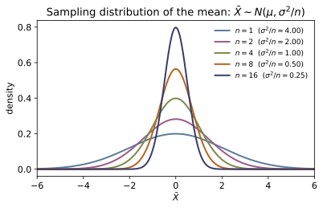
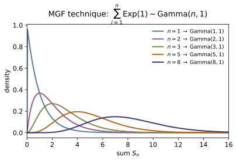
Example problems
~ST-12Let $X_1\sim N(1,4)$, $X_2\sim N(-0.5,2.25)$, $X_3\sim N(2,1)$ be independent. Use $M_{\sum X_i}(t)=\prod_iM_{X_i}(t)$ to show $S=X_1+X_2+X_3$ is normal, and find its mean and variance. Why does the product of three exponential-quadratics stay an exponential-quadratic? Check: sum_of_normals_via_mgf([1,-0.5,2],[4,2.25,1]) $=(2.5,7.25)$; product_of_normal_mgfs(0.3,[1,-0.5,2],[4,2.25,1]) $=2.9336577$ equals normal_mgf(0.3, 2.5, math.sqrt(7.25)).
Each factor is $M_{X_i}(t)=\exp(\mu_it+\tfrac12\sigma_i^2t^2)$, so the product adds the exponents:
A sum of linear-plus-quadratic exponents is again linear-plus-quadratic, i.e. a normal mgf, with $\sum\mu_i=1-0.5+2=2.5$ and $\sum\sigma_i^2=4+2.25+1=7.25$. By uniqueness $S\sim N(2.5,7.25)$. Numerically both the assembled product and the single recognized mgf give $2.9336577$ at $t=0.3$.
Heights of men and women are modeled $X_1\sim N(5,4)$, $X_2\sim N(3,9)$ (independent, some units). Find the distribution of the difference $D=X_1-X_2$. Students often expect $\operatorname{Var}(D)=4-9<0$ — explain why the correct answer adds the variances. Check: linear_combination_of_normals([1,-1],[5,3],[4,9]) $=(2.0, 13.0)$.
$D=1\cdot X_1+(-1)\cdot X_2$ is the linear combination of §2 of the notes with $a_1=1,a_2=-1$, so
The coefficient $-1$ enters the variance squared, $(-1)^2=1$, so subtracting a variable still injects its variability — uncertainties compound, never cancel. linear_combination_of_normals([1,-1],[5,3],[4,9])$=(2.0,13.0)$.
~ST-11Independent $V_1\sim\chi^2_3$, $V_2\sim\chi^2_5$, $V_3\sim\chi^2_2$. Show $V_1+V_2+V_3\sim\chi^2_{10}$ by multiplying mgfs, and explain how this is the same fact as "a sum of $n$ independent squared standard normals is $\chi^2_n$." Check: sum_of_chisquares([3,5,2]) $=10.0$; product_of_chi2_mgfs(0.2,[3,5,2]) equals chi2_mgf(0.2,10).
With $M_{V_i}(t)=(1-2t)^{-r_i/2}$,
the mgf of $\chi^2_{10}$; degrees of freedom add. Since each $\chi^2_{r_i}$ is itself a sum of $r_i$ squared standard normals (notes §4), the combined variable is a sum of $3+5+2=10$ such squares, $\sum_{i=1}^{10}Z_i^2\sim\chi^2_{10}$ — identical content. This is the $\theta=2$ case of the gamma rule $\sum\mathrm{Gamma}(\alpha_i, \theta)=\mathrm{Gamma}(\sum\alpha_i,\theta)$. sum_of_chisquares([3,5,2])$=10.0$ and the mgf product matches chi2_mgf(0.2,10).
~ST-16For $Z\sim N(0,1)$, derive the density of $W=Z^2$ by the change of variables $w=z^2$ (two branches), and identify it as $\chi^2_1$. Confirm the special case $\chi^2_2$ is the exponential of mean $2$. Check: square_of_standard_normal_pdf(2.0) $=0.103777=$ chi2_pdf(2.0,1); and chi2_pdf(2.0,2) $=0.18394=\tfrac12e^{-1}$.
The map $w=z^2$ has the two preimages $z=\pm\sqrt w$, each contributing $|dz/dw|=\frac{1}{2\sqrt w}$, so for $w>0$
This is the gamma density with $\alpha=\tfrac12,\theta=2$ (using $\Gamma(\tfrac12) =\sqrt\pi$), i.e. $\chi^2_1$. Adding a second independent square gives $\chi^2_2= \mathrm{Gamma}(1,2)$, the exponential of mean $2$: $f(w)=\tfrac12e^{-w/2}$. Hence square_of_standard_normal_pdf(2.0)$=\varphi(\sqrt2)/\sqrt2=0.103777=$chi2_pdf(2.0,1), and chi2_pdf(2.0,2)$=\tfrac12e^{-1}=0.18394$.
A normal population has $\mu=100$, $\sigma^2=225$ (so $\sigma=15$). A random sample of $n=25$ is drawn. Find the distribution of $\bar X$ and its standard error, and show the standardized mean $Z=(\bar X-\mu)/(\sigma/\sqrt n)$ is exactly $N(0,1)$. Check: sampling_dist_of_mean(100,225,25) $=(100.0, 9.0)$ (so SE $=\sqrt9=3$); standardized_mean_mgf(0.7,100,225,25) $=1.2776213=e^{0.7^2/2}$.
$\bar X=\frac{1}{25}\sum X_i$ is the linear combination with all $a_i=1/25$, so $\bar X\sim N\big(\mu,\sigma^2/n\big)=N(100,\,225/25)=N(100,9)$; the standard error is $\sigma/\sqrt n=15/5=3$. Standardizing is the affine map $Z=a\bar X+b$ with $a=1/3,b=-100/3$, whose mgf is
the standard-normal mgf — true for any $\mu,\sigma,n$ when the population is normal. sampling_dist_of_mean(100,225,25)$=(100.0,9.0)$ and standardized_mean_mgf(0.7,100,225,25)$=1.2776213=e^{0.245}$.
Define $T=Z/\sqrt{V/r}$ with $Z\sim N(0,1)$, $V\sim\chi^2_r$ independent. State the density, give $E[T]$ and $\operatorname{Var}[T]$, and explain why estimating $\sigma$ by $S$ turns the standardized mean into $t_{n-1}$. Why is the $t_1$ (Cauchy) so pathological? Check: students_t_pdf(0.0,3) $=0.367553$; students_t_var(5) $=1.6667=5/3$; students_t_var(2) $=\infty$; the $t_1$ peak students_t_pdf(0.0,1) $=0.31831=1/\pi$.
The density is
symmetric about $0$ with $E[T]=0$ ($r>1$) and $\operatorname{Var}[T]=r/(r-2)$ ($r>2$). For the sample, write the $S$-standardized mean over the $\sigma$-standardized one:
with $Z\sim N(0,1)$, $V\sim\chi^2_{n-1}$ independent — $\sigma$ cancels. The tails decay only as $|t|^{-(r+1)}$, so low-$r$ $t$'s are heavy: at $r=2$ the variance is already infinite, and the $t_1=$ Cauchy $f(t)=\frac{1}{\pi(1+t^2)}$ has no mean. Checks: students_t_pdf(0.0,3)$=0.367553$, students_t_var(5)$=5/3=1.6667$, students_t_var(2)$=\infty$, and the Cauchy peak students_t_pdf(0.0,1)$=1/\pi =0.31831$.
Show $f_T(t)\to\varphi(t)$ as $r\to\infty$ by taking the limits of its two pieces, and confirm numerically that $t_{2000}$ is essentially standard normal. Why does $\operatorname{Var}(t_r)=r/(r-2)\to1$? Check: students_t_pdf(1.0,2000) $=0.241910$ vs standard_normal_pdf(1.0) $=0.241971$; students_t_var(1000) $<$ students_t_var(10).
In $f_T$, the kernel $\big(1+\tfrac{t^2}{r}\big)^{-(r+1)/2}\to e^{-t^2/2}$ (since $(1+a/r)^{-r/2}\to e^{-a/2}$), and the constant $\Gamma(\tfrac{r+1}{2})/[\sqrt{r\pi}\,\Gamma(\tfrac r2)]\to1/\sqrt{2\pi}$ (Stirling's ratio $\Gamma(\tfrac{r+1}{2})/\Gamma(\tfrac r2)\sim\sqrt{r/2}$). Their product is $\varphi(t)=\frac{1}{\sqrt{2\pi}}e^{-t^2/2}$. As $r\to\infty$ the sample $S\to\sigma$, so the $t$ collapses to the $Z$ of P5; the variance $r/(r-2)=1+\frac{2}{r-2}\to1$. Numerically students_t_pdf(1.0,2000)$=0.241910$ already matches standard_normal_pdf(1.0)$=0.241971$ to four places, and the variance is monotone toward $1$: students_t_var(1000)$<$students_t_var(10).
Define $F=(U/r_1)/(V/r_2)$ with $U\sim\chi^2_{r_1}$, $V\sim\chi^2_{r_2}$ independent. State its density and mean, then prove that the square of a $t_r$ variable is $F_{1,r}$. Check: f_mean(10) $=1.25=10/8$; f_pdf(1.0,5,10) $=0.49548$; and the squared-$t$ density t_squared_pdf(4.0,6) $=0.032018$ equals f_pdf(4.0,1,6).
The density is
with mean $E[F]=r_2/(r_2-2)$ for $r_2>2$ (here $10/8=1.25$). For the identity, take $T=Z/\sqrt{V/r}$ with $Z\sim N(0,1)$, $V\sim\chi^2_r$ independent; then
because $U=Z^2\sim\chi^2_1$ (P4) is independent of $V$. As a density transform $f_{T^2}(w)=f_T(\sqrt w)/\sqrt w$, which the code confirms equals $f_F(w;1,r)$: t_squared_pdf(4.0,6)$=0.032018=$f_pdf(4.0,1,6), while f_mean(10)$=1.25$ and f_pdf(1.0,5,10)$=0.49548$. (This $T^2=F_{1,r}$ link is why a two-sided $t$-test and the corresponding $F$-test agree.)
Run the worked code: cd ST/ST-17_mgf_technique_sampling/code && python3 mgf_technique_sampling.py
ST-18 — The Central Limit Theorem & Approximations
Probability Theory trunk · ST/ST-18_clt · open in the Teaching Network
Let $X_1,X_2,\dots$ be independent and identically distributed with mean $\mu=E[X_i]$ and finite variance $\sigma^2=\operatorname{Var}(X_i)$, and write the sum $S_n=\sum_{i=1}^n X_i$ and sample mean $\bar X=S_n/n$. The central limit theorem says the standardized sample mean converges in distribution to the standard normal: $$Z_n=\frac{\bar X-\mu}{\sigma/\sqrt n}=\frac{S_n-n\mu}{\sigma\sqrt n} \ \xrightarrow{\ d\ }\ N(0,1),\qquad \lim_{n\to\infty}P(Z_n\le z)=\Phi(z).$$ The limit shape is the Gaussian (~ST-12) regardless of the parent law — the universality that makes the normal the keystone of statistics. The module exhibits the convergence by convolution: the pmf of $S_n$ is the $n$-fold convolution of the parent pmf (~ST-16), and the maximum gap between its standardized cdf and $\Phi$ shrinks like $1/\sqrt n$, the Berry–Esseen rate $\sup_x|F_{S_n}(x)-\Phi|\le C\rho/(\sigma^3\sqrt n)$ (~MA-21). Lesson 28 cashes the theorem out as the normal approximations to discrete laws: with mean and variance matched, $\mathrm{Bin}(n,p)\approx N(np,np(1-p))$ and $\mathrm{Poisson}(\lambda)\approx N(\lambda,\lambda)$. Because a continuous curve is replacing integer bars, the continuity correction sharpens every probability, $$P(X\le k)\approx\Phi\!\Big(\frac{k+\tfrac12-\mu}{\sigma}\Big),\qquad P(a\le X\le b)\approx\Phi\!\Big(\frac{b+\tfrac12-\mu}{\sigma}\Big) -\Phi\!\Big(\frac{a-\tfrac12-\mu}{\sigma}\Big),$$ and the local de Moivre–Laplace limit $P(X=k)\approx\frac1\sigma\varphi\big( (k-\mu)/\sigma\big)$ approximates a single bar. The error shrinks as $n$ (resp. $\lambda$) grows; the usual rule of thumb is $np\ge5$ and $n(1-p)\ge5$.
Key equations
Figures
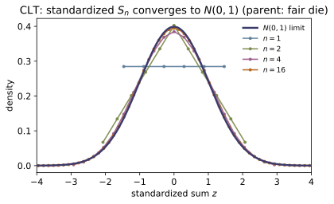
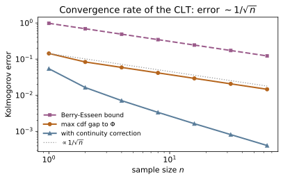
Example problems
A fair die $X$ is uniform on $\{1,\dots,6\}$ — flat, nothing like a bell. Let $S_n=X_1+\dots+X_n$. State the CLT for the standardized sum and explain why $\max_k|F_{S_n}(k)-\Phi(\tfrac{k+0.5-\mu_n}{\sigma_n})|$ should fall to zero with $n$, where $\mu_n=3.5n$, $\sigma_n=\sqrt{(35/12)\,n}$. Check: clt_cdf_max_error(die_pmf(),1) $=0.05424$ (one die: visibly non-normal), while clt_cdf_max_error(die_pmf(),16) $=0.00163$ and clt_cdf_max_error(die_pmf(),64) $=0.00041$ (the sum is the bell to four places).
With $\mu=3.5$ and $\sigma^2=\tfrac1{6}\sum_{k=1}^6 k^2-3.5^2=\tfrac{91}{6} -12.25=\tfrac{35}{12}$, the CLT says $Z_n=(S_n-3.5n)/\sqrt{(35/12)n}\to N(0,1)$ in distribution, i.e. $P(Z_n\le z)\to\Phi(z)$. Equivalently $S_n\approx N(\mu_n, \sigma_n^2)$, so the standardized cdf of the exact convolved law should hug $\Phi$ ever more tightly. One die is uniform, so its cdf is a staircase far from $\Phi$ (gap $0.054$); convolving sixteen and then sixty-four copies (nfold_pmf) smooths the staircase into the Gaussian, the gap collapsing to $0.0016$ and $0.0004$ — the central limit theorem, made quantitative by clt_cdf_max_error.
~ST-16For i.i.d. $X_i$ with mean $\mu$ and variance $\sigma^2$, show $E[S_n]=n\mu$ and $\operatorname{Var}(S_n)=n\sigma^2$ (so $\operatorname{SD}=\sigma\sqrt n$), and that $\bar X=S_n/n$ has mean $\mu$ and variance $\sigma^2/n$ — the standard error. Why does the pmf of $S_n$ equal the $n$-fold convolution of the parent? Check: for five dice, nfold_pmf(die_pmf(),5) sums to $1.0$, with pmf_mean $=17.5=5\cdot3.5$ and pmf_var $=14.5833=5\cdot\tfrac{35}{12}$; and convolve_pmf(die_pmf(),die_pmf()) equals nfold_pmf(die_pmf(),2).
Expectation is linear, so $E[S_n]=\sum_iE[X_i]=n\mu$ unconditionally. For independents the covariances vanish and variances add, $\operatorname{Var}(S_n)=\sum_i\operatorname{Var}(X_i)=n\sigma^2$, hence $\operatorname{SD}(S_n)=\sigma\sqrt n$ and $\operatorname{Var}(\bar X)= \operatorname{Var}(S_n)/n^2=\sigma^2/n$. The pmf identity is the law of total probability over the value of $X_1$: $P(S_2=k)=\sum_jP(X_1=j)P(X_2=k-j)=(p*p)[k]$, and iterating gives the $n$-fold convolution. Numerically the five-die law normalizes to $1$ and carries mean $17.5$ and variance $14.583$ — exactly $5\mu$ and $5\sigma^2$, the additivity the CLT rescales.
~ST-06, ~MA-21Let $Y_i=(X_i-\mu)/\sigma$, so $E[Y]=0$, $E[Y^2]=1$, and $Z_n=\frac1{\sqrt n}\sum_iY_i$. Using $M_{Z_n}(t)=[M_Y(t/\sqrt n)]^n$ and the expansion $M_Y(s)=1+\tfrac12 s^2+o(s^2)$, show $M_{Z_n}(t)\to e^{t^2/2}$, the mgf of $N(0,1)$, and conclude $Z_n\to N(0,1)$ by uniqueness. Which features of the parent survive the limit? Check: the limit target is the standard normal: float(standard_normal_cdf(0.0)) $=0.5$, float(standard_normal_cdf(1.96)) $=0.975002$, and (continuous check) the integral of standard_normal_pdf up to $1$ equals float(standard_normal_cdf(1.0)) $=0.841345$.
Independence factorizes the mgf, and the identical scaling gives $M_{Z_n}(t)=[M_Y(t/\sqrt n)]^n$. With $M_Y(0)=1$, $M_Y'(0)=E[Y]=0$, $M_Y''(0)=E[Y^2]=1$, Taylor gives $M_Y(s)=1+\tfrac12s^2+o(s^2)$, so
the ~MA-21 limit $(1+a/n)^n\to e^a$. Since $e^{t^2/2}$ is the mgf of $N(0,1)$ (~ST-12), uniqueness gives $Z_n\to N(0,1)$. Only the first two moments of the parent enter (through $E[Y]=0$, $E[Y^2]=1$); all higher structure is $o(1/n)$ and washes out — that is universality. The code confirms the limit law: $\Phi(0)=\tfrac12$, $\Phi(1.96)=0.975$, and $\Phi=\int\varphi$.
~MA-21State the Berry–Esseen bound $\sup_x|F_{S_n}(x)-\Phi(\tfrac{x-n\mu}{\sigma\sqrt n})| \le C\rho/(\sigma^3\sqrt n)$ with $\rho=E|X-\mu|^3$, and read off the rate. For the die, compute $\rho$ and verify the bound at $n=1$. Check: pmf_third_abs_moment(die_pmf()) $=6.375$; berry_esseen_bound(die_pmf(),1) $=0.9797$ and kolmogorov_cdf_error(die_pmf(),1) $=0.1434\le0.9797$; the bound at $n=4$ is $0.4899=0.9797/\sqrt4$.
The Berry–Esseen theorem upgrades the CLT to a uniform statement with an explicit $O(n^{-1/2})$ rate: doubling $n$ shrinks the worst-case cdf error by $1/\sqrt2$, and the constant is universal ($C\le0.7655$). For the die, $\rho=E|X-3.5|^3=\tfrac1{6}\cdot2\,(2.5^3+1.5^3+0.5^3)=\tfrac1{3}(15.625+3.375+0.125)=6.375$, $\sigma=\sqrt{35/12}=1.7078$, so the $n=1$ bound is $0.7655\cdot6.375/1.7078^3=0.9797$. The actual Kolmogorov distance is $0.1434$ — well inside the bound, with the slack $\Phi$ already absorbing most of the staircase. Because the bound scales as $1/\sqrt n$, at $n=4$ it is $0.9797/2=0.4899$, matching berry_esseen_bound.
~ST-07For $X\sim\mathrm{Bin}(20,\tfrac12)$ ($\mu=10$, $\sigma=\sqrt5$), approximate $P(X\le13)$ with and without the continuity correction $P(X\le k)\approx\Phi(\tfrac{k+0.5-\mu}{\sigma})$, and compare to the exact value. Why is the correction needed? Check: binom_cdf(13,20,0.5) $=0.942341$ (exact), normal_approx_binomial(13,20,0.5,False) $=0.910144$ (no correction), normal_approx_binomial(13,20,0.5) $=0.941238$ (corrected).
The binomial is a sum of $20$ Bernoulli$(\tfrac12)$ indicators, so by de Moivre–Laplace $\mathrm{Bin}(20,\tfrac12)\approx N(10,5)$. Without correction, $P(X\le13)\approx\Phi(\tfrac{13-10}{\sqrt5})=\Phi(1.342)=0.9101$ — off by $0.032$, because a smooth normal cdf evaluated at the integer $13$ ignores the probability mass in the bar at $13$. Giving each integer the interval $[k-\tfrac12,k+\tfrac12]$ moves the boundary to $13.5$: $P(X\le13)\approx\Phi(\tfrac{13.5-10}{\sqrt5})=\Phi(1.565) =0.9412$, matching the exact $0.9423$ to three digits. The half-unit continuity correction is the difference between a one-digit and a three-digit approximation; over all $k$ it cuts the max cdf error for $\mathrm{Bin}(10,\tfrac12)$ from $0.123$ to $0.0027$.
Two refinements: (a) the local de Moivre–Laplace theorem $P(X=k)\approx \tfrac1\sigma\varphi(\tfrac{k-\mu}\sigma)$ approximates a single bar; (b) an interval uses $P(a\le X\le b)\approx\Phi(\tfrac{b+0.5-\mu}\sigma)-\Phi(\tfrac{a-0.5-\mu}\sigma)$. For $\mathrm{Bin}(20,\tfrac12)$ estimate $P(X=10)$ and $P(8\le X\le12)$. Check: de_moivre_laplace_pmf(10,20,0.5) $=0.178412$ vs exact binom_pmf(10,20,0.5) $=0.176197$; normal_approx_binomial_interval(8,12,20,0.5) $=0.736448$ vs exact $0.736824$ (binom_cdf(12,20,0.5)-binom_cdf(7,20,0.5)).
(a) Dividing the continuity-corrected single-bar probability by its unit width gives the local theorem: the bars of the pmf trace the normal density. At the center, $P(X=10)\approx\tfrac1{\sqrt5}\varphi(0)=\tfrac{0.39894}{2.2361}=0.17841$, within $0.002$ of the exact $0.17620$, and the local densities sum to $\approx1$ across the support. (b) For an interval both endpoints are widened outward — $b$ up to $b+\tfrac12$, $a$ down to $a-\tfrac12$ — so $P(8\le X\le12)\approx\Phi(\tfrac{12.5-10} {\sqrt5})-\Phi(\tfrac{7.5-10}{\sqrt5})=\Phi(1.118)-\Phi(-1.118)=0.7364$, matching the exact $0.7368$. This is the de Moivre–Laplace Gaussian that ~SM-01 puts on the two-state multiplicity.
~ST-09Since $\mathrm{Poisson}(\lambda)$ is a sum of $m$ independent $\mathrm{Poisson}(\lambda/m)$ pieces, the CLT gives $\mathrm{Poisson}(\lambda)\approx N(\lambda,\lambda)$ as $\lambda\to\infty$. Argue the max cdf error decays like $1/\sqrt\lambda$, and state the binomial rule of thumb $np\ge5,\ n(1-p)\ge5$. Check: poisson_approx_max_error(4.0) $=0.03218$, poisson_approx_max_error(16.0) $=0.01648$, poisson_approx_max_error(64.0) $=0.00829$ (each $\times4$ in $\lambda$ halves the error); normal_approx_applicable(20,0.5) $=$ True but normal_approx_applicable(8,0.5) $=$ False ($np=4<5$).
The reproductive property (~ST-09) writes $\mathrm{Poisson}(\lambda)$ as a sum of $m$ i.i.d. Poissons, so the CLT applies with $\mu=\operatorname{Var}= \lambda$, giving $\mathrm{Poisson}(\lambda)\approx N(\lambda,\lambda)$ and $P(X\le k)\approx\Phi(\tfrac{k+0.5-\lambda}{\sqrt\lambda})$. The Berry–Esseen rate is $\propto1/\sqrt\lambda$ (the "sample size" is $\lambda$), so quadrupling $\lambda$ halves the worst-case error: $0.0322\to0.0165\to0.0083$ at $\lambda=4,16,64$. For the binomial the same logic demands the mean sit several $\sigma=\sqrt{npq}$ from both boundaries $0$ and $n$; the usual threshold is $np\ge5$ and $n(1-p)\ge5$. $\mathrm{Bin}(20,\tfrac12)$ passes ($np=n q=10$); $\mathrm{Bin}(8,\tfrac12)$ fails ($np=4$), too few trials for the bell to fit — exactly what normal_approx_applicable reports.
Run the worked code: cd ST/ST-18_clt/code && python3 clt.py